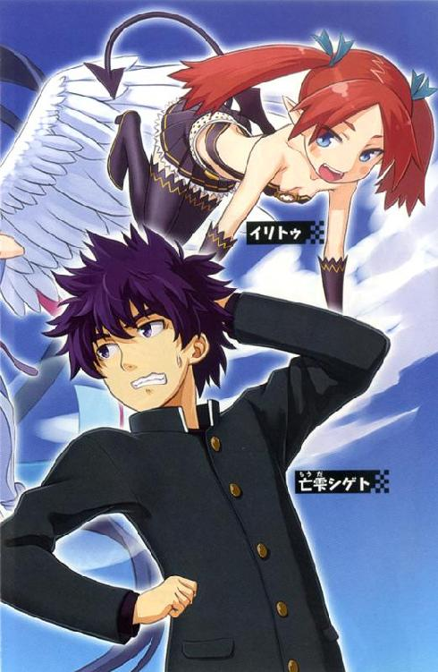
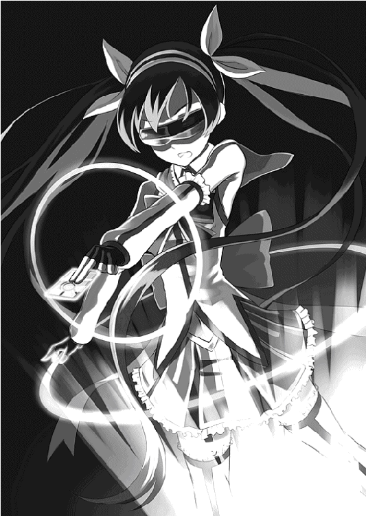
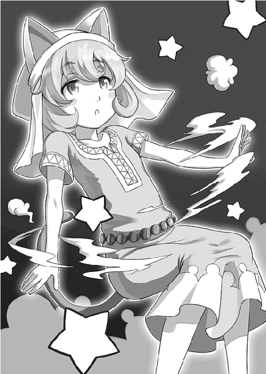
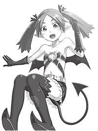

| 魔法少女のくせになまいきだ。 (スマッシュ文庫) | |
| 永井寛志 | |
| PHP研究所 (2011) | |

魔法少女のくせになまいきだ。
著●永井寛志
イラスト●モフ


正午過ぎの国道上を爆走する、一台の《重力飛行式バイク》があった。
青いゴーグルに、戦闘用のコスチュームを装備した魔法少女は、衛星ナビゲーションの誘導システムを用いて渋谷から新宿方面に移動している。
ゴーグルの上からはわかりにくいが、やわらかな顔立ちに険しさを含ませた彼女は、正義の組織『世界平和連盟』に所属する対魔獣エージェント、若宮ほゆらである。
魔獣というのは平和を脅かす怪物の総称で、彼女の後方では、蛇の頭を何本もうねらせた巨大なターゲットが、滑りのある表皮を頭上の高速道路に擦り付けていた。猛スピードでほゆらを追走しながら、ムチを打つように頭部で攻撃を仕掛けてくる。アスファルトが粉砕されて、小石が銃弾のようにあちこちへと飛散した。
そのたびに重力飛行式バイクの障害物センサーが反応して、警告音がやかましい。
ほゆらはゴーグルの無線機で、司令部に連絡を入れた。
「そろそろ殺っちゃっていいかしら？」
『ああ、このままだと規制区域の外に出ちまうからな。新宿駅を避けて、都庁の第一庁舎裏で討伐をお願いしたい。やれるかい？』
彼女は振り向いて、背後のターゲットを確認する。
「できれば魔獣の最新情報が欲しいわ」
『わかった』
無線機の向こうでキーボードのタイプ音が響く。
『事前の報告では八俣大蛇って話だったが、そいつはヒドラだ。毒性の血液と治癒能力に注意してくれ。近距離からの攻撃は危険だぜ』
「それなら封印するのがベストかしら。サポートは受けられるの？」
『検討しよう』
◇
――二十秒ほど経ってから、具体的な作戦が提案された。
『目標地点の手前に《対戦車用破甲爆雷》を投下して足を止める。ほゆら君は血液を浴びないポイントまで移動して、封印に集中してくれ。失敗したら杉並方面にＵターンだ』
「了解！」
重力飛行式バイクは、東京都庁の裏道に向けて左折をしたあと、急加速でヒドラとの距離を引き離した。キュイィンという仮想のエンジン音が、無人の新宿エリアに響き渡る。
目標地点まで残り三百メートル。
そこで彼女は歩道に《人影》を発見して、あわてて司令部に報告を入れた。
「ちょっと、なんで民間人がいるのよ、それとも別のエージェント？」
『おいおい、そこは規制区域だぞ。エージェントも民間人もいるわけがない。つうか、もう空爆の指示は出しちまったぜ？ 不明な第三者はスルーだ、諦めよう』
「バカ言わないで！」
『どわっ！ いきなりデカい声を出すんじゃないよ。その位置だったら爆風は受けないだろうし、万が一にも血液を浴びたら、そのときは骨さえも残らないんだ、バレやしないって』
「あのね......私たちは世界平和連盟なの、わかる？ ちゃんと民間人を救助できるように作戦を考えてちょうだい」
彼女らの都合などお構い無しに、土煙を巻いたヒドラは轟音を立てながら迫ってくる。
ほゆらは目標地点に重力飛行式バイクを停車させて、胸元から一枚の魔法カードを取り出した。
◇
その二分前。
不明な第三者と呼ばれた少年、亡雫シゲトは、ボサボサの頭に黒のベルベットコートを着用したスタイルで、新宿中央公園の外周をゆっくりと歩いていた。
――中学を卒業した記念に、東京観光でもしようと思ってね。
岐阜の山中から高速バスで遥々と、七時間もかけて新宿駅の西口まで来たんですよ。
そうして都内をじっくりと見物していたところ、何やら遠くから建設現場みたいな騒音と振動が、ボリュームを増しながら全身に伝わってくるじゃない。
おいおい地震だよと思いながらも、やむなく事態が収まるのを待っていたら、正面から一台の重力飛行式バイクが、明らかなオーバースピードで走ってきた。どう見ても時速百二十キロは超えていたよ。田舎ではまずお目にかかれない、金持ち専用のハイテクマシーンを間近で見られた俺はじわりと胸が熱くなった。
でも、そいつは地獄からの警鐘だった。
次の瞬間には、正面に見えていた首都高速道路がめくれ上がり、鉄板をブン投げたような、グワァン！ という音を響かせながら、歩道橋をＭの字に押し潰した。俺は感じたままの事実を大声で叫んでいたさ。
「すげぇーッ!! 東京じゃあ、実物大のセットで特撮映画を撮影しているのかッ!?」
ってね。
それは、見たこともないサイズの大蛇の群れだった。
いや違うな、よく見ると根っこで体が繋がっているから、八俣大蛇とか、そんなやつかもしれないね。どっちにしてもスケールがハンパ無かった。制作費に何千億ドルかけているんだと。
感動している間にも、空にはコンテナ搭載のジェット機が、飛行機雲を作りながら飛んできて、円盤のような物体を、五個、六個と、ぽろぽろ落としていくじゃないか。
どんだけ大作なんだよ......。
――亡雫シゲトの立っている歩道より百メートル後方では、重力飛行式バイクから降りた若宮ほゆらが、青いゴーグルを付けたまま、守護の魔法カードを胸に構えていた。
「オユエスオーグ・イソウ・ヨ・イシアータ」
前方では、上空から投下された対戦車用破甲爆雷がヒドラに命中して、戦争さながらの爆音が、連続で豪快に鳴り響いている。
熱風が吹き抜けた。
聴覚はハウリングのような高音に支配される。
「間に合えぇ――――ッ!!」
黄金のオーラを纏ったほゆらが、シゲトに向けてカードの力を解き放った。
《守護の魔法》がシゲトに効果をもたらす直前のタイミングで、ヒドラの腹部からは紫色の血液がダムの放水のように勢いよく噴出。シゲトはそれを遮ろうと両腕を構えたが、時すでに遅く、全身に血液を浴び、黒いコートはべったりと紫色に上塗りされてしまった。
ほゆらは青ざめた顔で、司令部への確認を急いだ。
「血液を浴びた人間は............どうなるんでしたっけ？」
『肉体が腐食して骨さえも残らない』
遠目に見ても、あれだけの量を浴びてしまったとなると、魔法カードの回復力ではどうにもできないだろう。彼女は絶望的な気持ちを抑えながら、シゲトの元へと駆け寄った。
周囲には魚の腐ったような異臭が立ち込めている。アスファルトに流れる紫色の液体を確認して、その中にブーツのつま先をゆっくりと滑り込ませた。
......反応はない。
（腐食しない......？ 情報が間違っていたのかしら？）
ほゆらは意を決して、彼の背中に声をかけた。
「ねえ、そこのあなた......もしも無事なら返事をしてくれない？」
シゲトは振り返った。
そこには祈るように手を組んだ、見知らぬ少女が立っていた。
無言のまま、彼女の様子を探るシゲト。
首を傾げたほゆらは、再び彼に問いかけてみた。
「えっと......あのー、もしも～し............大丈夫ですか？」
シゲトの身を案ずるほゆらをよそに、彼は自分の世界に入り込んでいた。
「――だからして、近くで見ると想像よりも小柄で、印象からすれば、俺と同じくらいの中学生か、高校生くらいにも見える。もしや社長令嬢なのか？ まあそれはさて置いて、アヒル口よりも猫口で攻めた方が、破壊力がありそうなタイプですな」
「............」
「ついでに魔法少女みたいな、フリル付きのフレアスカートは、『あと数ミリ』の呪文を唱えたくなるギリギリの寸法で、ノースリーブ・ベストから、アームウォーマーに向けて流れる肩の丸みはもう、脳内フォルダに秒速で保存するレベルの、黄金曲線を描いちゃってます。腰の後ろに結ばれた、大きな水色のリボンは、俺に『引っ張ってくれ』と訴えかけてくるのですが、こんな話が聞こえていたら、それこそ命が危ない事でしょう」
「......あのね、ぜんぶ聞こえているわよ」
「むをッ！ ちょっとまってくれ！ 今のは違うよ？ 正しくはヒドラの分析で――」
「どこに《魔法少女みたいなヒドラ》がいるのよ、死にたいわけ？」
「す、すいません！」
上から下まで『毒まみれ』であるはずのシゲトが、何事もなく健康的すぎる様子を見て、ほゆらはホッと安心した。軽いステップで歩み寄ると、シゲトの肩を小さく叩く。
すると――。
彼女の手のひらは煙を放ち、熱い鉄板に押し付けられたようなジュンという音に加えて腐食する肉に紛れた神経のパルスが、わずかに遅れて痛覚を容赦なく刺激した。
「つッ!!」
慌てて数歩さがってから、顔をしかめるほゆら。
困惑しながらも、胸元から魔法カードを取り出して、治癒の呪文を詠唱する。
「オーユ・エ・スクォー・ディング」

魔法の力が発動して、傷口は徐々に回復をはじめた。
「あんたこの血、どう考えても毒よ？ しかも猛毒よ？ なんで無事なの!?」
「え、いや、何が？ っていうか、あれは映画のセットで、これもリアルな人工体液とかそんなヤツじゃないの？」
「違うわよ、ここは《立ち入り禁止》の魔獣危険区域で、あれは正真正銘の本物よ!!」
シゲトはきょとんとしていた。
「それってマジ？」
「マジよ。早くヒドラを何とかしないと、大変なんだから」
背筋に冷たいものが走る。
「な、な、なんで俺は、その猛毒を浴びたのに、平気で息をしているのかな......!?」
「知らないわよ、こっちが聞きたいわ」
「お、おい、この毒を何とか――」
「きゃあッ!! 近寄らないでッ!!」
歩み寄ろうとしたシゲトは、熊でも殺すような勢いで一喝されてしまった。
彼には無害でも、ほゆらが血液に触れれば肉体が腐食してしまうのだ。
そこに、司令部から連絡が入る。
『ほゆら君、ちょっとその不明な第三者に、「グランドビリンスか」と尋ねてほしい』
グランドビリンスとは、神の血族を自称する資産家らが創設した選民組織であり、ほゆらが所属する世界平和連盟の後ろ盾でもある。
この規制区域に入り込めるのは、その構成メンバーか、もしくは......。
「あんた、グランドビリンスなの？」
「グランド......ビリンス？ 何だよそれは」
シゲトの返答を聞いた司令部は、ほゆらに次の作戦を提案する。
『これより未知の一般人は《天然の神さま》として対処する。ヒドラの討伐には彼の力を使わせてもらおう』
「ちょっと、それ本気で言ってるわけ？」
『ああ本気さ。すぐにコツを教えて、神術を使わせるんだ』
ほゆらは困った表情でしばらく考え込んだ。
「あんた、名前は何て言うの？」
「え、俺は亡雫シゲトだけど。そんな事より、早くヒドラをどうにかしてくれよ」
「......そうね、じゃあシゲトに一つ、お願いがあるの」
「お願い？ どんな......」
――この状況で「お願い」とか。
俺たち、まだ出会ってから数分も経ってないですよ？ しかも特殊な状況下で結ばれた二人は決して長続きしないって言うし。もっとほら、カフェでお茶を飲むところから始めたいよね。ついでに寒空の下で夕日を眺めながら俺がコートを貸しちゃったりして、それが紫色した呪いの装備で......つうかまずは解毒してください、これマジでお願いします。
それにしても困ったよ。
彼女の口から出た「お願い」は、かなり酷いものだった。
「ヒドラを倒してほしいの」
「無理だろ」
はい終了～。
一般人ですからね。あなたが使ったような変な力とか、俺には無いですから。
ていうか歩いてる中学生を捕まえて、いきなり巨大な生物を倒せとか、無茶を言っちゃいけないよ。俺の乙女心を返してよ。
すると彼女は言ってくれました。
「無理じゃないわ。シゲトの先祖は神さまだもの。きっと殺れるから」
バカなんだろうか。
まあ、俺って今ちょっとだけ「やられ役の神さま」みたいなのが降臨しているけれど、普段はそうでも無いんだよ。平凡で穏やかな暮らしを堪能している、只の学生なんです。だいたいヒドラを倒すのって、あなたの仕事じゃないんですか？
お願いをしてきたのが魔法少女だったから我慢ができていたようなもので、これが悪人面のおっさんだったら、もう絶対に口走ってるよ。男ってつらいですね。
「ヒドラを倒すのって、あなたの仕事じゃないんですか？」
だめだ、我慢できなかったよ。
けれど彼女は、嫌な顔ひとつしなかった。
「そうね。でも魔法カードを二枚も使っちゃったから、状況が悪いのよ。今だけ協力してくれない？」
俺......燃えてきました。
駄々をこねていたのが恥ずかしいです。
「わかったよ。それで具体的には、何をすれば――」
「ありがとう。助かるわ。短めに説明するからよく聞いてね。神さまには必ず《従者》が存在するの。天使とか、使い魔とか、まずは、それを呼び出してちょうだい」
「ほ、ほう......」
もしや電波系少女なのですか。
そりゃあ、毎年のように宇宙と交信しているバラエティ番組とかあるけれど「呼び出してちょうだい」って簡単に呼び出されちゃったら、世界のわくわくが半減しちゃうよ？
でも、居るのなら出てきてください。できれば早急にお願いします。
だって死にたくないもんね......。
頑張ってお願いをしていたら、本当に聞こえて来ちゃったよ。
心の声ってやつが。
（ヒドラじゃなくて、ヒドラッチって言います）
誰だてめぇ。
すまない、ちょっとイラッとした。ヒドラでも、ヒドラッチでもいいけど、もしかして声の主は目の前でぶっ倒れている、あなたなのですか。まさかね。
（まさかのわたしがヒドラッチですよ、邪神さま）
黙れクソムシが!!
ごめん、マジでごめんね。予想外の発言が聞こえたから。
冗談は一行で終わらせてよね。それに『邪神さま』ってどういう事だよ。
（あなたは邪神さまの末裔なんですよ。ついでに、その女は嘘をついております）
おまえ、あれだ、本当に魔法とかで焼却処分されたいの？
俺ってまだ彼女の名前すら知らないけれど、「お願い」されちゃった仲ですから、いわゆる準彼女ってやつ？ それが「嘘をついております」だとか、話によっては毒団子にしてゴキちゃんのエサにしちゃうからね。さあ答えるんだ本当の事を。
（......私は中東の蛇王、ザッハーク様の従者なのですが、ある日、世界平和連盟の奴らが、恐ろしい大部隊で本拠地に攻め込んで来たのです。我々の力では、到底太刀打ちできませんでした。最後にザッハーク様は、側近の私だけを外部に転送して下さったのです。当初の予定では、田舎に暮らす《未覚醒の邪神さま》に仕える予定でした――）
未覚醒の邪神さまってのが、たぶん俺ですね。
ついでに状況を分析すると、「この城はもうだめだ、お前だけは逃げろ」って、そのザッハーク様とやらが最終決戦の覚悟を決めている時に、「わかりました！」って逃げて来ちゃった感じですな。それって最低だと思います。
まあ、こっちに来た理由はわかったよ。でも今のところ、彼女は嘘を吐いてないでしょう。
世界平和のために魔獣を討伐している魔法少女なんだから、そりゃあ東京のど真ん中に巨大な怪物が出現すれば、どう考えても攻撃しますって。田舎で寝てればよかったのに。
（違うんです。いきなり東京に転送されたのは驚きましたが、卵の状態で静かに眠ろうとしていたのです。なのに奴らは火炎放射器で、わたしを火あぶりにした挙句に、マシンガンで乱れ撃ちですよ。危うく消されるところでした）
それはけしからん。
ドラゴンエッグを一つ破壊するだけで、歴史は大きく変わってしまうのに。
......待てよ？ コイツはもしや俺が東京に来たから酷い目にあっているのか。それってちょっと気の毒だとは思うけど、俺の力じゃあどうにもできないよ、どうすんの。
（策ならあります。わたしに神術を使ったフリをして、魔獣因子を回収してください）
ほほう。
意味がわからないね。
（とにかく両手を構えて、オーユ・エ・スゥユイシ・アーカ、と唱えてください。タイミングを見計らって消えますので）
消えられるのか。
だったら最初から消えてればいいのに、なぜ消えない。
（いえ、その......あなたが『邪神さま』だとは思いませんでしたから。それに――）
それに――って、最後まで言えよと思いながらも、俺は両手を構えてみせた。
怪しまれそうだったし、何よりも早く解放されたいからね。
あとは呪文を唱えるだけですな。
「オーユ・エ・スゥユイシ・アーカ」
するとヒドラッチの体は、うっすらとした青紫色の光になって、スパッとその場から消えてしまった。アスファルトに大きな穴だけが残ったよ。穴には毒沼のように紫色の液体が溜まっているけれど、俺の全身を染めていた同じ成分は都合よく消滅したらしい。
今日の服装は高価だったから、本当に助かりました。
さようならヒドラッチ。最後にいい仕事したねヒドラッチ。
（いえ、わたしは邪神さまの心の中にいますよ）
消えてくれよヒドラッチ。
もしかして脳内に永住されたらマジで困るんですけど、大丈夫だよね？
（残念ですが、随分と力を使ってしまいましたので、しばらくは時間凍結をして生命力を蓄えなければなりません。ですがご安心ください！ お礼に邪神さまの『本来の従者』を呼び出せますよう、最後の力で細工をしておきましたから。――それでは、さようなら。また会う日まで......）
おいまて、感動の別れみたいな演出はいらないぞ。
余計な細工はやめてくれ。
本来の従者とか、絶対にろくなヤツじゃないでしょう。
聞いていますかね。
（............）
不安だけ残して、去って行ったよヒドラッチ。
次に出てきたらお仕置きだな。
――こうして『ヒドラ』の一件は終わった。
ほゆらは、ホッと胸を撫で下ろしてからシゲトの功績を称える。
「凄いじゃない！ あんな神術見たことが無いわ。どんな神さまだったのかしら。従者に聞けばわかるはずだけど、教えてくれない？」
「あいや、それがもう聞こえなくってさ......」
「そっか～、残念ねぇ。でも、いきなりあんな力を使ったんだから、仕方がないわよね」
興味津々のほゆらに、司令部からの連絡が入った。
『ミッションコンプリートだ。あとは清掃班に任せて、すぐに本部まで戻ってくれ』
「本部って、彼はどうするのよ」
『放置する』
「......放置ですって？」
『ああ、グランドビリンス直々の命令でね。「天然の神さまを使うとは何事だ、すぐに解放するように」って、お叱りがあったよ。来期の予算を一割カットされた』
「冗談でしょ!?」
『事実だよ。とにかく戻ってミーティングだ』
「......了解......」
ほゆらは残念そうに肩を落とした。
しかし気持ちを切り替えて、胸元から一枚のカードを取り出す。
「これ、うちの住所が書いてあるから」
「お、おう、ありがとう」
カードを受け取るシゲトの右手を、ほゆらは両手でぎゅっと握りしめた。
温もりが伝わってくる。
「よかったら遊びに来てちょうだい」
突然の出来事にシゲトは呼吸のタイミングを失った。
ほゆらは路肩に準備された重力飛行式バイクへと勢いよく搭乗し、指紋認証を済ませて機体の状態をアクティブへと切り替えた。
「じゃあ、またねっ！」
誘導システムが一気に加速をかけて、機体は瞬く間に姿を消した。
シゲトは困惑していた。
実は俺、邪神さまでした――！
......なんて絶対に言えないよな。
呆然としながら、カードの内容を確認してみる。
「へぇ、若宮ほゆらって言うのか......あれ？ これって家の近所じゃないか」
名刺には、地元にある神社の名称が記されていた。
あれから一週間が経過して、結局のところ天使とか、使い魔とか、そんな従者が現れることもなく、俺は岐阜県高山市の自宅でごろごろと、平穏な毎日を過ごしておりました。
残された課題は、世界平和連盟に所属する魔法少女なエージェント、若宮ほゆらちゃんとの約束を、如何にしてクリアするか......。
東京旅行の最中に巻き込まれた『ヒドラッチ事件』の折に彼女から受け取った名刺の情報からすれば、世界平和連盟の活動拠点は偶然にも、我が家の近所にある神社だったわけですが、いきなり「遊びに来てちょうだい」とか誘われても、そう易々と訪ねて行ける度胸もないし、他にうまい口実は無いものかと、この件は保留にしてあったのです。
だがしかし、今日から俺は高校生になる。
学業成就の神頼みならば、神社を訪ねる理由としては、申し分が無いでしょう。
準備は整ったので、俺は朝の五時半から新品の制服を身にまとい、薄暗い空の下、住みなれた町の、民家と、田んぼと、山林ばかりが続く田舎道を歩いて一時間......。たいそう古めかしい感じの、立派な神社に到着しました。
傾斜のなだらかな参道を登って行くと、境内には神さまに拍子を打って祈願するための拝殿が設けられていて、その中央にある石段の両サイドには、可愛らしい表情の狛犬が、向かい合うように仲よく陣を構えていた。
そこで足を止めると、石段の上から聞き覚えのある女性の声が聞こえてきた。
「おはようございます」
赤と白の装束に、流れるような黒髪。そして、やわらかな顔立ちの巫女さんが、こちらをじっと見つめている。
あれは、まさか......。
「ほゆらちゃん!?」
おいおい嘘でしょう。これが『巫女さん補正』の威力なのか。
先週の《魔法少女なコスチューム》も俺の評価ではＳランクでしたが、今回に至ってはもうＳＳＳを記録しちゃってますよ。たとえば、袖の内側に消えてゆく腕の露出なんかは目で追ってしまうほどに最高ですね。他にも、以前はゴーグルで見えなかった大きな瞳にスラッとした眉毛がマッチして、全体的に優しい印象が伝わって参ります。
こうして勝手な分析を進めている間にも、彼女は一歩足を踏み出してから、
「きゃっ！」
とバランスを崩して、石段をとばしながら、俺の胸に飛び込んできた。いくらなんでも古典的すぎるシチュエーションだろと思いながらも、内心では（きたぁ――ッ!!）とか、大喜びで軸足にグリップを効かせ、バッチリＯＫな態勢を取ってみせた。
迫り来る巫女さん――!!
脇を受け止めようか、腰を受け止めようか、むしろ顔面で受け止めようか。
いよいよ彼女がグッと目を閉じたところで、上半身が接触、胸部に柔軟なプレッシャーが押しよせる。黒い髪がさらりと肩から背中まで流れ落ちた。
彼女の体温とともに、桜の香りがほんのりと漂ってくる。俺はリアルな感触と、首筋への吐息に動揺して、思うように身動きが取れなくなった。ほゆらちゃんは照れを隠すような仕草を見せてから、申し訳なさそうに小さく頭をさげた。
「ご、ごめんなさい」
「あ、ああ、俺は別に――」
沈黙した二人の間に、葉音だけが流れてゆく。
彼女はトンッと一歩離れてから、あわてて別の話題を振ってきた。
「ねえ、それって広瀬高校の制服よね？」
「おぉ、詳しいね。俺って今年から広瀬高校に入るんだよ」
「やっぱり！ 私も広瀬高校に入るのよ。仲良くしましょうね」
「マジっすか!?」
「うんうん。今日は入学式よね？」
「ああ、そうだった、時間は大丈夫かな......」
俺はズボンのポケットから携帯端末を取り出して、現在時刻を確認した。
液晶画面には七時三分が表示されている。
準備に戻ってから学校に向かうとすれば、今が頃合いだ。
「そろそろ行かないと」
「そうね、私は着替えに戻るけど、その後でよければ一緒に登校する？」
一緒に登校する!? まさか、初日から美少女と一緒に登校するだなんて、今時、そんなシチュエーションで男がみんな喜ぶと思ったら大間違いですよ!!
俺は喜ぶけどね。
だって早く彼女の制服姿が見たいし、俺たちの関係が校内で噂になってしまえば、悪い虫が付かないってもんでしょう。それに、それに......って色々な妄想を膨らませていたらなんか先手を打たれたよ。
「もしかして、迷惑だったかしら」
うわっ、しまった。
これって時間制限付きのイベントでしたか。
どうしよう「迷惑じゃないよ」って答えても、絶対に「気を遣わなくていいわ」とか、サラッと断られちゃう状況じゃないのか。やばいね、俺の夢が早くも潰えてしまうよ。
とにかく今は、何か返答をしなくては。
「いやいや、全然迷惑じゃないよ。でも今日は手ぶらで来ちゃったから、家までカバンを取りに戻らないといけないし、つまり、えーっと......」
「そっか、じゃあまた学校でね」
おい、なんで俺は断っているんだ。彼女は軽くお辞儀をしてから、愛想よく手を振って『世界平和連盟・岐阜討伐隊』と書かれた小屋へと立ち去ってしまったよ。
残念だけど、一緒に登校するのは諦めて、早く学校に向かうしかないね。
◇
青いフェンスと緑の防護ネットに囲まれた、広瀬高校の校庭。
新入生は入学式の事前説明を受けているのですが、俺はその真ん中でキョロキョロと首を動かしながら、ほゆらちゃんの姿を探し求めていた。
彼女がどの辺に並んでいるのか、見当もつかない。
朝礼台には、違和感のある講演者がスタスタと足音を立てて登ってきた。
白い学ランで長身。第一印象は軍人か政治家なのか、もしくは、どこやらカンパニーの社長にも見えるその男は、強い口調で自己紹介を始めちまった。
『今日から君たち新入生をサポートする、生徒会長の鏡原タツミだ』
いやまて、いきなり校則違反の真っ白な制服を着ている野郎に、しかもオールバックまで決めちゃって「生徒会長です」とか真剣な顔をされても、反応に困るじゃないか。
そう思ったんだけどね......。女子の列からは「ステキ～」とか「かっこいい」だなんて黄色い声が聞こえてくる。俺は別にうらやましくなんか無いんだけれど、ちょっと騒ぎすぎだとか、俺にも分けてくれ、なんて猛烈なジェラシーを燃やしまくった。
そうしたら......。
生き生きとした幼い少女の声が、俺の脳内に直接語りかけてきた。
（いいよ、いいよぉー、その調子だよ～）
宇宙的な干渉ですか。
もしくは欲求不満でしょうか。ほゆらちゃんの巫女さんファッションだけでは飽き足らず、今度は脳内少女だなんて、遂に『何次元なのか』さえわからない領域に足を踏み入れちゃったよ。
そうだ、これは空耳だ。空耳にしてしまおう。
（空耳じゃないよ～、あたしは邪神さまの従者なんだよぉ～）
「うおぉ、消えろ幻聴めッ、ウジ虫めッ、ミトコンドリアめッ」
俺は頭を抱えて悶え苦しんだ。
付近の生徒はドン引きしているけれど、そんなの気にしていられない状況ですからね。
しかし脳内少女は一段と鮮明な声で、再び俺に語りかけてきた。
（さっすが邪神さま～。何気ない素振りだけで、人に恐怖を与えてますね～）
......ああ、覚悟はしていたよ。
いつかこんな日が来るんじゃないかってね。
でも早すぎでしょう。
せめて......せめて少しだけでも、甘くて切ない学園生活を堪能したかった。
（なるほどぉ。じゃあじゃあ、堪能しちゃいましょ～）
黙れ小娘が。お前みたいなのが出てきた場合には、だいたい爆発エフェクトが絶えないハチャメチャな学園生活が押しよせて来るんだよ。それって俺が求めていた学園生活とはまったく違ったジャンルになっちゃうんだよ、わかる？
（ありゃりゃ、それは災難でしたね～。あたしにできる事はありますか？）
駄目だコイツ......まったく理解してないよ。
たとえば、俺が言っているのは、ほゆらちゃんが横に並んで一緒に歩いて、他の男子から殺意の視線を向けられながらも、嬉し恥ずかしい、純情で青春な体験を――。
（ほうほう......）
ポンッ！
ものすごく、嫌な音がしました。
俺を中心にして発生した渦巻き状の強風が、校庭全体へと広がった。あまりの強風に耐えかねた生徒らは、後ろの生徒を背中でグイグイと押して行く。辺りは黄土色の煙幕に覆い尽された。
俺は砂が目に入らないように、両腕で顔面をガードする。
せっかくのパンツ観賞タイムなのに、それどころじゃない。
しばらくして煙幕が消え、やがて視界は回復へと転じはじめる......。
「げほっ、げほっ......何が起きたんだ？」
砂の粒子が肌に絡み付いて、ものすごく気持ちが悪い。
ほとんどの生徒は、外周にあるフェンスの付近にまで追いやられていた。
いわば台風の目の位置にいた俺はグラウンドの中央に取り残されていた。
砂地のグラウンドには放射状の砂紋が美しく描かれている。
「ほらほら、邪神さま～、出番ですよぉ～」
「なんの出番だよ、まったく............でゅ、でゅふっ!! な、な、なぬっ!?」
俺はピンチな状況に追い込まれていた。
どこから話せばいいのやら。
教員はダッシュで体育館まで報告に走っていた。
フェンスの付近ではタツミが「大丈夫か諸君、ケガはないか！」と生徒らに呼びかけを行っている。校庭の中央に取り残された俺の対面には、漆黒のロングヘアーに、やわらかな面持ちの女子生徒が、困ったような表情で腕をクロスに構えていた。
「あなたが......やったの？」
それは待望のほゆらちゃん、制服バージョンだった。
いつものように服装チェックをしたいところだけど――。
何やら疑われているようなので、ここは誤解を解くのが先決です。
「ち、ちがうって。俺じゃない。断じて俺じゃないよ!?」
「だったら、その従者はどう説明する気？」
言われて振り返ると......。
視線の高さには小柄で可愛らしいツインテールの小悪魔が、ゆらゆらと宙に浮かんでいるじゃないか。背中にはコウモリのような黒い羽が生えておりますが、そのパタパタとした動きだけでは飛べないでしょう、物理的におかしいですよ。
ていうか、その前に。
「お前はいったい何者だ？」
「ありゃりゃ、そういえば、自己紹介がまだでしたねぇ～。あたしはリリス族のイリトゥって言うんだよ～」
「リリス族ってのは何者だ？」
「えっと～、リリス族っていうのは、古くから邪神さまに仕える、闇の魔族なんだよ～」
「闇の魔族って......つまり悪い奴なのか？」
「おぉ、褒められちゃった～」
「褒めてねーよ」
すると背後から、
「ねえ、シゲト......。邪神さまって、どういう事なの？」
ほゆらちゃんからの質問、いや詰問だった。
この時ばかりは背筋がゾッとしたよ。
俺はゆっくりと彼女に向き直ってから、困惑する脳ミソで必死に弁解を試みる。
「まってくれ、それは誤解なんだ。俺の先祖はたしかに邪神さまだったらしいけど、俺はむしろ善良な神さま、いや人間であって、決して悪い奴では――」
「嘘ばっかり!!」
風圧を感じる怒号でした。
「だって泣いてる子までいるのよ？ あんたは女の子を泣かせて、神さまとしても、人間としても、男としても最低なんだから、邪神以外の何者でもないわ」
「うっわ......」
あまりの衝撃に俺は絶句した。
イリトゥは嬉しそうにシッポを振っていた。
「邪神さまってば、邪神さまだもんね～。だってほら、ちゃ～んとあたしに邪念をくれて時間凍結からスッキリと解放してくれたんだしぃ～」
頼むから状況を悪化させないでくれ......。
そしたら案の定、ほゆらちゃんはポケットから一枚のカードを取り出して、ぶつぶつと謎の言語をしゃべり始めた。
「エカシェーリ・コヨゥエザクィ・オズルィス」
「邪神さま、あの魔法は避けないと危ないですよぉー!!」
「うぉい、もうちょっと早く言ってくれ!!」
彼女の指先から魔法カードが放たれると、ダーツでも投げたような風がビビッと、顔のすぐ横を走り抜けていった。これは本気で殺るつもりだ。どうにか説得をしなければ。
「な、なあ、ほゆらちゃん、巫女さんが神さまに刃を向けるっていうのは、ルール違反だと思うんだよね。罰が当たるんじゃないかなぁ～」
「うるさいわね、もののけを従えた危ない邪神を退けるのに、罰も何もないわよ。それに気持ちが悪いから『ちゃん』とか付けるの、やめてくれる!?」
「わかった、わかったから、その物騒なカードをしまってくれ！」
もうね、色んな意味で終わっていますね。
説得するのは無理っぽいから、俺は別の解決方法を模索してみた。
「そうだ、もののけがいるから話がややこしくなるんだ。俺は彼女と戦いたくない。よしイリトゥ、お前ちょっと消えろ、もう出てくるな」
「え～。そんなこと言わずに戦ってくださいよ～」
「バカ言え、俺は基本的には普通の人間なんだよ。このままじゃあ、ほゆらさんに殺されちまうじゃねーか。つうか、お前が戦えっての！」
「あたしは戦闘タイプじゃないし～、お腹すいてるし～」
「なんてワガママな小悪魔なんだ......」
隙を突いて、ほゆらさんが容赦なく攻撃を仕掛けてくる。
「エカシェーリ・コヨゥエザクィ・オズルィス」
シュパッと風の音が頬を掠めていった。
「どわぁっーっ、おいやめろ、ちょっと、ほっぺたから血が出ちゃったよ!!」
真剣に命の危険を感じた俺は、逃げるコマンドを選択して敗走ルートを確認するが、思った以上に状況は悪化しており、いつのまにかタツミと謎の武装集団が、ぐるりと俺たちを包囲していた。あれは機動隊だろうか。
青いヘルメットを装備した各隊員は、肩まで隠れる長方形のシールドを構えている。
ざっと数えて六十人くらい。
すると謎の武装集団の間から、タツミがメガホンで警告を与えてきた。
『ア......あー、ゴホン......、そこのシゲト君、キミは完全に包囲されている。おとなしくほゆら君に殺されるか、潔く自決しなさい――』
「バカなのかよ!! どっちも死亡じゃねーか。つうか何でこうなった......おいイリトゥ、おまえ『邪神の扱い』に慣れているのなら、こういう時どうするのか教えてくれ！」
「えぇ～、さっきは消えろって言ったくせに～。謝ったらゆるしちゃうかもだけど、今はなんかイヤだな～」
そうだよね、俺が悪いよね。
「ゴメン、謝るよ、謝るから、教えてください、イリトゥさま」
「よしよぉ～し、じゃあ教えるね。邪神さまは邪神さまだから強いんです。つまり邪神の仕事をちゃんとすれば、この程度の修羅場なんて、ちょちょいですって」
「邪神の仕事って......どんな仕事なんだ？」
「えっとね～、悪いことを考えるだけの簡単なお仕事です」
「うぅっ、なんか猛烈に頭が痛くなってきた......」
「楽しいよ～？ スゴいんだよ～？」
「あーもう、わかったから。それで具体的にはどうすんの？」
「まずはヒュレーを創って血の記憶から呪文に変換します。それを詠唱すると四次元上にスペル・トンネルが発生するから、あとはデュナミスを燃やせばいいんだよ～」
「それはどこの言葉だよ。まずヒュレーが意味不明だし、血の記憶とかデュナミスとかまるで珍紛漢紛じゃないか」
「う～んとね、邪神さまは邪悪なイメージを創ると、その通りになっちゃう、偉大な力を持っているんですよぉ～」
「つまり邪悪なイメージを現実にして、タツミらの混乱を誘うわけだな？」
「そうなんです！」
胡散臭い......。
でも今は緊急事態だから、言われたようにやるしか無い。
邪悪なイメージって、つまり悪い事だよな。
速攻で思い浮かぶ悪い事、悪い事、悪い事......。
「よーし考えたぞ、次はどうするんだ」
「う～ん、血液の流れを意識する感じかな？」
俺は急いで、体内の血流に意識を集中させてみた。
そうしたら唇が操られるように、ペラペラと怪しい呪文を詠唱し始めちまった。
「エルラーノトン・エスオキラム・タオヨールィ・ラーキフ」
黒紫色をしたゴルフボール大の穴が、ブォンという音を鳴らして空中に浮かび上がった。
俺の全身から、群青色をしたオーラが炎のように放出される。
黒紫色の穴の中から光の球体が現れて、その球体は残像を残しながら、俺の前方に円を描きはじめた。続けて円の内側に謎の象形文字をスラスラと書き込んでゆく。
ほゆらちゃんが大きく注意を呼びかけた。
「タツミ先輩、バカな邪神が増長してるから、すぐに生徒を避難させてッ!!」
『......ッッ、了承した。あー、新入生諸君、速やかに校舎への避難を――』
タツミがメガホンで喋り終える前に、光の模様......魔法陣は完成したようだ。
俺の後ろから小悪魔のイリトゥが叫ぶ。
「邪神さま、その魔法陣に右手を接触させたら、いよいよ神術の完成ですよーッ!!」
「よぉーっし、それじゃ遠慮なく神術ってやつを使わせてもらおうか！」
マンホールくらいの大きさをした光の魔法陣に、俺は右手を接触させた。
魔法陣は弾けるように消滅して、頭上から星屑のような光が降り注ぐ。
俺を取り囲むように、ちょうどＣＤぐらいのサイズのミラーが何十枚も空中に出現した。
「あぎゃ――――ッ!!」「目がぁああああ――――ッ!!」
グラウンドの周辺から、ベタな悲鳴が聞こえてくる。
授業中に窓際の席から腕時計でチラチラと光を送ってくる奴がいるでしょう。あれってウザいよなぁ～って、ずっと思っていたんだけど、この神術はつまり、それです。
もちろん目が潰れないように出力を絞ってあるので、良い子は真似をしないように。
「どうだイリトゥよ、俺の神術の威力は凄いだろ」
「おおぉ～、さっすが邪神さま～。じゃあじゃあ、次は邪念でそのミラーをコントロールしてくださいよぉ～」
「コントロール？」
「たとえばそっちのを右に向けて～」
「ほうほう」
「こっちのを左に寄せて～」
「おっ、ミラーが動かせるぞ......」
「それから、それからぁ～」
「こいつは凄いな、思い通りじゃないか！」
その時、ほゆらちゃんが、
「ちょっとシゲト、何をするのよッ!!」
彼女のスカートから白い煙が上がっていた。
俺には何が起きたのか理解できなかったが、イリトゥは大満足な表情をみせていた。
「おおぉー邪神さま、これはかつてアルキメデスが用いたという、ソーラレイじゃありませんかぁ～、まさか神術として拝めるだなんて、感動ですよ～」
「いやまてソーラレイって、もしや、ほゆらちゃんのスカートを焼いたのは俺なのか？」
「そうですよぉ～」
そりゃ駄目だろう......。
彼女の体に火傷の痕でも残ったら、洒落にならない。
「おいイリトゥよ、俺は自分でこのピンチを切り抜けるから、もう口を挟まないでくれ」
「あたしは楽しければ何でもいいですよぉ～」
するとほゆらちゃんが、
「ねっ、ねえ、シゲト？ お天道様で遊ぶのは、危ないかな～って......」
「ああごめん、さっきのは操作ミスなんだ。本当はこうやって――」
俺はミラーを彼女の足元に滑り込ませた。
「水色ストライプ!!」
「うわっ、あんたって、ほんッとに最低だわ!!」
次の瞬間、数十枚のミラーを校庭の端まで飛ばした俺は、何枚かのミラーを経由して、女子のパンツガードを次々と攻略していった。
「イチゴパンツに水玉に、キャラパンにブラック!? よぉーしいいぞ、わっはっは！」
「こら、シゲト、やめなさいよ！ この変態邪神！」
ほゆらちゃんには絶え間なくミラーを飛ばして、入念に動きを封じておこう。
女子生徒らは悲鳴を上げながら逃げ惑っている。
男子も楽しめるようにミラーの角度を変えてやると、悲鳴に歓喜が入り混じった。
こうして俺がイタズラを堪能していると......。
タツミがメガホンで、謎の武装集団に恐るべき指令を出しやがった。
『《ＫＳＧ》、発砲を許可する。ターゲットを始末せよ!!』
おいまて《ＫＳＧ》ってのはまさか、あの有名な《鏡原セキュリティ・ガード》の事じゃないだろうね。たしか二年前の法改正で武器の規制が緩んだ直後に、軍隊みたいな装備をバンバン導入して一躍有名になった、警備員とは名ばかりの私設部隊......！
するとあの回転式拳銃《M360KSG》は本物で、仮に銃弾を体に受けたら、いくら邪神の俺でも命が危ないんじゃないのか!?
「おいイリトゥよ、さすがに拳銃はヤバい。さっさと逃げるぞ」
「えぇ～、つまんなーい」
「ここで逃げないと、蜂の巣にされちゃうよ!?」
「逃げましょう!!」
拳銃とシールドを構えた《ＫＳＧ》の隊員たちに、ミラー越しで女子のパンツをチラつかせる。隊員らの意識がパンツに向けられたその隙に、俺たちは戦闘エリアから離脱した。
当然ながら、本日の入学式は中止となった。
◇
昼下がりのマイルーム。
鉄筋一軒家の二階に位置するこの部屋には、最新型のパソコンに全方位スピーカー、そしてソファーベッドや、エアコン、量子ネットワーク、更にはバイオパワー・サプリと呼ばれる家庭用有機発電装置《ＢＰＳ》まで完備されている。快適なスペースなのですが、俺はもう疲れたので制服姿のまま、ベッドにずでーんと寝転んで、何にもする気が起きなかった。
「ああぁ......これからどうすりゃいいんだ......」
今日は派手に暴れ過ぎました。後悔先に立たずって言うもんね。
もう一つ厄介なのは、学校で仲間になった小悪魔のイリトゥですよ。
俺がご主人様ですから、従者の素性くらいは知っておかなければと、色々探りを入れてみたんです。そうしたら、こいつは脳内通話が使えるどころか「邪神さまのプライベートは、ぜ～んぶ知ってるんだよぉ～」なんて絶望的な特性を持っているし、追い出すわけにもいかなくなって。
そんなイリトゥが、今何をしているのかと言いますと、
「工場萌え大全集。サビの模様にときめくハートが――」
「おい、勝手に人の本棚を漁るんじゃない。しかも読み上げないで！」
「つまんな～い」
こんな感じです。
しかも、まだまだ成長の余地がある体型なのに露出が高くて際どい服装なものだから、この狭い部屋でゆらゆらと浮かばれるのは、後ろめたいような、微笑ましいような。
「おぉ～、何やら邪念を燃やしていますね～。あたしは空腹が満たされるから、ぜんぜん問題ないけどね～。どんどん、考えちゃってくださいよぉ～」
計算かよ。
俺はやるせない気持ちでベッドから起き上がる。
溜め息をついてから、移動式のチェアーに腰掛けた。
「なあイリトゥよ、空腹が満たされるってどういう事だ？」
「邪神さまの邪念を食べてるんだよ～」
ノータイムで恐ろしい発言をしやがった。
「なんで俺の邪念とか食べちゃってんの......」
「え～。だって、ご飯を食べなきゃ人間だって死んじゃいますよ？」
「そうだよね。でも普通の食事じゃあダメなのか？ パンとか御飯とか、お味噌汁とか、いっぱいあるだろうに」
「えっとねぇー、今日はみんなの恐怖も食べてたし～、そっちがメインだったかな？」
「あの状況で、そんな恐ろしい事をしていたのか」
「恐ろしくないですよ～。だって直接的には害とかないし、そもそも人間って、そのために創られた存在なんだからさぁ～」
「はいストップしてね。今のそれ、ちょっと詳しく聞かせてもらえるかな？」
俺は、聞き間違いであれ～、聞き間違いであれ～と、何度も願ったよ。
しかし現実は大変に厳しいものだった。
「あたしたち魔族や神さまっていうのは、元々は別の世界の生きものなんだよ～。でも数が増えちゃって食料が足りないし、こっちの宇宙に牧場を作っちゃおーって、神さまが人間を創造したわけさ～。そしたら神さまって恐怖とか邪念を食べ残すもんだから、世界のバランスがおかしくなっちゃって、あたしらに『ちょっと食べませんか～』って誘いをかけてきたんだよね～」
珍しく冗舌なのは助かりますけど、その『宇宙人が作った人間牧場』みたいな世界に、俺は住んでいたくないよ。
加えて、もう一言だけ抗議しておくね。
「邪念を食べるってことはつまり、精神を食べるってことだろ。どう考えても有害じゃないか」
「いえいえ、大丈夫ですって。人間の精神はアカーシャっていう精神宇宙に繋がれているんだけど、あたしたちが食べてるのは、そこから流れてくる精神情報の《老廃物》みたいなものだから、人間には害が無いんだよぉ～」
「害が無いのなら、神さまが食べ残しても、放置すればいいだろうに」
「う～ん、そうじゃなくって幸福な精神を食べるために何度も人を喜ばせちゃうと、徐々に慣れてきちゃうんだよね～。でもいちいち不幸にするのは面倒だし～、それなら邪神さまを呼び出して、悪さをしてもらえば手っ取り早いよね～、って事らしいよ？」
うわぁ～......。
「じゃあなんで邪神の俺まで邪念を食われているの。神さまの精神が食えるんなら、数が増えたって自給自足できるんだから、安泰じゃないのか？」
「いえいえ、純血の神さまの精神は食べられませんよ～。普通の邪神さまって、人間から恐怖とか絶望なんかを、魔族のために絞りだして下さるルイだけの神さまだったけど、人間と混ざってからは、ご自身の邪念さえも与えて下さる、ありがたい神さまになったんだよ～」
「それは陰謀の臭いがするね......」
「まさかまさか～」
「あともう一つ、『魔族のために』ってことは、他にも仲間がいたりするのか？」
「いっぱいいるよ～。でもワケあって、みんなずっと時間凍結してるんだよねぇ～。邪神さまが本気になって下さらないと、魔族の未来は真っ暗なんですよぉ～」
「本気も何も、そんな気はもう、ミジンコ程にも残っていないよ......」
俺が投げやりな返事をすると、イリトゥはマリンブルーの瞳をうるうると輝かせながらすすり泣きを始めてしまった。
部屋の空気は、たちまち重苦しくなった。
「このままだと、あたしの友達はみーんな餓死しちゃうんだよぉ......。今の魔族には、もう時間凍結を続ける力さえ残っていないんだからさぁ......」
困ったね。
想像よりも深刻な状況でした。
「とは言ってもなぁ......たぶん俺って悪役には向いてないよ？ どうすんの」
するとイリトゥの表情がパパッと晴れた。
「邪神さまってば、クリエイティブな神さまなんだから、欲望のままに邪悪な事を考えて下されば、それだけで魔族はハッピーになれるんだよぉ～」
「......具体的には？」
「えっとね～。邪神さまって、何か『困っている事』はないですか？」
「そりゃあ困ってるよ。小悪魔の処遇をどうしようだとか、今朝の事件をどうやって揉み消そうか、なんてね。考えるだけでも胃が痛いっての......」
「じゃあじゃあ、それを解決しちゃいましょ～」
「あのねイリトゥさん、解決ができないから困っているの。おわかり？」
「だからぁ～、それを都合よく考えるんだよぉ～。ほらほら欲望のままに、こうなればいいよね～って想像しちゃってくださいよぉ～」
「欲望のままにって......。そりゃまあ、都合よくみんなの記憶から『邪神の事件』だけが消えてくれれば、俺としては助かるけど、そんなうまい話は――」
「じゃあじゃあ、神術の力で忘れてもらっちゃお――ッ」
「できるのかッ!?」
俺のなかで神術に対する期待値がグッと上昇した。
その食い付きにイリトゥは驚いた様子で、急に頼りない発言をしてきた。
「う～ん、複雑なのは危ないけど～、少しなら大丈夫だと思うよ？」
なるほど、つまりコツがあるって事ですね。
俺はすぐに立ち上がり、神術の手順を一つずつ思い返した。
目を閉じて両腕を前に突き出し、邪悪なイメージを練り上げる。
血流に意識を集中させると、口が勝手に、知らない呪文を詠唱し始めた。
「オリス・カヤ・イーク・オーブ」
部屋の空気がブォンという音を鳴らして、空中には黒紫色をしたゴルフボール大の穴が七つ、北斗七星のように浮かび上がった。校庭でミラーの神術を創った時には穴が一つだったのに、今回は七つも出てくるなんて、派手な演出だなぁと俺は感心した。
群青色のオーラが全身から放出される。
七つの穴から光の球体が現れて、それぞれが光の円を描き、内側に象形文字を書き込んでいった。上から四つ目の魔法陣だけは以前と同じくマンホールサイズなんだけど、他の六つは両手で円を作ったくらいの、小さな魔法陣が描かれていた。
「おいイリトゥよ、この場合はぜんぶの魔法陣に触れるのか？」
「大きな魔法陣だけで大丈夫ですよぉ～」
俺は言われたように、大きな魔法陣だけに右手を接触させる。
魔法陣は飛び散るように消滅した。部屋の中に生まれた星屑のような光は、窓ガラスを貫いて、空の彼方へと勢いよく消えていった。
傍観者のイリトゥは嬉しそうに騒ぎ始めた。
「さっすが邪神さまぁ～、本当に神術になっちゃうなんて。言ってみるもんですね～」
「いやまて、確証は無かったのかよ。つうか俺は......ぬおっ!?」
頭部の血液が抜けてゆく感覚......。
視界がホワイトアウトして、両足から自重を支える力が失われる。
これは副作用ってやつですか？
俺は最後の力でベッドに倒れ込むと、深い眠りに落ちていった――。
◇
スズメが鳴いている。
目を覚ました俺は布団のなかで小さなあくびをした。
肩の隙間から冷気が流れ込むので、布団をぎゅっと寄せてみる。
しかし、思うようには動かない。
仕方がないので寝返りを打とうとすると、肘に柔らかな物体が引っかかり、敢え無くそれも失敗に終わってしまった。
今のは何だろうね......。
確認のために布団をどけてみると、ベッドの中には寝間着姿のイリトゥが、小さく丸まって一緒に寝ているじゃないか。俺は驚きおののいて窓際の壁にべったりと張り付いた。
「ばっ！ おま、お前、なんで俺のベッドに寝ているの!?」
「むにゃ？ あぁ～邪神さま、おっはよ～」
「おっはよ～、じゃないでしょ!!」
我に返った俺は、眠ってしまう直前のやりとりを思い出しながら、デスクに置いてあるデジタル時計で現在時刻を確認した。
四月七日（水）午前七時六分。
つまり十八時間くらい眠っていた計算だ。これほどの時間が経過しているのに俺の身柄が拘束されていないってことは、忘却の神術が成果を上げた可能性はかなり高い。
すると今度は『事件など無かった』という前提で、学校が正常に運営されている場合の対応が必要になってくる。
遅刻はしたくない。
身支度を含めるとギリギリの時刻だ。
俺はダッシュで階段を下りると、洗面台で歯磨きと洗顔を済ませ、手頃な防臭スプレーを制服に吹き付けた。キッチンのテーブルに移動して、保温用のポットからインスタントの味噌汁にお湯を注ぐ。湯気は上がらない。冷めているのか......。
時間に余裕がないので、そのまま口に流し込んだ俺は、冷蔵庫の付近に怪しげな影を発見して、思わず味噌汁を噴射した。
「ぶばぁッ!! お前、なんで目玉焼きを食っているの!?」
「美味しいよね～」
「じゃなくて、普通の食事がとれるのなら、邪念とかいらないだろう！」
「え～、それって栄養が偏りますよ？」
腑に落ちない......。
しかし、今は別の問題が浮上してきた。
「なあイリトゥよ、俺はこれから学校に行くんだけど、絶対に付いてこないでね」
「えぇ～、それって暇だよぉ～」
「暇でも何でも、お願いだから留守番していてくれ。せっかく神術で事件の記憶を消したのに、またお前が出てきたら台無しなんだって」
「つまんないなぁ～」
イリトゥはしょんぼりと二階に上がって行った。
俺は小悪魔が諦めたのを確認してから玄関を後にした。
◇
入学式が中止となった直後に、世界平和連盟からの召集を受けた若宮ほゆらは、すぐに千代田区永田町の日本支部まで重力飛行式バイクで急行した。
しかし午後四時ごろに到着してロビーに入ったその時には、どういうわけか事件そのものが無かったものとして処理されていた。
彼女は二時間も粘って、上層部との面会を要求し続けたのだが「事件の報告は受けていない」の一点張りで、門前払いを食らってしまった。
岐阜の拠点に戻ったのは深夜の二時過ぎである。
それから睡眠を取り、再び調査をしようと広瀬高校までやって来た彼女は愕然とした。あれだけの事件があったというのに、生徒らが普通に登校しているのだ。本来なら休校とするのが当然の処置だろう。
（本部は事件を隠蔽したいのかしら......？）
可能性は十分にある。
シゲトが邪神として覚醒した原因は間違いなく、世界平和連盟が彼を利用したヒドラの事件に起因する。加えて、彼を取り巻く一連の状況は異例なのだ。
世界平和連盟が担当する任務には幾つかの《優先度》が設定されている。
たとえばヒドラの事件は《魔獣危険事態》に分類されており優先度は《Priority-9》なのだが、これは日常的に発生する小さな出来事であり、それほど重要視はされていない。
一方でシゲトの事件は『邪神が魔獣を引き連れて、民間人に危害を加える』という非常に稀なケースであり、これは《魔神戦争》に分類される優先度《Priority-1》の大事件に該当するのだ。昨今の例では、中東の蛇王ザッハークの謀略によって『三千人のエージェントが根絶やしにされた』という恐るべきデータも残されている。
裏でどれ程の準備が整えられているのか定かではないが、ほゆらの立場としては、自分のミッションが引き金となって《Priority-1》が発生し、あまつさえ現場にも居合わせたのだから胸中穏やかではない。
昇降口まで移動したほゆらは、窓ガラスに掲示された『クラス名簿』を確認して、戸惑いの表情を露にした。そこにはシゲトの名前が、修正もされずに記されていたのだ。
（どういうことなの......？）
彼女の心境は複雑である。
東京のミッションで、現場に迷い込んだシゲトが猛毒を浴びた際には、背筋が凍るような思いだった。
それは確かに『民間人が犠牲になってはいけない』という正義感や、職務的な理由を内包していたのだが、次に彼が《天然の神さま》として異能の力を使い、討伐対象であるヒドラを一瞬で消し去った時には、尊敬や、憧れの念さえも抱いたのだ。
それ故に、新入生たちを危機に陥れた、先日のシゲトの行動は軽率であり、我慢がならない。世界平和連盟の力を借りずとも、可能な限り事件の解決を図らなければ――彼女はそう思った。
下駄箱で新品のスリッパに履き替えたほゆらは、急いで教室に移動する。
南校舎一階にある《１年Ｄ組》の教室。
後部の入り口には座席表が張り出されており、ほゆらの席は窓側から三列目の、前から二番目、つまり教壇に近いポジションだった。
すぐ後ろには、親しい友人の名前が二つ、並ぶように記載されていた。
スライド式のドアを開けて教室の中を覗き込むと、席には既に二人の姿があった。
ほゆらは明るい表情で挨拶を交わす。
「ミユキ、サヤ、おはよ～」
「あれ？ ほゆらじゃない、おっはよー」
先に反応したのは、ポニーテールの明るい少女、竹之内サヤである。
中学時代には同じ陸上部に所属していた彼女だが、ほゆらは世界平和連盟の仕事で忙しくなり、顧問の教師への連絡役をサヤに頼むことが次第に増えて行った。
そんなサヤの後ろにいつも寄り添っていたのが、ひかえめな友人、上原ミユキだった。
ミユキは照れくさそうに眼鏡を直してから、ゆっくりと二人の会話に参加する。
「ほゆらちゃん、おはよう。昨日はお仕事だったのに、もう平気なの？」
「うん、仕事はもう平気。それよりも、二人に少し聞きたい事があるの」
新学期早々から、話題に飢えていたサヤはこれに食らい付いた。
「なになに？ もしかして早くも、気になる男子とか見つけちゃったわけ？」
「ち、ちがうわよ！」
仮にそんな相手が見つかっても、サヤにだけは打ち明けられない。
そんな事をすれば、翌日には学校中で噂となり、意中の相手にも情報が筒抜けとなってしまう。
仕切り直しで。
ほゆらはまず、事件後の経過について情報を集めることにした。
「えっとね、昨日の事件なんだけど、あれから学校がどうなったのか教えてくれない？」
「昨日の......事件？」
質問を受けた二人は、不思議そうに顔を見合わせる。
ほゆらは質問を掘り下げてみた。
「ええ、入学式が中止になった後のことを知りたいの」
「中止もなにも、普通に閉式までやってたわよ？」
サヤの発言に、ほゆらは激しく動揺する。
少なくとも日本支部に向かったのは、入学式の中止が決定してからだ。
すると彼女らは、口止めをされているのか？
いや、それも違うだろう。
何かしらの口止めをされていても、サヤであれば、どうにか事実を伝えてくれるはず。
だがもしも、それが神術の強制力だったなら......。
世界平和連盟の《対魔獣エージェント用・ラーニングシステム》で履修した《魔神》の科目では、邪神に属する神の能力として『新しい法則を操る』との記述があった。
無理に情報を引き出そうとすれば、神術の力が二人に危害を及ぼす可能性もある。
ほゆらが頭の中で推論を並べていると後部の入り口から、息を荒らげた男子生徒が滑り込むように教室の中へと入ってきた。
ボサボサの頭で、制服のホックと第一ボタンを外したその生徒は、膝に手をついて肩を伸縮させながら、ぜえぜえと苦しそうに呼吸を整えた。
「かはッ......ま、間に合った、ぎりぎりセ――フ!!」
黒板の上に設置されたアナログ時計は八時十七分。
つまり始業の三分前を示していた。男子生徒の額からべったりと汗が滲み出す。
それを見たほゆらは、片方の眉毛をピクピクと動かしながら、先日より充填された怒りのボルテージを、惜しげもなく彼に向かって発散させた。
「ちょっとシゲト、あんた、よくもまた学校へ来れたものね」
シゲトはぎくっとした。
おかしい、ほゆらさんの様子がおかしい。
忘却の神術が成功しているのなら、ここで彼女は「大丈夫ですか？」とか優しい言葉の一つでも掛けてくれる場面でしょう。しかしこれは、どう考えても、事件の記憶が残っているような......。
まてまて落ち着け。
勝手に早合点をして自滅するのは、よくあるパターンじゃないか。
もしも神術が失敗しているのなら、校門や昇降口を抜けてくる際に、他の生徒がもっと恐怖に怯えていたはずだ。ここは一つ芝居を打ってみよう。
「おぉ、ほゆらちゃん、俺たち同じクラスだったんだ。昨日は居なかったから、てっきり別のクラスかと思っちゃったよ。嬉しいなあ、あっはっは」
「ありえないわ。だって昨日あんたは、絶対に、邪神の力で私の制服に穴を開けて、入学式を中止に追いやって、そのまま校庭から逃げ去ったんだから！」
なんという事でしょう!! 全部覚えているじゃないか。
でもちょっと焦っているように見えるのは何故だろうね......。
俺が危うく口を滑らせる前に、彼女の背後で控えていたスポーツ万能そうな感じの友人Ａさんが、その真相をペラペラと、わかりやすく説明してくれた。
「ねえ、もういい加減にしなよ。説明会も入学式も、普通にあったんだから」
「サヤ......昨日のこと、本当に覚えてないの？」
ほゆらちゃんは悔しそうな表情を浮かべていた。
口元が小刻みに震えている。
少なくともサヤさんの記憶は、昨日の事件とは別の物に差し替わっているようだ。
ほゆらちゃんは眼鏡をかけた友人Ｂさんにも、同じように問いかけを行った。
「ミユキはどうなの？ やっぱり入学式はあったって言うの？」
「......うん。昨日は入学式が終わってから、教室に集まって、先生の挨拶を聞いた後に下校したの。家に着いたのは二時過ぎくらいだったかな――」
おお、なんと、ほゆらちゃん以外の記憶は、綺麗に上書きされているわけだ。
それなら手の打ちようはある。俺は彼女に揺さぶりをかけてみた。
「へぇー、また『魔獣退治』をしてたのか。けっこう大変そうだなあ」
「退治じゃなくって、あんたの事件のせいで、東京の日本支部まで呼び出されたのよ。ほんとに迷惑しちゃうわ......どこまで白を切るつもりかしら」
ご機嫌斜めの彼女に、サヤさんが笑みを浮かべながら茶々を入れた。
「あっれー、ほゆらが仕事の内容を人に話すなんて、珍しいわね。もしかして......」
ポニーテールのボーイッシュなサヤさんが、俺の頭の渦巻きから、足の指先に至るまでジロジロと熟視してきたよ。照れるじゃないか。
「なるほどねぇ～、うんうん、これは、ほゆらが気にするのも理解できるかも？」
彼女はいったい何を理解したというのか......。
これに対してほゆらちゃんは、腕を組み、ちょっと斜め上を向きながら、怒った感じでサヤさんに反論した。
「べ、別に、気にしてるわけじゃないんだから！」
「まったまたぁ～、ほゆら、赤くなってるよ？」
いいぞ、もっとやれ。
そんな風に思っていたら、ほゆらちゃんは目頭いっぱいに涙を浮かべて、両手で口を覆い隠しながら、無言で廊下へ走り去ってしまった。
俺は呆然とそれを眺めていたが、サヤさんは得意げに指をさして、ビシッと俺に命令を下した。
「シゲトくん、すぐに追いかけて！」
「げえっ!? お、俺っすか？」
「はやく!!」
どう考えても逆効果でしょう。
事態が悪化するのは、目に見えているよ!?
しかし体が勝手に動いてしまった俺は、全力で彼女の後を追いかけた。
スリッパなので走りにくい。教員とすれ違って注意をされたが、相手にしている余裕はない。廊下には始業のチャイムが聞こえてきた。
各教室から、着席した生徒らの視線が襲ってくる。
やがて音楽室や美術室が並ぶ北校舎の二階まで到着すると、ほゆらちゃんが金属棒にもたれかかって、静かに息を整えていた。
俺はかすれた声で彼女に声を掛ける。
「ちょっと......待ってくれよ......本当に、何も知らないんだ............」
「嘘よ！ 絶対に嘘ッ!! 私は信じないから」
涙を流してまで否定をする彼女に、俺はもう耐えられなくなった。
事実を打ち明けて、心から謝罪しよう。
そうだ、あれは不慮の事故だったんだ。
「あのさ、俺って実は――」
「許さない！ 邪神のくせに私をコケにしようだなんて」
いやまて。それって色々と正しいけど、間違っているような......。
俺が戸惑い混乱する間にも、ほゆらちゃんは何かを決意したらしい。
「いいわ、必ず真相を突き止めて、あんたを封印してやるんだから。覚悟してなさい」
げげっ......封印って何の話ですかッ!?
彼女は振り返り、長い黒髪をなびかせながら早足で教室へ向かってしまった。俺は急いで後を追いかけたけど、彼女と言葉を交わすことは一度たりとも許されなかった。
午前授業である学校は、瞬く間に終業の鐘を迎えた。
休憩時間には様々な手法でほゆらちゃんとの交信を試みるも、そのたびにストーカーでも排除するかの如く、露骨な拒絶をされてしまった。
生徒らの下校が始まる。
ほゆらちゃんに歩み寄れる本日最後のチャンス。
狙うは、教室後部にあるドアから彼女が廊下に出ようとする、そのタイミング。
だったのですが......。
ピ～ンポ～ンという校内放送の呼び出し音が、見事に俺の計画を遮ってくれました。
『１年Ｄ組、若宮ほゆら君、至急、生徒会室まで御足労願いたい』
タツミの声だ。
俺は避けられぬ因縁を感じながらも、ピンポンパ～ンと放送が終わった直後に、精一杯の声でほゆらちゃんを引き留めてみた。
「なあ、話だけでも聞いてくれよ。ホントに、頼むから――」
「ダメよ、絶対にダメ。付いてきたら死んでもらうわ」
酷いですね。小動物のような顔でこういう強烈なことを言われると、邪神と言えど心のダメージは大きいです。
背中のオーラが本気っぽいし、追いかけたらマジで殺されそうだし、俺は家に置いてきたイリトゥの事を思い出して、今日はおとなしく家に帰ることにした。
◇
山の見える土地に、プレハブアパートや、木造一軒家が点々とする居住地域。その中にある俺の家は、乳白色に塗られた四角い鉄筋一軒家で、同じタイプの家が三軒並んでいる建て売りハウスの中央に位置していた。
南向きのマイルームは数日もすれば、花見が楽しめる贅沢な環境なのですが、帰宅した俺がドアノブを回して、部屋の中に入ろうとすると......そこには、この十六年間で一度も見た事がない不思議な世界が、とてつもないクオリティーで広がっていたのです。
返り血を浴びた木製のテーブルに、巨大な髑髏。口の中にはデジタル時計がセットしてあって、部屋のサイドを飾る二本の燭台からは、獣皮のハンモックがぶら下がっている。
四方の壁には赤黒い粘性の塗料で術式や、魔法陣が描かれていた。
水槽の形をした《ＢＰＳ》は、本来なら植物性のバクテリアが静かに内部で発電を続けているのだが、今はピンク色でゲル状の物体が、内部でピクピクと脈を打っている。
エアコン全体は鱗に包まれて魚みたいになっているし、エラのような部位からは不定期にボフボフと、怪しげな蒸気までもが排出されているんですよ。
ああ、驚くべき魔改造！
これは小悪魔が異端の力で作りだした、魔界の一つに違いないでしょう。ドアを閉じた俺は『記憶を消去する』のコマンドを選択しましたが、手を離れたドアノブは自ずからゆっくりと回転して、俺を再び部屋の中へと招き入れたのです。
「なんで閉めるんですかぁー」
そりゃ閉めますよ。
つうか「こいつを放置したら、危ないんじゃねーかな」とは思っていたけれど、まさかここまで斜め上な行動を起こすとは、想像もしておりませんでした。
もしやイリトゥって、邪神の俺よりも《クリエイティブな魔族》なんじゃね？
「ありゃりゃ、また褒められちゃった～」
「だから褒めてねーよ」
俺はしかし、これ以上ペースを乱されないように、ギーガーがデザインしたみたいになっている椅子に腰を掛けて、まずは『優先すべき話題』が何であるのかを、じっくりと考えてみた。
「あのさ、ほゆらちゃんに『封印してやる』って言われたんだけど、それって具体的にはどうなっちゃうのかな」
「ほゆらって、あの魔法少女だよね～、まいっちゃうなぁ。封印っていうのは、あたしたちの時間凍結よりもずっと深い宇宙に沈めて、何千年も出て来られないようにするってことだから、死ぬよりもつらいんだよ～」
「し......死ぬよりもつらいって......」
「一人じゃ使えない魔法なんだけどさ～、つい三千年前には神さまと団結されちゃって、当時の邪神さまを失ったあたしたちは、仕方なく時間凍結したんだよね～」
「当時の邪神さまって、俺のご先祖さまじゃないのか？ 今はどうなっているの......」
「どっかの宇宙に埋まってるんじゃない？」
「なんですとっ!?」
俺は『デッドゾーンに封印された《不老不死な魔族》の末路』を思い出して絶句した。
「バリバリ現役の邪神さまが封印されちゃったのに、邪神さま一年生の俺が抵抗したところで、どうにもならないでしょ！」
「大丈夫ですって。前の邪神さまは、人類の絶滅を恐れていたからダメだったんです。でもでも今回は、邪神さまさえ生きていれば、人類が滅亡したって、あたしが食料に困ることは無いんですから、しっかりと悪い事を考えてくださいね～」
「なんでお前中心なんだよ。まあ、俺だって封印はされたくないから努力はするけど、相手の出方がわからないし、無闇に攻めたらボッコボコにされてしまうよ？」
「そうですねぇ～、じゃあじゃあ、偵察から始めましょうか」
「ほほう......」
それ、可決します。
偵察には《男のロマン》が詰まっているからね♪
俺は早速、監視や盗聴のできそうな、邪悪なイメージを捻出する。
「ウーサ・メオ・キーク・サメイム・ブネーゼ――」
しかし小悪魔は、天井のシャンデリアをじーっと見上げてから、何か思い出したように俺の神術を中断させた。どうやらイリトゥには別のアイデアがあるらしい。
「はい、はーい！ 偵察なら、ハッピィを呼んだ方が早いと思いま～す!!」
「何だよ、そのハッピィっていうのは」
もしや毛がフサフサで、しっぽがモフモフのペットでしょうか。
まあ、そんなわけねーですよな。発案者が小悪魔ですから。
長考しても仕方が無いので、イリトゥさん、答えをどうぞ。
「魔族の友達だよ～」
「却下だよ。おまえみたいなのがもう一匹増えたら、単純に面倒くさい」
「え～、でもでも～、ハッピィっていい子だよ？ 歌声は素敵だし、容姿は綺麗だし～、どこでも監視できちゃうし、まえの邪神さまとか妙にテンション上がったしさぁー」
「あーわかった、わかったよ（面倒くさい......）。本当に神術を使うよりも、そのハッピィを呼んだ方が効率がいいんだな？」
「そうです！ 効率がいいんです!!」
うわっ、嘘くせぇ。
でも俺はその話に乗ってみるよ。
あんまり神術を使い過ぎると、いきなり睡魔に襲われてしまうんだ。それって時と場所に関係なく無防備になるってことだから、できれば神術は温存しておきたい。
「んで、具体的にはどうするの」
「えっとねー、邪念のオーラを燃やしながら『ハッピィおいで～』って呼ぶんだよ～」
俺はさっさと邪念を燃やして、群青色をした炎のようなオーラに包まれた。
部屋の端に置いてある豪華な青銅鏡には、呪文詠唱中の禍々しい自分の姿が、はっきりと浮かび上がっている。気分に酔ってきた俺は両目をズバッと見開いて、従者の名前をビシッとそれっぽく叫んでみた。
「いでよ、古より封印されし魔族――ハッピィ!!」
......しかし反応はない。
邪念が足りていないのだろうか？
「だめだめ～、邪神さま『ハッピィおいで～』っていうのは、呪文ですよぉ～」
「ぶはっ。それって正式な呪文だったのかよ！」
せっかく雰囲気を出してみたのに、台無しじゃないか。
恥ずかしくなって背中に電気が走り抜けちゃったよ。
一刻も早く忘れたいので、俺はそそくさと邪念を燃やし、イリトゥから教わった呪文を正しく詠唱する。
「ハッピィおいで～」
群青色の炎は渦を巻きながら、正面で人の姿を生成しはじめた。
粘土質に変化した炎は、グネグネと気持ちの悪い動きを見せている。
最後にポンと弾ける音がして、純白の羽をもった魔族ハッピィは、その美麗な姿を部屋の中央に出現させた。
イリトゥよりも大人びた印象で、特盛の谷間が俺の視線を吸収する。
薄水色の羽衣からは、女神ニケを連想させる清らかさが溢れ出ておりますが、もちろん魔族なので騙されてはいけません。
そんな彼女から一言。
「わたしはハーピー族のハッピィでーっす。よろしくでーっす」
ハーピー族って翼のような腕と、鷲のツメが特徴だと思っていたけれど、彼女の場合は腕も足も人間ですね。羽は背中から生えています。
ついでに魔族は宙に浮かぶのが大好きなのか、この狭い部屋に《謎の生命体》が二匹も浮かんでいると、ぶっちゃけ邪魔なんですよ。
そんな俺の心境などお構いなしに、もう一匹の小悪魔は宙返りをしながら仲間と再会できた喜びを全身で表現していた。
「おおぉハッピィ、久しぶりだねぇ～」
「イリトゥも、久しぶりでーっす。感謝の気持ちを込めて《地獄の唄》を歌いまーっす。ララララ～、どぅるるッぽ、クルッポー」
おいまて不吉なもんを歌うんじゃない。しかも「クルッポー」って鳩がベースかよ。
まあ人類にも伝書鳩っていう通信手段があるから、魔族にそういう奴が居たとしても、俺は責めたりしませんけどね。
「それで、ハッピィは偵察が任務......いや得意なんだよな？」
「得意でーっす」
「どれくらい得意なんだ？ たとえば距離とか、方法とか」
「そうですねー、対象との距離二メートルにまで近付いた事はありますがー、歌を歌うと見つかっちゃうので、実際には十メートルほど離れた場所から偵察をしまーっす」
俺は考えた......。本当に対象との距離二メートルにまで近付いて、発見されずに偵察ができるのだとすれば、ハッピィは相当に使える魔族だって事になる。
どうやったってバレる距離だからね。
しかし、歌を歌うと十メートルが限界になるってのは、説明の意味がわからない。仮に対象から十メートル離れていたとしても、それなりの情報が得られるのは理解できる。だからといって、なにゆえ偵察の最中に『歌を歌う』のか。っていうか、歌うな。
「なあハッピィよ、歌を歌うのは、偵察に必要な事なのか？」
「違いまーっす」
「じゃあ『歌を歌うの禁止』でよろしく」
「クルッ!? クルクルッ!!」
「うおッ、なんだ、なんだ？」
突然ハッピィは目を丸くして、首を左右に激しく振りはじめた。
あまりにも激しい動きだったので、俺はビクッと全身で驚いたよ。
何をビビッてんの、とか笑われそうだけど、それくらいに鬼気迫るものがあった。
彼女の横でイリトゥが、わなわなと慌てていた。
「だめだめ～、邪神さま！ ハッピィが『歌を歌う』のは呼吸みたいなものなんだから、禁止なんかしたら死んじゃいますよぉー!!」
なんて面倒くさいプロパティなんだ。
「あーもう、わかったよ。歌は歌っていいから、その苦しそうな動きをやめてくれ」
「クルッポッポーッ」
ハッピィのスペックは段々と理解してきた。
あとは具体的な利用方法だけど、収拾した情報をどのようにやり取りするのか。
レポートを書かせるのは不安だし......現場の様子をビデオカメラで撮影してもらえると助かりますが......無理ですよね。見るからに機械音痴なタイプだし。その辺の試行錯誤も兼ねて、初の任務を与えてみましょうか。
「よしハッピィ、早速だけど偵察をたのむよ」
「了解でーっす」
やる気満々のハッピィに、イリトゥが横から要望を付け加えた。
「ハッピィ、あたしにもアレを使ってよね～」
「はいはーい、それでは二人にアレを使いまーっす」
「おい、ちょっと待ってくれ、そのアレっていうのは、何なんだ？」
「見てればわかるよぉ～」
「クルクル............クルッポォ～、ハッピィ・ストラーップ!!」
ハッピィが呪文を唱えると、ポンッという音がして、二つの人形が床に転がるように出現した。
片方はイリトゥそっくりな人形、もう片方は漆黒の翼が生えた魔獣っぽい人形だった。どちらもサイズはハンドボールくらいの大きさで、頭から伸びた図太いストラップは、ハッピィの首につながっている。
「頼むから自重してくれ。そういうあからさまな物体を出しちゃうと、世間さまに怒られるんだよ。キャラクタービジネスがどうのとか、こいつ狙ってやがるとか......んで、これは通信機の代わりか何か？」
「違いまーっす。それは邪神さまとイリトゥの分身でーっす」
「いやいや、おかしいって。イリトゥのは似てるけど、俺のは別物じゃないか」
「そっちは邪神さま人形でーっす。特注でーっす」
「なぜに特注......」
ハッピィは照れくさそうに、もじもじとしている。
答えられない様子なので、今度はイリトゥに使い方を尋ねてみた。
「で、これの用途は？」
「えっとね～、人形にエーテル・コネクションを張って、遠隔地の幽体から、ハッピィと一緒にターゲットを監視できちゃう、便利な《魔道具》なんだよぉ～」
「しくみはよくわからないけど......つまり《ロボット・カメラ》のようなものですな」
「ちがうちが～う、これは幽体の信号を人形に量子テレポーテーションさせて、リアルタイムに遠隔操作することができちゃう、便利なセカンドボディーなんですよ～」
「俺の理解力ではカバーしきれないよ」
「じゃあじゃあ、実際にコネクションしてもらっちゃお～」
「ああ、それが早いね。頼むよハッピィ」
「はいはーい、――手乗りでハッピィ、クルクル、クルッポォ～!!」
技を発動すると、ハッピィは黄金の明滅を繰り返しながら、みるみる体のサイズを縮めていった。首にはストラップ付きの人形が一緒に小さくなってぶら下がっている。
驚くべきは、ハッピィが使った技の効果で、俺の視界が二つになったことだ。
頭の中にモニターを二つ並べたような状態になっている。
片方の視界にはハッピィの位置から見た俺自身が映っていて、もう片方の視界には、変わりなく手乗りハッピィが映っているのだが――よく見ると、胸元にある邪神さま人形のボディーが、俺の意志に従って動いているような......。
「うおお凄いぞ、何だこれ!? アバターな感じで、身動きまで取れるじゃないか!!」
「光栄でーっす」
邪神さま人形の性能はバケモノでした。
元の肉体に全感覚を残したまま、もう一つの肉体を操れるイメージです。
こいつはイリトゥよりも使える魔族じゃないか。
「ひどいよね～、あたしがハッピィを紹介したのにさぁー」
「あー悪かったよ。助かりました、イリトゥさま。でも偵察をするには目立つんだよな。俺の人形とか派手だし、ハッピィだって小鳥と偽るには無理のあるシルエットだからね」
「了解でーっす。それでは、ハッピィ・ジャミング、いっきまーっす」
ハッピィは息を吹き上げるようにして、眩い星屑をキラキラと頭上に散布した。すると女神のようなハッピィの体は、二つの人形と一緒に、じわりと姿を消してしまった。
これは光の屈折を制御する《メタマテリアル光学迷彩》のような感じですね。
ステルス効果のクオリティーも完璧でしょう。
俺の本体、すなわち人形じゃない方の俺は、窓を開けて偵察開始の号令をかける。
「うおぉーっし、出発だ!!」
気流に乗ったハッピィは、気持ち良さそうに背中の翼を大きく広げた。
上空から見下ろしたマイルームの窓際には、ナイフで切り裂かれた漆黒のカーテンが、ヒラリと風にゆられていた――。
◇
北校舎の三階に位置する、角部屋の生徒会室。
テーブルが四つ連結された小規模な会議スペースには、ホワイトボードと三十インチの液晶モニターが設置されている。生徒会長の鏡原タツミはそれらを活用して、きびきびとプレゼンテーションを行っていた。
テーブルの左右には、スーツ姿の男が八人座っており、正面の席には、放送で呼び出された女子生徒、若宮ほゆらの姿もあった。
教室の外ではハッピィが「クルッポー、ララクルッポォ～」と歌いながら偵察を行っているのだが、幸い窓ガラスが防壁となって、室内にハッピィの歌声が届くことはない。
しかし、それは同時に室内の声も外には聞こえないという事なので、邪神人形のシゲトは会話の内容を得る良い方法は無いものかと、ハッピィの胸元で苛立ちを露にしていた。
「おいハッピィ、読唇術とか使えないのか？」
「無理でーっす」
「ダメダメですな。どうしても中の会話が聞きたいのに......」
「それならできまーっす」
「できるのかよ!!」
ハッピィは即座に新技を投入する。
「胸に耳あり、クルクルクルッポ......、ハッピィ・ニュウ・イヤー!!」
説明しよう。【ハッピィ・ニュウ・イヤー】とは、胸部に伝わる微振動を音の情報に変換できる地獄耳スキルである。物理的な雑音には弱いので、不用意なプルルンには注意が必要だ。
効果が発動して、室内の音声が聴覚へと間接的にフェードインする。
「――つまり、我々の記憶は改変されたものであり、ほゆら君だけが魔法カードの力で、忘却の神術を回避することができた。その記憶からしても、先日シゲト君はグラウンドでミラーを用いた不埒な事件を引き起こした......と、そういう結論になる」
タツミはプレゼンを終えて、指示棒を下げながら、静かに着席した。
今日という日を、本当に不機嫌そうに過ごしていたほゆらは、彼の説明によって悩みの九割を片付けることができた。彼女のやわらかな表情には、満面の笑みが浮かんでいる。
「誰も信じてくれないから困っていたんです。《ＫＳＧ》の皆様が用意して下さった動画のおかげで助かりました」
「ふむ、あとは邪神であるシゲト君への対応についてだが、現状では先日の行動が彼自身の意志なのか、もしくは何者かに操られて行った行動なのか、判断ができない。どうして彼は、生徒らの記憶を消してまで、翌日に登校しなければならなかったのか......」
「タツミ先輩、シゲトは存在そのものが危険なんです。あの稚拙な邪神は、生徒らが悲鳴をあげている時に大きな声で笑っていたんですよ？ 普通じゃないわ」
「確かに普通ではない。くわえて問題の証拠についても、不自然だと言わざるを得ない。これほど周到に事件の記憶を消しておきながら、何故シゲト君は、動画というメッセージを我々に残したのか――」
「バカだからよ」
「ふむ......。しかし今日は派手な動きも無かったと聞いている。現時点では無闇に行動するよりも、彼をじっくりと観察しながら、迎撃態勢を整えるのが、私は賢明だと考えているのだが、どうだろうか？」
ほゆらは目を閉じて、しばらく考えた。
世界平和連盟にこれらの情報を提出すれば、本格的な『邪神・討伐作戦』が計画されるのは間違いないだろう。だがもしも、タツミの協力を得て、シゲトをしばらく観察したのなら......。あるいは『彼を助ける方法』も、見つかる可能性が無いとは言えない。
「――先輩がそう言うのでしたら、私も様子を見ますけど......」
「ああ、よろしく頼むよ。今回の作戦は、万が一の備えという位置付けで《ＫＳＧ》の預かりとする。早速だが、バルチャー商会の近藤さんが因果の収束地を発見してくれた」
「因果の収束地」とは、神を呼び出すための条件が整った場所の呼び名である。
ホワイトボードには黒のマジックで、次の条件が列挙されていた。
一、北アルプスの高地。
一、幻の沼の上。
一、伝説の滝が見える場所。
一、天候は激しい雷雨。
一、夕刻十七時より儀式を開始すること。
一、儀式を行うための拝殿が必要である。
情報屋のバルチャー商会に探索をさせたところ、広瀬高校から徒歩で二時間の場所に、該当するポイントが存在する、という有力な情報を得ることが出来た。
神を呼び出す一連の儀式を、彼らは総じて《降臨の儀》と呼んでいる。
降臨の儀の工程は次の通りだ。
一、拝殿の祭壇にて《儀式の舞》を踊る。
一、幻の沼の底に《神器》が出現する。
一、神器を祭壇に飾り《降臨の魔法》を唱える。
一、魔法の力で浮かび上がった魔法陣に足を踏み入れる。
一、神が降臨する。
タツミはホワイトボードに再び目を通してから、ほゆらに確認する。
「降臨の魔法を使えるのは、魔法少女であるほゆら君だけだ。つまりほゆら君には現地へ向かってもらう必要があるのだが......お願いできるかな？」
「わかりました。早く神さまを降臨させて、シゲトに対抗できる戦力を手に入れないと、彼は世界にとって危険ですからね」
「ふむ、儀式の場所は宇津江四十八滝の頂上だ。開始時刻は《1700》時を厳守。これより《ＫＳＧ》の一班は、ほゆら君の送迎を。二班から五班までは資材搬入と連絡役に従事。六班は私に続け。七班と八班は、シゲト君の情報を洗い出して、詳細を分析しろ。危害は絶対に加えるな」
スーツ姿の男たちは同時にザザッと立ち上がり、各々が準備に取り掛かった。
ほゆらの『神さま降臨作戦』は《ＫＳＧ》の主導で、ゆっくりと動き始める――。
それらをすべて監視していたシゲトは、人形のボディーで武者震いを覚えた。
「やってくれるじゃないか。しかし情報戦では俺の方が一歩リードだな」
「おぉ～、邪神さま、対抗策があるんですか？」
腕を組んだ邪神人形は、イリトゥの問いに自信たっぷりな相槌を打った。
「タツミらが現地に揃うのは早くても三時過ぎだろう。つまり一時間は余裕があるから、まずは人形じゃない方の肉体を安全な場所に避難させて、それから妨害の手段を考える。ハッピィはこのまま偵察モードで、四十八滝の上空まで移動してくれ」
「はーい、それでは移動しまーっす」
ハッピィは初の任務を完遂して、次の現場へと飛行をはじめた。
◇
――部屋にいる生身の俺は、学生服を着たままだった。
これから外に出るので、私服に着替えておきたいところだが、いつものタンスが見当たらない。仕方が無いので、ＰＣデスクの下にある海賊風の宝箱を開けてみると......中には漆黒のマントや暗闇の衣、そしてドクロの水晶リングが収められていた。
それらを一つずつ手に取って、全身にぬかりなく装備してゆく。
「イリトゥさん、俺の普段着はどうしたの......」
「ダッサいし、捨てちゃったよ～」
「ばっ！ おま、何てことするの!? もしかして全部捨てちゃったのか？」
「ぜ～んぶ、亜空間に捨てちゃいましたよ～」
亜空間ですか......つまり回収は不可能なんですね。
悲しいけど衣類は諦めました。のんびりしていると《ＫＳＧ》の隊員が情報収集にやってくるし、今は隠れる場所を見つけるのが先決ですからね。
でもどうしよう......家の近所は民家ばかりだし。
こんな時に易々と潜伏できそうなのは、破棄された工場か、山の奥地くらいだ。
――いやまてよ？ 一つだけ絶好のスポットがある。
さっそく部屋を出た俺たちは、階段を下りて玄関から外に出た。
川沿いの道は車がよく通るので、裏道に入って民家の間を抜けてゆく。
町はしんと静まり返って、室内のテレビの音が歩道にまで溢れ出していた。
番組内の笑い声が特に目立つ......。
イリトゥは珍しく無言だった。
俺はぼんやりと空を眺めながら、先の事ばかりに意識を集中させていった。
◇
目的地には十五分くらいで到着した。
ガラス張りの洋風なレストラン。
リンリ～ンと鈴が鳴るドアを開けて中に入ると、そこには執事服を着た男性店員と、メイド服を着た女性店員が、花道でも作るように俺たちの来店を待ち構えていた。
「ようこそ、スカイニーズへ――」
そう、ここは《メイド＆執事レストラン》なのです。
客がまったく入っていないので、席はなんと選び放題。
外から丸見えになる窓際のテーブルは避けて......俺たちは中央付近にある、四人掛けのスペースを使わせて貰うことにした。
「ねえねえ、邪神さま～、ここって本当に安全なんですか？」
イリトゥがきょろきょろと周囲を見渡している。
無理もない。
何しろ愛蔵の『工場萌え大パノラマ 特別号』の広告欄で紹介されているのをたまたま見つけるまでは、地元の俺も知らなかったという恐るべき秘境ですから。
実際に足を運ぶのは、俺も初めてなんだけどね。
というわけで、まずは感想を並べてみると――。
メイドや執事な店員さんが接客をしているのはグッジョブなのですが、こんな田舎で本気営業とか、地理的な要因でマイナス十五点。
内装が普通のレストランだからマイナス二十点。メイドさんにパフェでも運ばせてズッコケてもらおうかと思ったら、パフェが三五○○円で、イベントが二五○○円。
一緒に写真を撮らせてもらえる権利が、なんと四○○○円で、場所代が十五分ごとに一五○○円とバカに高いので、マイナス三十点。
この店は流行らない......。
俺は注文を取りに来たメイド服の店員さんに、水だけを要求して、さっさと妨害工作を考える事にした。
情報からすると《降臨の儀》というのは、ごく一部の魔法少女だけが詠唱を許された、特殊な魔法が必要らしい。つまり《ＫＳＧ》の隊員を何人潰したって、事の解決には繋がらない。だとすれば――。
ほゆらちゃんを如何にして潰すのか、それが今後の焦点になる。
「おおお、邪神さま、本気モードですね～」
「そりゃあ、俺は何千年も封印されるとかゴメンだからね。移動中にも、ずーっと作戦を考えていたんだよ」
「たとえば、どんな作戦ですか～？」
「今回の目的地は四十八滝の頂上だから、それぞれの滝に一匹ずつ、戦闘タイプの魔獣を配置できないかな～とか、そんな作戦は無理だろうか？」
「無理ですね～」
「......まあ、そうだろうね。俺も数で押すのは柄じゃないから、できれば一発で仕留められる、えげつない作戦がベストだとは思うんだけど、こいつが難しいんだよな――」
「あたしは楽しければＯＫだし～、邪神さまが邪念を燃やすなら、結果なんてどーでもいいんですけどねぇ～」
ふふっ、ちょっと頑張っちゃった俺が間違いでした......。
「いえいえ、もっと頑張っちゃってくださいよ～」
嫌なペースだなあと文句をタレながらも、俺はまず方針だけは先に決めておいた。
「じゃあ手始めに、ほゆらちゃんの弱点でも探しますか」
「おおお、弱点ですか～、ワクワクしますねぇ～」
こうして俺たちは、偵察用の人形に再び意識を集中させた。
――すべての説明を人形経由で聞いていたハッピィは、既に宇津江四十八滝の入り口でターゲットらの動向を探っていた。ログハウスや駐車場を囲むように、カツラやケヤキがびっしりと生い茂っている。出入り口の付近では《ＫＳＧ》の隊員が、滝への侵入ルートを隅々までチェックしていた。
これは封鎖を始めてますね......。
今から罠を仕掛けに行ったのでは間に合わない。
しばらくして駐車場には、ピカピカの黒いリムジンが来場した。《ＫＳＧ》の隊員が後部座席のドアを開ける。車内から現れたのは、いつぞやと同じ魔法少女なコスチュームに身を包んだ、ミッションモードのほゆらちゃんだった。
俺はあらゆる意味で情報を逃すまいと、ハッピィにリムジンへの接近を命令する。
◇
みやげもの屋から、白いスーツの鏡原タツミが出迎えに現れた。
「準備は万全だ。今日は《ＫＳＧ》による完全包囲網で、儀式が終わるまでは、誰にも滝を登らせない。人に限らず、邪神や魔族であってもね」
「それは助かります。あの低俗な邪神には、絶対に邪魔をされたくないですから」
二人は雑談を交わしながら、滝の入り口へと移動をしてゆく。
アスファルトで舗装された一般道の終点には、茶色い看板が立てられていた。
表面には白い文字でこう書かれている。
《清掃協力金 大人 一一○○円 小人 一○○円（五○ｍ先の券売機にて 御協力ください）》
紛らわしい表記だが、大人料金は二百円である。
その先には、パンフレットの入った木箱と一緒に、協力金を集める券売機が一台だけ設置されていた。券には番号が印刷されており、抽選で温泉無料券などが当たる仕組みになっている。タツミはここで真剣な表情になり、ブツブツと小言を呟き始めた。
「いかんな、はやくも問題が発生した......」
「どうなさったんですか？」
「私のサイフには、一万円札しか入っていない」
発券機は千円札にのみ対応していた。
ほゆらはクスッと笑ってから小銭入れを取り出すと、券を二枚購入して、片方をタツミの手にぎゅっと握らせた。
表情一つ変えないタツミは「すまない、釣りは無用だ」と言って、ほゆらに一万円札を渡そうとする。しかし彼女は石畳の遊歩道をスラスラと歩み始めてから、小さな橋の上で立ち止まり、くるりと体を反転させた。
「デリカシーの無いこと言ってると、置いてっちゃいますよ～」
ほゆらは、また進行方向に向きなおって、勝手に一人で先へと進んでゆく。
それを追いかけるタツミは、橋の手前に『水源かん養保安林』という標識をみつけて、表情に一瞬の曇りを見せた。『水源かん養保安林』とは、森林が持つ水源機能を高めるために、この地域の自然が大切にされている証拠である。
手乗りハッピィの首にぶら下がっている、邪神さま人形で監視を続けていたシゲトは、タツミが見せた一瞬の曇りを決して見逃しはしなかった。
――タツミは何か悪いことを考えている。
邪神としての勘がそう伝えていた。
しかしタツミらの儀式を妨害するには、まだまだデータが不足している。
シゲトは先走ることなく、二人の監視を継続させた。
橋を幾つか越えてゆくと、道の先に『魚返滝』と書かれた木製の立札が現れた。横には段差のある小規模な滝が流れており、ずでんと構えた岩の両側に、延々と水の飛沫を生み出している。ほゆらは指で四角い額を作りながら、嬉しそうにそれを覗き込んだ。
「やっと滝らしい滝が見られましたね」
「ああ、上流には、更に大きな滝が流れているそうだ」
「それは楽しみ。でも四十八個も滝を見たら、飽きちゃうような......」
「ふむ、それには及ばない。滝の数は十三個だと聞いている」
ほゆらは理由が気になったが、タツミはすぐに先へと進んでしまった。
アカシデの木に咲きかけた花の提灯を観察していると、石段の先に『ゆうもや渓谷』という立札が現れた。ゆるやかな遊歩道がしばらく真っ直ぐに伸びている。
渓谷の奥には、四十八滝最大の高低差を誇る《王滝》が悠然と姿を構えていた。
しかし儀式の時刻が迫っているために、じっくりと景観を楽しんでいる余裕はない。
小石にブーツが引っ掛かり、つまずいて転びそうになる。
ほゆらは山道を一時間近くも登って来たために、蓄積された疲労から上半身は前のめりとなり、腕はだらりと垂れ下がっていた。
遠景の見える土の階段を、一歩ずつ、踏み締めるように上って行くと――。
その先には長椅子や望遠鏡の設置された、八畳ほどの展望スペースが設けられていた。
彼女の虚ろな瞳に、生気あふれる光彩がじわじわと蘇えってくる。
「ねえ、これって頂上よね？ あ～んもう、やっと降臨の儀が始められるじゃない」
安堵して、長椅子に腰を掛けるほゆら。
しかしタツミの表情に変化は見られなかった。
「これは展望台であって、頂上はもう少し先になる」
「あら、そうなの......へぇ～――......。でもせっかく景色もいいんだから、少しくらいは休憩するのよね？ タツミ先輩もほら、横に座って、ね？」
「......ああ、そうだな、三分だけ休憩時間を設けよう」
「みじかっ!!」
ほゆらはコホンと咳払いをしてから、気分を改めて休憩を満喫する。
パノラマな《北アルプス連峰》が天に溶ける、壮観な景色――。
ほゆらはそれを、全身で受けとめるように堪能した。
そよ風が抜けてゆく。
高所特有の冷気に、ほゆらは小さな身震いを覚えた。
「......ちょっと寒いわね」
彼女が腕をすり合わせた、その絶妙なタイミングで、
暖かく、柔らかな物体が、ササッと胸元に投げ渡された。
ほゆらは、タツミが上着でも貸してくれたのだと思い、腕の中を確認してみる。
そこには真っ白でふかふかなマフラーがあって、
『......モゾモゾ......』
いや、マフラーではないようだ。
彼女にはそれが、動いたように感じられた。
もう一度確認のために、わっさわっさと手で探ってみる――。
「みゅー、みゅみゅ～」
どうやら温かな物体は、鳴き声さえも備えているようだ。
するともしや......、
「こんな場所に、猫かしら？」
「みゅみゅーッ、みゅ～」
見計らったように、埋まっていた猫の顔が、胸元からきょろりと現れた。ほゆらはもう疲労や儀式など吹き飛ばす勢いで、もさもさの毛並みに、思いきり頬を擦り付ける。
「いゃ～ん、かわいい、猫よ、猫！ ちょっとタツミ先輩も、見てくださいよ！」
それはペルシャ猫の子供だった。
本来は大人しい品種なのだが、ほゆらに飛びついたその反応からしても、彼女のことが気に入ったのだろう。ここはペット禁止区域なので、放置をすれば問題となってしまう。
タツミは無表情でぼそりと呟いた。
「どのように処分すべきか――」
「処分なんてダメよ！ 私が連れて帰るわ!! さあさあ、名前を付けましょうね～」
完全にスイッチの入ったほゆらは、毛並みをもてあそびながら、ペルシャ猫の呼び名をじっくりと考え始めた。
「モジャレーヌ......う～ん、ダメね。ホワッツ............これも危ないわ。ニャンダーソン......おしいけど違うみたい............」
散々と怪しげなネーミングを羅列した挙句に、ほゆらはハッと思い出した様子で、胸元の猫に新しい名前をプレゼントした。
「そうよ、ペルシャ猫のくせに大胆にも飛び付いて来たんだから、にゃんとびでいいわ。あなたの名前は《にゃんとび♀》よ。わかったら返事してね？」
「みゅみゅーッ!!」
にゃんとび♀は嬉しそうに鳴いてみせた。
◇
残された時間は少ない。
その一方で、ハッピィ偵察チームのリーダー亡雫シゲトは、神さまの降臨を阻止するための戦略を捻り出せないまま、上空からタツミらの観察を続けていた。
イリトゥの不平不満が押しよせる。
「ねぇねぇ、邪神さま～、見てるだけで何もしてなくない？」
「そう焦るなって、俺はちゃんと考えてるよ」
「もう時間が無いしさぁ～、邪魔するのは無理じゃないかなぁ～」
「......そうかもしれないね」
「なんで諦めるんですかぁー!!」
「どっちだよ！ ていうか作戦の目星は付けたから、あとは実行に移せるかどうかだよ。まあできれば仕掛ける前に『儀式の概要』くらいは知っておきたいけど、タツミもほゆらちゃんも、ぜんっぜん喋らないし、ちょっとお前、会話の相手をしてこいよ」
「え～、めんどくさ～い」
「使えない小悪魔だなー。こんなにも俺が必死だというのに......」
シゲトのストレスは溜まる一方である。
◇
四十八滝の最後に位置する《上平滝》を眺めながら、七メートルほどある小さな鉄橋を渡ると、本来その先には、整備された芝生と石畳の公園があるはずだった。しかしほゆらの目に飛び込んできたのは、茶色い土壌と、その上にある立派な神社だけであった。
「ちょっと何よこれ、私こんな凄いもの注文してないんですけど」
「ああ、これは私がサービスで注文しておいた《次世代型・儀式用・スーパー拝殿》だ。支払いはすべて『鏡原財閥』の名義で済ませてある。安心してくれ」
ふらりと目眩のしたほゆらは、しかし神に降臨していただく社が、大きい分には問題がないだろうと判断して、すぐに話を本題へと切り替えた。
「う～ん、現状だと、神さまに降臨していただくための条件が足りていないのよね――」
「それには及ばない。バルチャー商会は、秘策を用意しているそうだ」
儀式に関する情報はすべて、ほゆらが提出したデータと、それを解析した《バルチャー商会》の情報に委ねられていた。バルチャー商会とは、骨董品から最新鋭の軍事兵器まで幅広く販売をする、世界最大の総合商社である。
タツミは腕時計で時刻を確認した。アナログの針は四時半を指していた。
このまま五時を過ぎてしまうと、神さまを呼ぶための条件が揃わなくなってしまう。
タツミの額に汗が流れる......。
すると拝殿の中から、陽気な男がぶらりと姿を現した。
「いよう、タツミの坊ちゃん、遅かったじゃないの」
白いターバンに青柄のスカーフ、腰には黒いマントを垂らして、首や腕からぶら下げたビーズの装飾品やパワーストーンが、ジャラジャラと騒がしい音色を奏でている。
タツミは何食わぬ顔で、男の呼びかけに対応した。
「ふむ......予定の範囲内だ」
ほゆらは、にゃんとび♀の毛並みを手入れしながら、自分の記憶を整頓してみる。
――どうやら相手は面識のない男性だった。
「お知り合いですか？」
「ああ、彼が今回の情報を提供してくれた、バルチャー商会の近藤さんだ。普段は《ＫＳＧ》の任務に必要な資材の調達から、情報の収集まで、幅広く世話になっている」
ほゆらは衣類のずれを直しながら、小さくお辞儀をした。
「はじめまして。世界平和連盟日本支部、岐阜討伐隊に所属する対魔獣エージェントの若宮ほゆらと申します」
それを聞いた近藤は、
「おうおう、ほゆら君じゃないか、ヒドラのミッションでは世話になったな」
「えーっと......どちら様でしたっけ？」
彼はがっくりと肩を落として、簡単な自己紹介をした。
「つれないねえ、俺様はバルチャー商会のフリーセクターに所属する、近藤ってもんだ。あの事件じゃあ司令部のオペレーターをやっていたんだが、忘れちまったかい？」
その発言によって、ほゆらの脳裏には、ゴーグルの無線から聞こえていた、あの声が鮮明に蘇ってきた――。激しい怒りが込み上げてくる。
「あんたは、あの時の最低男ッ！ おかげで岐阜討伐隊は、予算を一割もカットされたのよ？ ただでさえ、活動資金が足りていないのに、どうしてくれるのよッ!?」
近藤は焦った。
「わ、ちょっと待て、そりゃしょうがねえって。大体あの事件はイラン・イスラム支部の取りこぼしで、岐阜の奥地に魔獣因子が転送されたっていうから、俺様が善意で処分してやろうと引き受けたんだぞ？ それがどう間違ったのか、東京のど真ん中で《Priority-7》に匹敵するような大暴れだし、あれはもう不可抗力っつうか、手段を選んでいる場合じゃなかったでしょうが。こっちとしても安く済んだし、一石二鳥だけどな」
「そっちは安く済んだのかもしれないけど、彼は邪神の血統だったのよ？《Priority-7》どころか、《Priority-1》の土産を残しておいて、よくも言ってくれるわね！」
「おい、それってマジかよ。こりゃあまた大きな『儲け話』が生まれたもんだぜ。中東のザッハークに続いて、今度はアジアの邪神さまだって？ まさにスクープだな......」
終わりそうもない二人の会話に、タツミが横から割って入った。
「近藤さん、儀式の準備はできているのかな？」
「いいや、この場所で神を呼ぶには条件が三つ足りていない。激しい雷雨と、伝説の滝、そして幻の沼だ。まあ気象をコントロールすれば条件はクリアできるが」
近藤の提案に、ほゆらは嫌な予感を覚えた。
「気象をコントロールですって？ これは神事なんだから、万が一にも、神さまに無礼があっては困るんだけど」
「そいつは大丈夫さ。この土地には伝説だって残されているからな」
「伝説って？」
「不動明王の伝説だよ。雷雲を呼んで山を割り、滝を作って、沼の大蛇を《龍神》に変化させた。つまり大昔にも、大規模な気象操作が行われた可能性があるのさ。まあこれは、俺様の持論だけどな。そもそも神を呼び出すための土地ってやつは、前提条件が厳しすぎるんだよ。自然な発生を待っていたら、百年たっても儀式なんて不可能だろうぜ」
「それでも、無闇に自然を曲げるだなんて、神への冒涜だわ」
「ぐだぐだ言うんじゃないよ。早くしないと気象操作システムが作動して、三人とも嵐に飲まれちまうぞ。上平滝の手前には《爆薬》だって仕掛けてあるんだ」
「嘘でしょ......」
もう説明する時間すら惜しい近藤は、抵抗する彼女の腕を引っ張って、拝殿の内部へと引きずるように連れて行った。タツミも二人の後ろに付いて歩く――。
拝殿は六本の丸柱に支えられていた。
室内中央部にある階段の先には、儀式を行うための《祭壇》が設けられている。屋根は中心に向かって『凹の形状』を成しており、祭壇の真上には、四角い天窓がポッカリと、大きな穴を開けていた。空の色は、やや青黒く淀んで見える。
タツミは再び腕時計を確認して、近藤に準備を急ぐよう催促をした。
「予定の時刻まで、あと二十分と少々だ」
「ああ。そろそろシステムが自動的に作動するはずさ」
近藤の発言から数秒遅れて、カチッという妙な音が拝殿の内部に反響した。
広場に設置してあった筒状のロケットに火が入り『プシュ！ ヒュ――――ン』と打ち上げ花火のような音が六つ、連続で上空まで飛んで行く。
気象操作システムは、動き出したら止められない。
ロケットによって生み出された熱風が、一帯の冷気を吹き飛ばした。
真っ白な煙幕が部屋の中に充満する。
その数秒後、上空から複数の爆音が鳴り響いて、大気の揺さぶりと共に、細やかな水滴が天窓からサバサバと、拝殿の内部にまで降り注いできた。急激な天候の変化は、強力な《乱気流》を巻き起こして、周辺の地域に闇と雷雨を発生させる。
突風が二度、三度と、上半身に衝突を仕掛けてきた。
樹木がメキメキと悲鳴を上げている......。
ほゆらは急いで祭壇の手すりにしがみ付いたが、その拍子に腕の中から、にゃんとび♀が飛び出して、その姿は視界から瞬時に消えてしまった。
あわてて室内を見渡してみるが、猫らしき存在は、何処にも確認ができない。
更に視野を広げて捜索を続けると......大気渦巻く大空に、泥まみれの毛むくじゃらが飲み込まれて必死にもがき苦しむ、絶望的な光景をほゆらは目の当たりにしてしまう。
「いやああああぁぁぁ――――ッ!!」
喉を引き裂くような叫びだった。すぐに一大事だと判断したタツミは、救助に使えそうな物は無いかと、広場に落ちている石ころから雑草まで、様々に注意を行き届かせる。
幸いにも上平滝に繋がる水路の手前には、近藤が乗り付けた《重力飛行式自動車》が、エンジンを掛けたままの状態で放置されていた。
「近藤さん、あれは使えるか？」
「おうよ、あの重力飛行式自動車は改造してあるから、キーが無くても大丈夫だぜ」
「すまない。レンタル料は後日請求してくれ」
そう言い残して、タツミは強風に飛ばされないよう中腰の姿勢で、重力飛行式自動車に向かって移動を開始した。
雨に濡れた衣類が肌に絡み付いて、じわじわと体温を奪いはじめる。白かったスーツには茶色や緑の斑点が付着しており、吸収した水分がどっしりと、肩から太ももにかけて、予想外の重量を加えてきた。
タツミは死に物狂いで重力飛行式自動車に到達すると、ガルウィング式のドアを開けて運転席に転がり込んだ。ボゾンを制御するファンが始動して、車体は宙に浮かびあがる。
強風に揺られることなく、車内は安定した状態をキープしていた。外気からの物理的な干渉を受け難いのが、重力飛行システムの特徴だ。操作パネルに《にゃんとび♀》の情報を入力すると、車体は急激に加速して、タツミを乗せた重力飛行式自動車は闇の中へと姿を消した――。
天候は一向に回復しない。
むしろ豪雨は強さを増しているのだが、それは近藤の思惑通りだった。
凹の形状を成した拝殿の屋根が、大量の雨水を天窓に誘導する。生み出された水流は、吹き抜けの穴から祭壇と拝殿を一直線に貫通して、地面に激しく衝突していた。
その様相は正しく『伝説の滝』と呼べる代物だった。
水圧に広場の土がえぐり取られて、拝殿の真下には『幻の沼』が誕生しつつある。
神を呼び出すための条件は着実に満たされていった。
しかしにゃんとび♀を失ったほゆらは、精神的な衝撃を受けて顔面蒼白となっている。
どうみても魔法少女としての役割を果たせる状態ではない。
近藤は対策を練る必要に迫られていた。
◇
「雷雨に負けず、よく頑張った！」
嵐の中で偵察を続けたハッピィに、俺は邪神さま人形の口で労いの言葉をかける。
様々な材料がやっと《実行可能な作戦》として組み上がったのです。
だがしかし、儀式の開始まで残り時間は少ない。
生身の俺はまずメイド＆執事・レストラン『スカイニーズ』から、四十八滝の頂上まで移動をしなければなりません。
ここは手っ取り早く《瞬間移動の神術》で解決をしましょうか。
......と、俺は安易な考えでいたのですが、早くもイリトゥが妨害をしてきましたよ。
「だめだめ～、瞬間移動は《Spell-5》だから、危ないですよぉー!!」
「ほほぅ......《Spell-5》ってのは何のことかな？」
「えっとね～、たとえば《忘却の神術》は魔法陣が七つだから《Spell-7》だったんです。それでそれで～、神術を使うには『魔法陣の数』に比例した《精神力》が必要ですから、あたしと邪神さまが瞬間移動しちゃったら、絶対に精神力不足になるんですよ～」
おぉ、やっぱり精神力とか、俺の知らない隠れゲージが存在していたのか。
すると短時間で現地へ向かうには、どうするべきだろう。
「なあイリトゥよ、あの祭壇まで、五分以内で飛べる自信はある？」
「あたしは飛べるよ～」
「よーし、それなら俺の背中に羽が生えればＯＫだな」
「えぇ～邪神さま、それって『創造力が乏しい』って言われますよ～？」
「もうね、手段を選んでる場合じゃないんだよ。早く行かないと、降臨の儀で仲間を増やされちゃって、封印という悪夢に悩まされるからね」
「大丈夫ですって！ 欲望のままに新しい法則を創っちゃえば、必ず突破口が開けますから。ほらほら、パパッと面白いことを考えてくださいよぉ～」
簡単に言ってくれますね。
でも確かに......欲望って言えば一つだけ、面白そうなアイデアが、あるにはある。
「なあイリトゥよ、ちょっと協力して欲しいんだが......」
俺は小悪魔の耳元で、作戦の内容をコソコソと伝達した。
説明を終えるとイリトゥはシッポを振りながら、ふわふわと外へ飛んで行った。テーブルに残された俺は、作戦に必要な神術を創るために、邪悪なイメージを捻出しはじめる。
◇
雷雨は収まる気配すらない。
近藤はメモを取り出して、指をさしながら神さまを呼ぶための条件を確認していた。
「激しい雷雨に、伝説の滝と、幻の沼だったな――よし、これで条件はコンプリートだ。あとは時間通りに儀式を行えば、沼の底に《神器》が出現するはずさ。そうだよな？」
話を振られたほゆらは、しかし未だに顔色が優れない様子で、
「無理よ、こんな酷い事をして......儀式なんかできっこないわ............」
祭壇の床に崩れ落ちた彼女は、完全に気力を失っていた。
頭を抱える近藤は、ほゆらを動かす良い方法は無いものかと必死に考えるのだが......、有効な答えは見つからなかった。
それでも《儀式の舞》に必要な《孟宗竹のステッキ》だけは、無理やり右手に握らせておいた。緑色をベースとした五十センチほどのステッキで、先端には笹の葉を円形に重ね合わせたデザインのオブジェクトが飾り付けられている。
近藤は両手を広げて笑みを浮かべた。
「エクセレントだぜ！ こいつは魔法少女にピッタリのアイテムじゃねーか。ほんっとに世界平和連盟ってのは、悪い大人の集まりだよなあ。現役女子高生に魔法少女の格好をさせるなんて、これぞ目の保養ってやつだ、カッハッハ！」
「......どうだっていいわ............」
ほゆらの反応は冷たかった。
近藤は考える。
――ほゆらの気力が失われたのは、にゃんとび♀が嵐に巻き込まれてしまったからだ。つまり儀式とは関係のない問題で、ほゆらは自分の責務を放棄している。だったら、ここは彼女のツンな部分を刺激して、気力だけでも取り戻させよう。
「なあ、ほゆら君。このまま儀式をしなかったら、にゃんとび♀の犠牲だって無駄になっちまうんだぞ？ 頼むから《儀式の舞》を踊ってくれよ」
「犠牲ですって？ ありえないわ。にゃんとび♀は絶対に、先輩が連れて帰るんだから、縁起の悪いこと言わないでちょうだい！」
しめしめ、乗ってきたぞ、と近藤は心の中で拳を握りしめた。
作戦だと悟られないように、もうひと押しを加えてみる。
「だったら尚更だろう、塞ぎ込んでないで、はやく準備を始めてくれ！」
すると近藤の携帯端末に、タツミからの連絡が飛び込んできた。
これはタイミング的にも神の救いである。回線を開いた近藤は、マイクが雨風の轟音を拾わないように、手で口元を包み込みながら、大声で通信に対応した。
「近藤だ、そっちの様子はどうだ!?」
『......おおむね順調だ。しかし緊急の用件が発生した』
「どんな用件だ？」
『ふむ、まずはほゆら君に「儀式を始めないとにゃんとび♀の命は無い」と伝えてくれ』
「オーケーだ。ほゆら君、どうやら儀式を始めないと、にゃんとび♀の命は無いそうだ。理由は不明だが、躊躇している場合じゃないぜ！」
「そんなッ!!」
ほゆらは訳がわからなかった。
どうして儀式を始めなければ、にゃんとび♀の命が無くなってしまうのか。
これは儀式をさせるための演技ではないのか......。
しかし通信は、間違いなく外部から齎されたものである。
頃合いとしても、相手がタツミである事は明白だった。
だとすれば......。
にゃんとび♀は、《神の力》が必要なほどに重症を負ってしまったのか？
いや、考えている余裕はない。
少なくともタツミは、嘘が吐けるタイプではないのだ。
理由は何であれ、儀式を始めなければ、にゃんとび♀の命が危ない。
ほゆらは立ち上がった。
両手で握った孟宗竹のステッキを正面に突き出すと、円弧を描く大きな動きで、儀式の舞を開始する――。それを見た近藤は、拝殿の床に下りて、タツミとの連絡を再開した。
「現在時刻《1700》。予定通りに、祭壇では《儀式の舞》が開始された」
『了解した。先ほどの続きだが、儀式は《神器》を入手した時点で中断してくれ。理由は戻り次第説明する。くれぐれも《降臨の魔法》は使わせないように』
「わかった。できれば到着予定時刻を教えてくれ」
『到着予定時刻は......間もなくだ............』
連絡はそこで途絶えた。
ほゆらは儀式の舞を終えて、静かに膝をつく。
ゆっくりと頭を下げながら、孟宗竹のステッキを祭壇の床に収めた。
すると沼の底から、青白い光が天に向かって走り抜けた。
近藤は儀式の成功を確信して、祭壇の下からほゆらに激励の拍手を送る。
「ブラボー、ブラボー。よくやってくれた。これで沼の底には神器が出現したはずさ」
しかしほゆらにとって、儀式の成功は二の次である。
「それよりも、タツミ先輩はなんて言ってたの？」
「儀式は《神器》を入手した時点で中断するように――だってさ。理由は知らないぜ？ ついでに、にゃんとび♀の状態も不明だけどな、あの言いようからすれば、無事なのは間違いないだろう」
「そう......」
項垂れる彼女に、近藤は告げる。
「儀式は中断するとしても、沼の底にある神器は回収しておかないとな」
「どうやって回収するのよ......。まさか、潜る気？」
「潜ってみるかい？」
「嫌よ！」
「だよな。俺様もそう思って『神器回収の秘策』を用意しておいた。ほらよっと」
近藤は、ほゆらに金属製の小さな箱を放り投げた。
中心には赤くて大きな押しボタンがあり、上部には太いアンテナが、にょきっと一本だけ生えている。彼女はそのフォルムに見覚えがあった。
「これって、どうみても爆破スイッチよね......」
「クックック、押してもいいんだぜ？」
「............」
「さあさあ、早く押してみなって」
「冗談じゃないわ、押せるわけないでしょ!!」
ほゆらは金属製の小箱を投げ返した。
「おいおい、冗談じゃない割には、手荒な扱いをしてくれるじゃないか。たとえば俺様が受け取り損ねて、地面にでも落っこちたら危ないだろう」
「危ない物なら、最初から投げないでくれる？」
「わかってねーな、ほゆら君......。自分で押せないようなスイッチだと理解したんなら、俺様に返しちゃいけないだろうよ――ほら、スイッチ・オン！」
近藤は拾い上げた小箱のボタンを、奥までグッと押し込んだ。
ご丁寧にも内蔵スピーカーから、ポチッという音が鳴らされる。すると......。
キィ――――――――――ン............という高音が二人の耳に突き刺さった。続いてド派手な爆音とともに地面が吹き飛んで、沼の端から《上平滝》に繋がる新たな水路が誕生した。溜まっていた雨水は下流へと流れはじめた。
ご機嫌斜めなほゆらは、近藤の背中をバチンと強く叩いてみせる。
近藤は逆に上機嫌で、沼の水が流れ切るまでケラケラと肩で笑い続けていた。
天候は次第に回復し、物静かな夕闇が拝殿を包み込んだ。
日が沈み切るまえに、沼の跡地から神器を探し出さなくてはならない。ほゆらは、しかしブーツが泥濘に嵌ってしまい、移動の自由が利かなくなった。その一方で、近藤は拝殿の床下に潜り込むと、シルクの衣装を泥だらけにしながら、対象物の発見を急いだ。
神器と思しき物体は、祭壇の真下に眠っていた。
それは壺の形をしているのだが、材質は色濃いピンクのプラスチックで、表面にはラメ入りのシールが、あちこちにデコレートされていた。
近藤はリアクションに困っていた。
「こ、これが神器ってやつか......もっと歴史ある土器やオーパーツ的なものを想像してたんだが、どうみても『女の子向けのおもちゃ』だよな......」
これで本当に神さまを呼べるのか。不安になるような神器を見て、苦笑いするしかないほゆらは、
「タツミ先輩、早く来ないかしらね」
「話を逸らすんじゃないよ」
とは言ったものの、タツミが最後の連絡をよこしてから、すでに十分以上が経過している。
近藤は急に嫌な予感がして、タツミが救助に向かった西の空を仰視した。
すると、
「おいおいおい、なんだあれは！ ほゆら君、上を見てみろッ!!」
「えっ？」
近藤が指差す先に見えたもの――。
それは天空の城......いや、天空の魔城だった。
およそ三百平方メートルはあろうかという土地が、地層をむき出しにして空に浮かんでいる。上部の建物はレストラン『スカイニーズ』なのだが、小悪魔イリトゥの働きによって妖気漂う魔城へとリフォームされていた。
ほゆらは言葉を失った。
世界平和連盟のミッションで超常現象には慣れている彼女だが、天空の魔城で登場した相手というのは過去に例が無い。バルチャー商会の仕事で、世界中の戦場を目にしてきた近藤でさえも、この魔城には驚きを隠せなかった。
やがて一台の重力飛行式自動車が、島の上からゆっくりと高度を下げてきた。
「待たせたな、ほゆらちゃん」
「なんで......なんで......なんであんたがここに居るのよ――!?」
車体の屋根には、シゲトが仁王立ちで構えていた。
すぐ後ろには、ゆらゆらと小悪魔のイリトゥが浮かんでいる。
しかしそれらは、ほゆらにとって些細な問題に過ぎなかった。
本当に重要なのは、シゲトの腕の中にある茶色い毛むくじゃらと、重力飛行式自動車の中心から細いロープで吊るされた、タツミへの非人道的な仕打ちである。
シゲトがつま先でロープをグリグリと揺さぶると、身動きの取れないタツミは、ロープの先端で苦しそうに言葉を絞り出した。
「す、すまない......にゃんとび♀はシゲト君に捕獲されてしまった。力及ばずだ......」
「ああ、そんな、タツミ先輩............」
深刻そうな二人のやり取りを見て、シゲトは明るい空気を吹き込んでみた。
「いや～参ったよ。たまたま《天空冥途レストラン》の試験飛行をしていたら、猫が飛んで来るじゃないか。珍しいから保護したんだけど、今度はタツミ先輩まで飛んで来るし、さすがの俺も驚いて、とっさにロープで縛りつけちゃったよ」
「あんたって、本当に異常だわ......。すぐに先輩と、にゃんとび♀を解放しなさいよ」
「どうしよっかなー。タツミ先輩の代わりに、ほゆらちゃんが吊るされてくれるのなら、考えてもいいんだけどね。ほら、きらりと涙を浮かべながら、ロープに縛られてモゾモゾと抵抗する魔法少女――最高じゃないか！」
「はぁ......見損なったわ............」
「あ、いやいやいや。今のは冗談だよ。もちろん人質の解放はするけどさ、ずーっと誤解だって弁明していたのに信用してくれないから、ロープで縛ったのは保険というか、本音を言っちゃうと『交換条件』をのんで欲しいんだ」
「ありえないわ。この最低男ッ!!」
「あーあー、ペットを助けてくれた恩人に、その言いぐさは無いよなぁー」
「交換条件とか言ってる時点で、あんたは最低なのよ！」
思うように交渉が進まない。
なるべく穏便にと考えていたシゲトだが、ここで一つ強硬な手段に打って出た。
両腕に少しだけ力を加えてみる。
「みゅっ......みゅがっがっー!!」
「ちょっとシゲト!! 今、へんな声が聞こえたんだけど、大丈夫なのッ!?」
「どうだろうね。でも、断れない状況だってのは理解してもらえたかな？」
「下劣ね......」
彼女は心のどこかで、シゲトに期待を残していたのだ。
たとえ血統が邪神であっても、その力を正義のために振るってくれるのなら、きっと頼もしい味方になる。今日のミーティングで『シゲトの行動には不可解な点がある』と知らされた時には、確かにそう考えていた......。
それなのに、現実はこれだ。やはり裏切られてしまった。
突風の魔法カードを背中の後ろで準備する。
しかし、にゃんとび♀の安全が確保できない現状では、無闇に攻撃もできない。
「............条件を聞かせて」
苦渋の決断だった。
シゲトは、しめたという表情でそれに答える。
「よーし聞いてくれ。俺はこの重力飛行式自動車を《天空冥途レストラン》の店長さんにプレゼントしたいんだ。高級車なのは知ってるけど、譲ってくれないか？」
「......はぁ？」
彼女は呆気にとられていた。
「いや、ほら、『店ごと空を飛べるように改造した』までは良かったんだけど、このままじゃ店長さんもバイトさんも、出勤できないからね。だからせめて重力飛行式自動車で送り迎えができれば、問題は解決かなーって思ったわけ」
予想もしなかった交換条件に、ほゆらは思考停止状態となる。
すかさず近藤は、彼女の代わりに交渉を継続した。
「なあ少年、あれは俺様の所有物なんだが、もしも重力飛行式自動車を譲渡すれば、猫もタツミの坊ちゃんも、両方を返してもらえるのかい？」
「あーいや、重力飛行式自動車と交換するのは、タツミ先輩だけでよろしく」
「まってよシゲト、にゃんとび♀はどうする気なの？」
シゲトはニヤリとした笑みで、第二の条件を提示した。
「ペット......いや、にゃんとび♀の交換条件は......その壺だ」
それは近藤にとって、致命的な要求だった。
「壺、ねえ......。――なあ少年、この壺が何なのかは知っているのかい？」
「知っているも何も、俺はその神器を使って、神さまを呼ばれたら困るんだよ。ついでに俺のことは封印しない、とか口約束をされても絶対に信じないからな」
「あー、なんつーか......困ったのはお互い様ってやつさ。ウチとしても仕事の途中でね、神を降臨させないと、成功報酬が出ないんだ。ここは一つ条件を変えてくれねーかな」
シゲトは妥協を許さなかった。
「その要求はのめないね。俺は壺がそっちにあると困るんだよ」
「するとつまり、困らなければいいわけだな？ それなら、ナイスアイデアがあるぜ」
「嘘くせぇ」
「まあ聞けって、俺様はほゆら君が《降臨の儀》を完遂してくれないと都合が悪いんだ。しかし少年は降臨した神さまが、ほゆら君に加担をすると困るわけさ。じゃあ話は早い。降臨した神さまと、その猫をトレードすれば、この要件はクリアじゃないか？」
なるほど。シゲトは近藤の提案に同意しようとしていた。
ところが、沈黙を守っていた小悪魔のイリトゥが、交渉に横槍を入れてきた。
「嘘って美味しいよね～」
近藤は生唾を飲んだ。
ほゆらも気まずそうに俯いていた。
イリトゥはシッポをブンブンと振り回しながら、シゲトに助言をする。
「邪神さま～。《神獣》を仲間にしたいなら、自分で降臨させなきゃダメですよぉ～」
「神獣って何だよ......」
「みんなが神さまって呼んでる存在のことだよぉ～」
シゲトは難しい表情で考えた。
――ほゆらちゃんが呼ぼうとしている神さまが《神獣》だとして、イリトゥが言ったように、神獣は自分で降臨させないと仲間にできない存在だとすれば......結局どうなる？
ほゆらちゃんの仲間として降臨した神さまが、俺の仲間になったフリをして、どこかで俺は寝首を掻かれて、封印されてしまうんじゃないのか？
「はぁ......まさか正義の魔法少女に騙されるなんて......」
「そ、それは誤解よ!? 近藤さんは別の組織の人間なんだから、一緒にしないでよね!!」
「ああ見苦しい。必死に弁解をしてるけど、重要なのは組織じゃなくって、俺が封印されるか、されないか、そこなんだよ。あんまり交渉が平行線だと、もう少し荒っぽく神器を奪わなければいけないね」
俺はやるせない気持ちで打開策を練っていた。
すると近藤は、懐から一枚の電子ペーパーを取り出して、ネットワークに接続しながらダウンロードした文章の内容を、ゆっくりと朗読しはじめた。
「我々バルチャー商会は、如何なる者が神を降臨させようとも、それに干渉しない。これは本契約第一項『《降臨の儀》の完遂を優先すべし』に基づいた、本部の判断だ」
ほゆらちゃんは動揺した。
「ちょ、ちょっと何を言ってるのよ!?」
近藤は冷静だった。
「つまり、あとは少年とほゆら君の問題ってことさ。猫一匹と神を交換するか否か、自分で判断してくれ。重力飛行式自動車の件は交渉成立だ。以降は条件の変更や取り消しなど一切を認めない。これらが破られた場合には、バルチャー商会は全力で少年を排除する」
どういう風の吹き回しだろうか。
近藤の気が変わらないうちに念を押しておこう。
「話のわかる商人じゃないか。タツミ先輩についてはこれで交渉成立だとして、交換のタイミングはにゃんとび♀の件が済んでからだ。それでいいよな？」
「ああ、ウチはそれで構わないぜ」
あとは動揺しているほゆらちゃんを、もうひと押しすれば。
「さてと、にゃんとび♀を滝に捨ててくるかな――」
「ふざけないで!!」
動揺どころか、マジ切れですね。
だけど、孤立した状態で抵抗を続けるのは無理でしょう。
俺が予想した通り、しばらく考えた後に、ほゆらちゃんは観念したのか、一回、二回と地団太を踏んで、ようやく俺の要望に応えてくれました。
「あ～んもう、タツミ先輩やにゃんとび♀をこれ以上危険には晒せないし、今回は特別に神さまの降臨はあんたに譲るわ」
「よーし、じゃあ早速『神さまを降臨させる』として、俺は何をすればいいんだ？」
「あの祭壇に神器の壺を飾ったら、私が《降臨の魔法》を唱えるわ。そうしたら、拝殿の床に魔法陣が現れるから、後はそれに足を踏み入れるだけよ」
まったく飲み込めていないけど、ようは実行あるのみですな。
俺は猫質をイリトゥに預けてから、拝殿の床で待機した。
ほゆらちゃんが祭壇に上っていく。
雨に濡れたコスチュームが彼女の背中に張り付いて、俺もなんだか張り付きたい。
そんな邪念が見透かされたのか、ギロリと睨まれた俺は、まあ自重はしないんですが、その瞬間だけは見て見ぬふりをして、魔法の発現をじっくりと待っておりました。
「ウーサミス・カヤ・イーエク」
拝殿の床には、円の中にハートマークや象形文字を書き込んだ、かわいらしい魔法陣が出現した。発光色はピンク色です。
俺は魔法陣に足を踏み入れると......。
全身の神経がムチムチと外されていくような、奇妙な感覚に襲われてしまった！
五感が狂って、視覚は虹色の砂嵐に覆い尽くされる。
もしや俺は、騙されて《不思議ワールド》にでも封印されたのか？
このまま数千年の悪夢を覚悟しなければならないのか？
......疑ってごめんなさい。
ほゆらちゃんは正しく俺を導いてくれていた。
だって聞こえて来たんだもの。
いつぞやの小悪魔ではないけれど、舌ったらずな少女の声が――。
『そんな生贄に、百の質問なのです！』
いよいよ儀式が始まった。
俺のイメージでは焚火や何かを囲みながら、晩餐でもするのかなって思っていたのに、ここはどこのソーシャル・ネットワークですか。
『それでは十の質問です――』
いやまて、さっきは百の質問だったでしょう。
『１．好みのタイプは？』
バカなのかよ!! なんで、よりにもよって恋愛バトンなの。
『２．彼女との間に、どんなやりとりを求めますか？』
おい待ってくれ、まだ質問に答えてないって。
『３．空腹で倒れそうな彼女がいます――さあどうする』
............こ、これでも食べて元気になってくれ。
『４．彼女の武器を選択してください』
そのぶっ飛び方はねーよ!!
『５．彼女は何センチ、何グラム？』
一四○センチ、四五グラム、あっ、ダマされっ――。
『６．彼女に似合うコスチュームをお願いします』
あーもう、面倒くさいから猫耳でいいよ......。
『７．語尾に付けてほしい言葉を、ぜひぜひ』
どうでもいいですにゃ。
『８．彼女に危険が迫ります!! どうしますか？』
自分の身は、自分で守ってね。
『９．人として最低なのです』
なんですと!? それって質問じゃないでしょう。
『10．最後に、あなたは彼女を大切にしますか？ 補足ですが、彼女が死ぬと生贄も死にます』
最後に脅しですか――――ッ!!
こうして俺は、十の拷問に耐えきった。
――不思議ワールドから解放されて、徐々に正しい五感が戻ってくる。
空気はサラリと冷ややかで、静寂な風はうっすらとコゲ臭かった。天井の木目と、黒みがかった空が視界に映ったところで、俺は自分が仰向けにぶっ倒れたんだなと、今更ながらに把握をした。同時にほゆらちゃんが、血相を変えながら祭壇の階段を下りてくる。
「――......シゲト！ ねえシゲト!! 大丈夫なの!?」
「あ、ああ......」
魔法少女が邪神の身を案じてくれるなんて......これはもしや死亡フラグでしょうか。
俺は一抹の不安を感じながらも、腕に力を入れて、上半身を起こそうとした。
「うぐッ、痛ってー......あちこちが痺れて起き上がれない。ほゆらちゃん、ちょっと手を貸してもらえるかな......」
「へ、へんな事するんじゃないでしょうね!?」
「その発想はなかった！ 手を借りると見せかけて、胸元のリボンをギュッと引っぱり、そして――」
「あんた最低よ......」
ああ、しまった。チャンスタイム終了ですね。
とりあえず俺は仰向けのまま、儀式がどうなったのかを確認してみる。
魔法陣はミラクル・レインボーな光を放ちながら、頭上にピンク色のスモークを放出しはじめた。そのスモークは徐々に固体化して、小柄な人間というか、猫耳の獣人らしき生物の形に、モクモクと変貌を遂げていった。
現れた神獣は、白とピンクのエジプト風な民族衣装を着た、普通の女の子だった。
獣人かと思われたシルエットは単なる猫耳のフードで、カール気味のミディアムヘアーは桃色をベースとしながらも、先端に向かうほど虹色の神秘的な輝きを放っている。
ほゆらちゃんが思わず言葉を漏らした。
「不思議な髪の色ね......」
いまだに起き上がる事のできない俺は、
「髪の色とかどうでもいいけど、なんでこの神獣は、俺のヘソの上で行儀よく正座をしているんだ......。のんびりとあくびまでしているし............」
俺は腹部に膝がめり込まないかと心配になった。
しかしこの神獣が意外にも軽くって、たとえるなら羽毛の枕が乗っかったような、それくらいの感触しか伝わって来ませんでした。
そんな神獣に一の質問です。
「お前は一体、なにものだ？」
「いやはや、これは申し遅れました。ボクは夢の神獣。名前をめぽんと申しますにゃ」
語尾がチョーやばげですね。

まあ、別に悪い奴には見えないし、小悪魔みたいに手を焼くことも無いでしょう。
約束通りに神獣が降臨したところで、ほゆらちゃんが俺に催促をしてくる。
「さあシゲト、ちゃんと神さまを譲ったんだから、にゃんとび♀を返してよね」
「よーし、イリトゥ、にゃんとび♀を解放していいぞ」
「なんで返しちゃうんですかぁーッ!!」
「お前アレだよ？ ただでさえ猫みたいな神獣が増えたのに、にゃんとび♀まで飼っていたら、食料不足で目玉焼きが食えなくなるよ？」
「返しましょう!!」
単純でよかった。
「ハッピィ、すぐに撤収の準備をたのむ」
重力飛行式自動車の運転席でず～っと待機をしていたハッピィは、どこで覚えたのか、車体をマニュアル操作で、拝殿の入り口にまで移動させた。『機械音痴』だなんてとんでもない。ハッピィの潜在能力には驚かされるばかりです。
こうして『猫をエサにして神さまを横取りするぞ大作戦』は大成功で幕を閉じた。
◇
空には無数の星が、砂粒のように輝いている。
鏡原タツミは青白い顔でつぶやいた。
「シゲト君は非常に危険な邪神だった......」
ほゆらは静かに頷いた。
近藤は携帯端末を確認しながら、最新の情報を二人に伝達する。
「世界平和連盟はこの数時間で、かなりの情報を買い占めたようだせ。邪神と言っても、あの少年じゃあすぐに討伐されちまうだろうな」
タツミは目を閉じて語りはじめた。
「ふむ......恐ろしいのは、シゲト君が悪行の認識に欠けているという点だ。じつは彼らは、我々が交渉を拒んだ場合に備えて、人質を瞬時に石化できるカードを用意していた。従者である小悪魔にそう告げられた私は、キミたちにヒントを与える事すらできなかった」
「そんな、石化だなんて......」
ほゆらにとって、それは衝撃的だった。
あと少し、自分が返答をためらっていたら――。
「私、これから東京にある世界平和連盟の日本支部へ向かってみるわ。シゲトについての情報を調べているなら、今後の方針を早めに聞いておかないと」
やがて上空にはタツミが用意した大型輸送用ヘリコプター《CH-47KSG》が到着した。
ほゆらはそのまま世界平和連盟の日本支部まで、深夜の緊急フライトを決行した。
◇
降臨の地に残された静寂――。
四十八滝に潜む人影は、広大無辺の夜空を見上げる。
「期待しているよ、
創造の邪神、亡雫シゲト君......」
招かれざる傍観者は、漆黒のマントを払い退けて、
暗然たる梢の奈落へと、沈み消えゆく――。
神獣を手に入れて、はや数日......。
俺はてっきり《ＫＳＧ》や世界平和連盟からの報復があるものだとばかり考えていたのですが。どうしてだろうか、普通に学校へ通い、普通にほゆらちゃんから無視をされて、普通に自宅へ帰るという、いたって普通な毎日が繰り返されておりました。
特に《忘却の神術》を使ったワケでもありません。
まあ、深く考えても仕方がない。
そんな暇があるのなら、人生少しでも楽しむべきだ。
というわけで俺は、携帯端末の回線を開きました。
「もしもし、店長さんですか？」
通話の相手は、あの天空冥途レストラン、スカイニーズの店長さん。
『これはこれはシゲトさま、お待ちしておりました』
「今日もそっちのテーブルで会議をするから、予約をお願いします。夕食のメニューは『生ハムとサーモンのパスタ巻きサラダ』に『鮮魚のカルパッチョ』それから『釜茹でのロブスター』と『熟成ソースで仕上げた牛肉のステーキ』でよろしく」
するとイリトゥが横から割り込んできて、
「じゃあじゃあ、あたしはデザートの『ブラマンジェ』と『桃のソルベ』を追加だよ～」
ついでに猫神さまが、
「めぽんは『秋刀魚』が食べたいですにゃ～。飲み物は『ミルク』が欲しいのです」
いやまて普通の猫って奴は、みんなが思っているほど魚とか好きじゃないし、あんまり牛乳を飲ませたら、腹を壊すんですよ！ と、そんな雑談はさて置いて......。
断っておきますが、これらは別に重力飛行式自動車の対価だとか、店長さんのサービスってわけではなくて、ぜんぶ自腹です。もちろん俺のサイフには、そんな大金など入っておりませんので、ここはちょっと裏技を使いますね。
「よーし、めぽん、アレを頼むよ」
「了解なのです！」
めぽんは頭のフードに両手を突っ込んでから、その中をモゾモゾと探り始めた。
あの内部は、四次元にでもなっているのか？
やがてなにやら掘り当てた彼女は、惜しみなく、それを俺にプレゼントしてくれる。
「いや～、驚いたね、まさかめぽんが『小判を出すだけ』の猫神さまだったなんて。あれほど警戒して、略奪まで図ったというのに、これなら放置すればよかったなぁ」
「ひどいですぬぅ......」
フードに装飾された猫耳が、申し訳なさそうに垂れ下がった。
俺はまあ、悪気はあったんだけど、なんとな～く脱力系なゆる神さまだから、反応を見て楽しんでいるというか、これもスキンシップの一環なのですよ。
さてと、話を戻しますね。
彼のレストラン、スカイニーズは俺の神術とイリトゥの飾り付けで、天空の魔城に進化を遂げました。
その発端である四十八滝の事件以来、店長さんとは親しいお付き合いが続いているわけですが、ここでご報告があります。
なんと我が家も、魔城がそびえる《空の島》に移転しちゃいました！
だって地上は危険ですからね。
そんなわけで、自宅の扉をあけると、そこには高級レストランがある生活――。
イリトゥの英知によって魔改造をされた新生スカイニーズは、世界の富豪をターゲットにした、どんな注文にも応えてくれる《高級メイド＆執事レストラン》です。
空中という地理を生かしたマーケティング戦略と、小悪魔な匠が腕によりをかけた魔界仕様の内装が、何よりの目玉。
そんなスカイニーズの城門から奥へと進んで、俺たちは予約した二階の広間に、慣れた足取りで到着した。赤いカーペットの上にアンティークなテーブルと、ウッドチェアーが備えられている。部屋の中央には暖炉があって......そこまでは俺も匠のセンスに付いて行けたのですが。あれですよ、壁に埋め込まれているグロテスクな剥製だけはヤバイというか、一体どこから運んできたのかと、出所が気になって仕方がありません。
「あれはガーゴイルさんだよぉ～」
「あのねイリトゥ先生、名前とかはどうでもいいんだよ。まあ確かに、羽が生えてるライオンみたいな魔獣ってのはカッコイイけど、食事をする場所にあの剥製は、苦情が出てもおかしくないだろうに」
「えぇ～、そんな事ないですよぉ～」
しばらくすると、奥の扉から細身の紳士がスマイルで接客にやってきた。
「これはこれはシゲトさま、お待ちしておりました」
彼はセバスチャン・ウミハルさん。
いつも執事服で出迎えてくれる、スカイニーズの店長さんです。
「やあ店長さん、今日もお世話になりますね」
さて、食事も運ばれて来たところで本題だ。
なぜ功労者であるハッピィが、一緒に飯を食いに来ていないのか......。
これは本当に忍びないのですが、平時でも偵察だけは欠かせないので、ちゃんと弁当は持たせてあるんだけど、ここへ連れて来ることはできないのですよ。
そんなハッピィに、現場の状況を伝えてもらいましょうか。
（はいはーい、討伐任務は今日も無いみたいでーっす。ほゆらさんは怒ってまーっす）
よし、そのまま偵察を続けてくれ。
討伐任務が無いのは平和だからＯＫだとして、なぜほゆらちゃんが怒っているのか。
それは先日のこと――。
どれだけ話し掛けても彼女に知らん顔をされるものだから、授業中にケシゴム千切って投げつけてみたんだけど、これにはさすがに激怒されて、胸ぐらを掴まれた俺はもう危うく窒息をするところでした。
「なあイリトゥよ、ほゆらちゃんと仲直りをしたいんだが」
「ブランド物のバッグとか、財布でもあげたら喜ぶんじゃないですかぁ～」
妙にリアルですね......。
物凄く説得力はあるんだけど、それが彼女の希望なら、俺はちょっと幻滅しちゃうよ。
器が小さい男だな～とか、今更言わないでね。
さて、そうなると......。
ここは毒のある小悪魔ではなくって、もう少し女の子っぽい猫神さまにご意見を伺いたいところ。
「めぽんのアイデアも聞かせてもらえるか？」
「にゃは――――ッ、この秋刀魚は、最高ですにゃぁぁ――――ッ!!」
こいつはダメですな。まっしぐらじゃないか。
あとはもう俺が自分で考えるしかないわけだが......。
本来の邪神さまってやつは、神術で一発解決を図ろうと試みるはずなんだ。でもそれをやってしまうと、また「男として最低なのよ！」とか言われてしまうし、仮に精神攻撃の神術で攻めたとしても、カードの力で消されてしまうから効果は望めない。
だとすれば物理的なトラップを仕掛けて、危機的な状況に追い込んでから、すかさず助けるって作戦も、あるにはあるけれど......ほゆらちゃんにケガでもされたら困るし、俺の仕業だとバレたら、余計に状況が悪化してしまうよね。
ていうか、なんで俺は邪悪な計画ばかりを企んでいるんだ。
もっと平和的な解決方法があるんじゃないのか。
やはりプレゼント攻撃しかないのか......。
「よーし、明日は土曜日だし、ショッピングに出掛けるぞー」
「おおぉ～、いくいく～」
「にゃわッ！ エサなどはもらえますかにゃ？」
エサはもらえないと思いますよ。一応あなたは人間の形をしていますからね。
あとは店のチョイスなんだけど、発案者のイリトゥなら色々と知っているだろうし、適当に『おすすめスポット』をピックアップさせて、場所が決まったら店長さんに、島の移動をお願いするとしよう。
余談ですが、空の島の行き先は、店長室の制御ストーンで決定します。
島の居候である俺には制御ストーンに触れる権限が無いので、たとえば店長さんが『アラブの大富豪』にでもターゲットを絞った場合は『目が覚めれば、そこは砂漠――』なんて日が来ないとも限りません。
そう考えるとスカイニーズって、おっかない場所ですね。
ほどなくテーブルには、メインディッシュの『飛騨牛ステーキ・熟成ソース仕上げ』が運ばれてきた。魔族も神獣もどんな胃袋をしているのか、食べるスピードがまるで落ちません。さっきロブスターを丸々一匹ずつ食べてたのに。
俺はもう限界ですから、残りは全部イリトゥさんに譲りますね。
本日の会議と夕食はこれにて終了。
代金はしめて十八万円。
支払いのために、猫神さまがくれた小判を三枚、現行レートで換金してみたのですが、なんと、お釣りが六万円も返ってきましたよ！
おそるべき神獣めぽん!!
◇
明朝の風は荒々しかった。
揺れる窓ガラスと、カーテン越しに差し込む黒い光――。
やがて目覚まし時計から、女性の悲鳴や、赤い稲妻などの派手な演出が流れはじめて、俺はいつものように、ハンモックの中で苦しみながら目を覚ましたのです。
「ぅ............ぐ......ぶはぁッ！ ......ぁ、おはよう、二人ともちゃんと起きろよ～」
そこらへんを浮遊しながら眠っていた小悪魔のイリトゥは、目をこすってから左右にふわふわと体を揺さぶった。グッと背中を後ろに反らせて、大きなあくびをする。
宝箱とデスクの隙間に潜り込んで眠っていた神獣めぽんは、絵に描いたような鼻ちょうちんを伸縮させながら、起きる気配はまったくありません。
「おいめぽん、起きろって、買い物に出かけるぞ～」
「......むにゃ、んむむぅ......今日は、めぽびたんＤＡＹなのです......Ｚｚｚ」
どんな栄養補給日和なのですか。
しばらくすると風が止んで、部屋の中はしんみりと静まり返った。
空の島は、東京都豊島区南池袋まで、予定通りに移動を終えた。イリトゥの説明では、ここに近年新設された若者向けの商店街『キラーズロード』があるのだそうで。
到着したキラーズロードは、朝から人の波が凄かった。
思えば東京を訪れるのは、三週間ほど前の『ヒドラッチ事件』以来となります。大きなトラウマを持っている俺は、イリトゥが東京の池袋を候補地に挙げた時には、それはもう反対したんですよ。そもそも小悪魔とゆる神さまを連れて、都会のど真ん中で買い物をするだなんて、危険すぎるじゃないですか。また拳銃向けられるのは嫌ですよ。
という具合に理由を付けて、俺はこのプランを拒否してみたのですが、「本当の都会を味わえますよぉ～」とか「スゴいんですから！」なんて言われるものだから、もうこの際どうにでもなれと、結局は二度目の東京行きを決めてしまいました。
さて、その感想は......。
思った以上にスリリングです。
都会人というのは、まず髪の色から派手派手しくって、めぽんの桃色レインボーが普通に見えるようなパープルやグリーンの爆発ヘアー、そして世紀末にバイクとか乗ってそうな黒皮のジャケットから、鋲付のブーツで、みんなパンクしちゃってます。
Ｔシャツを着ている人も、だいたい髑髏や血文字がスタンダードだから、俺が着ている邪神さまセットなんて違和感がないどころか、むしろ地味なくらいでした。
キラーズロードを進んでゆくと、左右にはお化け屋敷のようなショップが並んでいて、各店舗では、特殊メイクをしたスプラッターな店員さんが、チェーンソーを鳴らしながら必死に客を襲ってました。
イリトゥが店員さんに興味を示したようだ。
「ねえねえ、邪神さま～。負けじとハンマーで撲殺してくださいよぉ～」
「なあイリトゥよ、今日は『ほゆらちゃんへのプレゼントを購入する』ってプランだったはずなんだけど、なぜこうなった？」
「いいじゃないですかぁ～、絶対に喜びますって」
普通の女の子じゃ喜ばないでしょ！
ゆる神さまなんて、もうガクブルですよ。完全に涙目ですから!!
......で、どこへ行くの、イリトゥさん。
「邪神さま～、あれが欲しいです!!」
「――――ッ!?」
予想はしていたが、期待を裏切らない小悪魔よのう。そう露骨に要求をされると、俺も困るというか、抵抗したくなるじゃないか......。まあ買い物に来るという時点で「何かは買わされるんだろうなあ」とは思っていましたから、予定の範囲内ではあるんだけどね。
「一人一個ずつなら買ってあげるから、真剣に選ぶんだぞ？」
「けちクサいなぁ～」
こいつウザっ！
（嬉しいでーっす）
おお、偵察中のハッピィよ、キミには特に値段もなにも関係なく、欲しい物を、好きなだけ買ってあげるよ。さあ、申してみるがよい。
（邪神さまに任せまーっす）
これだよ、俺が求めていた反応は。さすがデキる魔族だよ。
あとは猫神さまをどうするか。
「めぽんも、欲しいものがあったら言ってくれよな」
「にゃわわわ............」
うん、わかるよ、頭蓋骨の貯金箱とか、レプリカの《カトラス》なんて、猫の神さまにお供えする物じゃあないですよね。無理に買う必要はないけれど、このサイフに入っているお金はめぽんが出してくれたものだから、ちょっと可哀相です。
「ほらほらぁ～、こっちにジュエリーショップがありますよ～」
あいつだけ超元気なのが、また腹が立つよ。
炭鉱を模したジュエリーショップ『GO・MONSAMA』の入り口から、線路とランプのある狭い道を進んでゆくと、そこには古めかしい木造の棚に、リングやブレスレットなどの商品が並ぶ、展示用のスペースが広がっていた。
壁には釘が打ちつけてあって、その頭部にはスパイクの首輪がぶら下がっている。
あれはドーベルマンでも繋ぐのでしょうか。
そんな風に思っていたら、別の壁にも様々な首輪がぶら下げられていて、俺はその中の一つに、ピコーン！ と来てしまいました。
「なあめぽんよ、お前ってもしかして、こういうアイテムが好きじゃないか？」
ググッと横を向いてから、猫神さまの反応を窺ってみる。
すると......、
「にゃは――ッ!! これはカワユイのです！ ぜひこれが欲しいのです！」
「よーし、大切にするんだぞ」
的中です。
真っ赤なベルトに鈴の付いた、これぞ《猫の首輪》と呼ぶに相応しいアイテム。
すぐさま炭鉱の現場監督（店員）に支払いを済ませると、俺はその場でめぽんに首輪を装備してやった。他の客からの視線がムズがゆい。
妙に恥ずかしくなって、視線を小悪魔の方に向けてみる。そしたらば......。
イリトゥは部屋の端で悩み抜いていた。
吸血コウモリのチョーカーを手に取って、鏡の前に移動。首の付近に当ててみて、似合うかどうかを確認したが、今度はチラリと視界に入ったヤモリのブローチが気になりはじめて、両者を手元に確保。ランプの光にかざしてみたり、シッポで突いてみたり、あれやこれやと比較――。
様々な小悪魔チェックを通過した挙句の果てに、ヤモリのブローチはポイと投げ捨てられて、イリトゥは最初に手にした吸血コウモリのチョーカーを、俺のところまで運んできた。
丸っこい目と、可愛らしい口が特徴的なデザインだ。
俺は意外なチョイスに驚かされながらも、現場監督から、吸血コウモリのチョーカーを購入する。精算場所の棚には、班長（店長）オススメのコーナーがあった。
そこにはティアラやバレッタなどが陳列されていて、俺はその中に見つけた、オリーブの髪飾りがハッピィにピッタリではないかと直感したので、すかさずそれを購入した。あとはラスボス、ほゆらちゃんへのプレゼントなのですが......。
こいつは、かなりの難易度が想定されるでしょう。
「なあイリトゥよ、もっと神聖な感じのアイテムは売っていないのか？」
「邪神さまってば邪神さまなんだから、堂々と邪悪なアイテムを贈ればいいんですよ～」
「ほほう......たまには、良いことを言うじゃないか」
こうして俺は『宝箱から《ホネホネ・ハンド》がとびだす貯金箱』をほゆらちゃんにプレゼントしたのですが......後日それは《ＫＳＧ》の特殊部隊によって爆破処理をされてしまい、俺は今でも不遇な高校生活を余儀なくされているのです。
時間さえあれば、いつか何とかなるものさ......。
そんな俺の甘い考えをぶち壊すように、ハッピィから『次なる作戦』の情報が伝わって参りました。さようなら、平穏な日々よ――。

山々と海の狭間に栄える貿易都市《富山市》。その中心を流れる神通川の向こうには、淡藤色に霞む、雄大な富山湾が広がっている。
世界平和連盟の情報部に転任した近藤は、観測ヘリコプター《OH-1DA》に搭乗して、陸地からやや離れた海上の施設を、上空から視察していた。
『――情報部の近藤だ。待機状態の《モーゼ》を肉眼で確認した。気温、湿度、天候の状態もバッチリだぜ』
今回の作戦は富山湾に沈む《海底遺跡》が目標地点となる。
最終的には、前回と同様に神さまを呼び出す計画なのだが、最低でも三百メートル四方の海底を露出させなければ、儀式を行うことができない。
そこで世界平和連盟は重力制御により海水をよけ、海底を露出させる装置《モーゼ》を準備した。
海上に浮かぶ小島のようなそれはドーナツの形をしており、直径は四百メートルを優に超える。
四十八滝の事件以来、世界平和連盟の司令部に配属された鏡原タツミは、富山市大手町に設けられた前線基地で近藤の報告に対応していた。
「現場の状況は了解した。《1030》時に《モーゼ》を作動させる」
「つまり《1500》時ごろには海底が露出して《降臨の儀》が可能になるってわけだな？」
「うむ、そういう事だ」
そこでタツミは一つ要件を付け加えた。
「排水完了と同時に環境省、農林水産省、経済産業省の調査員がデータの収集に当たる。これが終わり次第、我々には作戦区域の占有権が与えられる予定だ。あとはシゲト君への対応だが、モーゼは巨大な施設だ、発見されれば防衛する必要があるだろう」
『オーケー。《Priority-1》は総力戦だからな。前回の蛇王なんて、ありゃー最悪だった。まさか中東で「ギーヴルの群れ」に襲われるとは、思ってもみなかったぜ。物資の搬送や増援のタイミングは入念に検討してくれよ』
「ふむ、善処しよう」
ギーヴルとはフランス支部のエリアで稀に目撃される、ドラゴン族の魔獣である。
普段は洞窟や廃墟に身を潜めているのだが、蛇王ザッハークはまず、ギーヴルの群れを仲間にすることで自軍の拡張を図ったのだ。
中東の作戦では、三十匹のギーヴルが放つ毒の息によって、世界平和連盟に所属する七百人以上のエージェントが戦線離脱を余儀なくされた。
近藤は連絡の最後にタツミへの助言を付け加える。
『あーそうだ、そろそろほゆら君にも連絡を入れといた方がいいぜ。邪神に監視されている彼女を囮にする作戦だとは聞いているが、魔法少女が居なけりゃ儀式はできないんだ。岐阜から高速道路を飛ばしても一時間はかかるからな』
「うむ......」
タツミの声音は冴えなかった。
『――どうかしたのか？』
「悪い知らせがある。ここ数時間に渡って、ほゆら君とは一切の連絡が取れていない」
『おいおい、それじゃあ儀式ができないだろう。監視は付けていなかったのか？』
「付けていたさ。しかし彼女は我々の作戦に気が付いてしまった。秘密裏に遂行したのが裏目に出たようだ」
『そりゃ今更ってもんだろう、計画はどうするよ』
「心配しなくとも、ほゆら君は儀式の時刻までに、こちらへ到着するはずだ。問題はシゲト君なのだが、彼らの諜報能力は侮れないものがある。予定よりも早く妨害が始まるものと見て間違いはない。どこまで足止めができるか......」
『邪神の迎撃に必要な装備はバルチャー商会が用意するが、戦闘部隊までは無理だぜ？ 前倒しをするんなら連絡は早い方がいい。増援を頼めそうな組織に心当りはあるが――』
「交渉は一任する。決まり次第、報告を入れてくれ」
『オーケー。期待していいぜ』
通信を終えたところで、時刻は午前十時半を迎えた。
《モーゼ》の《バランサーリング》と呼ばれる装置が、海上から重力を制御して、その下にある海水を排除していく。
作戦の滑り出しは概ね順調だった。
◇
若宮ほゆらは、中部縦貫自動車道から飛騨清見インターチェンジを経由して、東海北陸自動車道の県境にある、庄川の橋の上を重力飛行式バイクで走行していた。
「許せないわ......」
計画を突き止めたのは偶然だった。
今朝は、神社周辺の森林調査を依頼するために、環境庁、総合環境政策局の知人と連絡を取る機会があった。ほゆらはそこで偶然にも、世界平和連盟日本支部が計画している《モーゼ》を用いた作戦について情報を得たのである。
本来、日本支部が直接動くような大きな事件というのは、各地域の拠点に情報公開と協力要請が出されているものだ。よほどの理由が無い限りは、現場に隣接している地域の討伐隊が呼ばれない事など、ありえない対応だといえる。
ほゆらはそこまで考えてから、自分の身の周りに幾つかの内偵機器――監視カメラ、盗聴器、《ＧＰＳ》等々――が取り付けられている事に気が付いた。
世界平和連盟は自分を疑っているのか。
納得のゆく説明が受けられるまでは、身内にも敵がいると思った方がいい。
ゴーグルの無線機も、携帯端末の通信機能も、監視に使われそうな機器はすべて電源をカットする。私服のライダース・ジャケットを身にまとった彼女は、作戦区域となる富山湾に向けて、個人の判断で移動を開始した。
緑ばかりが見えていた高速道路は袴腰トンネルに差し掛かる。連結する城端トンネルを抜けるまでの数分間に渡って、ほゆらはコンクリートの狭い空間が与えてくる圧迫感と、空調が生みだした生温い風に息苦しさを覚えた――。
ようやくそれらが終わりを迎えると、眩しさの彼方に見えたのは、すでに熾烈を極めている世界平和連盟航空部隊の戦闘風景であった。
彼女にとっては忌々しい、あの天空魔城も遠くに見える。
魔城は重厚な白雲を押し退けながら、一進一退の攻防を繰り広げていた。
四機編隊のジェット戦闘機《F-2A-DA》が、数十キロも離れた場所から中距離ミサイル《九十九式空対空誘導弾》を発射する。真っ白な糸が二本、ズルズルと空に伸ばされて、数秒後には魔城に命中をするだろうと思われた。
だが、そこで空の島の周囲には半球状の赤黒い魔導バリアが展開され、辺り一帯に、風の悲鳴や張り裂けるような爆音、さらには電磁的な振動が順不同に入り乱れる。
後続の二機が八キロメートル先から短距離ミサイル《九十式空対空誘導弾》を発射した。魔城のテラスからは、明度を減衰させる闇色のレーザーが照射される。
光のラインが誘導弾と接触して――直後に爆散！
結局のところ航空部隊は、魔城にダメージを与える事ができなかった。
「なんて無茶な戦闘をしているのよ......」
魔神戦争を間近で見るのはこれが初めてだった。
ほゆらのようなエージェントが単独でどうにかできるレベルの話ではない。
彼女は自分の認識の甘さに絶句した。
小矢部礪波ジャンクションでは、陸上部隊による検問が行われていた。
ここで足止めを食らう訳にはいかない、だがスルーでもしようものなら、たちまち敵とみなされて銃撃や爆撃など、あらゆる危険に晒されるだろう。
ほゆらは仕方なく、部隊に自分の所属シグナルを送った。
得られた情報から、大手町の前線本部を目的地としてセットしなおす。
これから開かれる司令部とのミーティングを想像して、彼女は少し憂鬱になった。
◇
前線本部にある司令室の巨大スクリーンには、壮絶な戦闘の様子が映し出されていた。パーティションで区切られた各テーブルには液晶モニターや、操作パネルの付いた無線機が並べられている。席にはオペレーターが配備されており、彼らは忙しそうに各部隊との連絡を取り合っていた。
本作戦の総司令が自ら出迎えに現れる。
「早かったな、ほゆら君」
「たッ、タツミ先輩!? どうしてここに？」
「ふむ、世界平和連盟のバックボーンである鏡原財閥は、邪神討伐作戦の全面的な支援を約束した。その関係で私が総司令をしているのだが、ほゆら君には迷惑を掛けたようだ」
無茶な戦闘をしている訳である。
タツミは《ＫＳＧ》という私設部隊を有してはいるが、討伐に関してはまったくの素人だ。
そのような人間に総司令を任せれば、命を張る隊員の士気が下がるのは目に見えている。近藤がオペレーターを務めた『ヒドラ事件』ですら、背後には手練れの総司令が控えていたのだ。ほゆらは様々な思考を巡らせるうちに、ある種の悪寒を覚えてしまう。
（――もしかして、内偵機器を取り付けさせたのは、タツミ先輩だったの？）
無意識に一歩あとずさった。
「過剰とも思える周辺警護は、シゲト君の行動を探るためのものだった。彼らは何かしらの方法で、優れた諜報活動を行っている。ほゆら君のプライベートは、すべてシゲト君に筒抜けだったのだ」
「シゲトに............筒抜けですって？」
悪寒どころではない、激情が胸の中を埋め尽くした。
彼が邪神であることは理解したつもりだった。しかし、他人のプライベートを覗き見るほどの外道だとは思ってもみなかった。ここ数日は、シゲトの行動を中立的な立場から観察しようと努力もしていた。感想を述べるなら、彼はせいぜい『クラスのいたずら小僧』程度のものだったのだ。
最近は困ったことに《不審物》まで送りつけてきたのだが......添えられたメッセージカードに『仲直りがしたい！』と書かれていた時には、もしあれが本物のプレゼントだったなら、申し訳のない事をしたと、そこまで考えていたのである。
それなのに――。
（......同情の余地なしだわ）
彼女の気持ちに整理がついた瞬間だった。
「作戦の詳細を教えてちょうだい！」
タツミは静かに頷いた。
「本作戦は前回と同様に、神獣の降臨が目的となる。作戦区域は神通川の河口、約五キロメートルに位置する《海底遺跡》だ。紀元前一世紀の物と推定されるが......詳細は割愛させてもらおう。本日《1030》時より、モーゼによる作戦区域の確保を開始した。これについては――」
「あの、タツミ先輩......このままモーゼを動かし続けたら、環境への影響が計り知れないと思うの。どうにか別の方法は考えられないかしら......」
「言いたい事は承知している。だが事態の緊急性を考慮すれば、環境への影響は後回しにせざるを得ない。各省庁にも納得をしてもらっている」
「............すみません。続けてください」
「ふむ、作戦区域の確保は《1500》時に完了する予定なのだが......シゲト君らに驚くべき速度で進攻されてしまった。これには対策が必要だろう」
「私がつけられたから............」
「気にする必要はない、戦闘は予想の範囲内だよ――元よりこれはシゲト君の討伐も含めた複合作戦だ。近藤さんは『増援に期待してくれ』と言っていたが......」
タツミはそこで、携帯端末の着信に気が付いた。
『こちら近藤だ。グランドビリンスに協力を要請した。本物の神さまが、一人だけ作戦に参加するそうだ。残りの海水は《神術》で一気に除去できるぜ。あとはほゆら君だが』
「こちらタツミだ、報告は了解した。ほゆら君は既にこちらで待機している。作戦内容も把握済みだ。排水の所要時間を聞かせて欲しい」
『おうおう、いいペースになってきたじゃないの！ 海水は五分で除去ができるそうだ。エージェントは既に現地入りをしている。あーそれともう一つ、彼はフリーパスだから、所属シグナルは出していない。現場が混乱しないように情報を流しておいてくれ。俺様はこれから、ヘリでほゆら君の回収に向かう』
「了承した。他に報告は――」
『報告は以上だ。補足をするなら、弾薬はもっと消費していいぜ』
「............善処する」
午後一時二十三分、魔法少女コスチュームに着替えたほゆらは、前線本部を後にした。
彼女を乗せた大型輸送用ヘリコプター《CH-47DA》は露出した状態の海底へと、徐々に高度を下げていった。
◇
――弾幕やばいよ、何やられちゃってんの!?
まさか世界平和連盟がほゆらちゃんすらも欺いて、新たな作戦を立てていたなんて。
俺はハッピィに作戦の全貌を暴くようお願いをしておいた。
さすがに今回の情報収集は難しいだろうなと、踏んでいたのだけれど......。
そこはアッパレ、できる魔族のハッピィは、なんと新技《ハッピィ・フレンドリスト》なる検索スキルを用いて、近藤の居場所を突き止めてしまいました。
どうせ資材はバルチャー商会から購入しているのだろうと山を張ってみたのですが、まさか的中どころではなく、近藤は情報部だし、タツミが総司令とか、世界平和連盟ってもしや人材不足なのでしょうか。
おかげさまで時間的な余裕ができましたよ。
まとめると、今回は《モーゼ》とかいう環境破壊兵器が主役の『神さま降臨作戦』で、どうやらほゆらちゃんは、モーゼの使用には反対しているらしい。
つまりあれをぶっ壊せば、少しは彼女に見直してもらえるチャンスがあるってことだ。
こうして俺たちは、作戦区域となる富山県の上空までやってきた。
天から見おろす、雪化粧の優美な白木峰。
しかし遠足気分だった俺がバカ野郎でした！ あいつらロケットランチャーに戦車にジェット戦闘機まで持ち出して、海上には護衛艦とか、わんさか浮かべているじゃないか。誘導弾まで発射してくるし、久々のリアルシネマ状態です。
「邪神さま！ あれは《シー・スパロー》ですよぉー!!」
ミサイルの正式名称とか言われても、俺にはサッパリわかりませんて。
とにかくメイド＆執事さんたちには、非常用の防空壕に避難してもらいました。
でもあんまり爆撃とかを受けていたら、島ごと沈んでしまうだろうね。
俺はスカイニーズの二階にある作戦会議室で、小悪魔に一つお願いをした。
「提案がある。俺は防御系の神術を創るから、そっちはナイスな攻めを考えてくれ」
「しょうがないなぁ～。カッコイイ神術にしてくださいよ～」
「こういう状況で、かっこよさに何の意味があるのか......」
裏庭でシー・スパローとやらが爆発した。
石の破片が飛散して、窓とか屋根にバチバチと当たっています。
......本気でヤバいよ。早く神術を創ってしまおう。
「ウメツー・シーサイ・ラビア・ケーダ」
俺は超本気モードで邪念のオーラを燃やしまくった。
大規模な神術に挑戦したはずが、完成したのは意外にも《Spell-1》だった。
緑色の魔法陣に右手を軽く接触させると、島の周辺には動画に映るノイズのようなものが、ビュンビュンと走り抜ける。そこで神術は音沙汰がなくなり、果たして効果が現れるのかわからないまま、俺たちは敵の攻撃を待つばかりとなった。
目視が難しいほどの遠方から、戦闘機が誘導弾を発射してくる。
神術が不発だったとすれば、ここでジ・エンドなのですが......。
果たして本当に大丈夫なのか？
そんな気持ちも露知らず、誘導弾は魔城に向かって直進してきた。
ちょっと、これはやばいんじゃないのか？
だがしかし、あわやという至近距離まで来たところで、半球状の《魔導バリア》が、ビカッと赤く光りましたよ。島全体を覆い尽すように、神術は俺たちのスカイニーズを守ってくれた！
「カッコイイじゃないか！」
誰も言ってくれないので、自分で言ってみました。
バリアの向こうにミサイルの爆炎と、黒煙が見えるけれど、音や熱風は、まったく伝わってきませんね。都合の悪い情報はシャットアウトしてくれる、エレガントな防御システムが誕生しちゃいました。島を浮かべている浮遊石と同じく、地盤を改造する神術ですから、今後も永続して俺たちを守ってくれることでしょう。
――諦めの悪い二機の戦闘機が、数キロメートルの至近距離まで、超スピードで迫って来る。さっきと同じように、それぞれが誘導ミサイルを発射してきた。
戦闘機は左右に散らばって、どこか遠くへ逃げて行った。
がんばれ、俺の魔導バリア!!
でも、危険を打ち破ったのは《魔導バリア》ではなかったのです。な、なんと、テラスに運ばれた『ガーゴイルさん（剥製）』が、口から暗黒レーザー光線を出しちゃってました。それって兵器だったのねッ!?
「どうですかぁ――――ッ!!」
ええ、イリトゥさん、言葉もありませんよ。ていうか、そんな物騒なものをレストランに飾っておいた小悪魔って、一体なにを考えていたのですか。
ゴミ虫どもの相手も疲れてきたから、そろそろモーゼを破壊したい。
......と思ってドーナツ形の機械をよく見ると、すでに海水がなくなって海底が見えちゃってました。
（ヒラメが美味しいでーっす）
ハッピィさん！ 現地にいたのですか!?
ヒラメの件はスルーだとして、海底に近藤が居るとすれば、モーゼは既に用済みだ。
それどころか、ほゆらちゃんが一緒にいた場合には《降臨の儀》の準備が整ってしまった可能性も十分に考えられる。
（ほゆらさんも一緒にいまーっす）
うわっ、これはもう間に合わないね。
諦めて帰りましょうか。
「だめだめ～!! 邪神さま、あの機械ごと破壊しなきゃですよぉー!!」
「がはぁ、どうしよう。ていうか、ここで神獣を味方にされちゃったら、また封印される危険性が増すもんね。だが、しかし、でも、ぐぬぬ、あそこにはほゆらちゃんが......」
「大丈夫ですって、あの子なら魔法でパパッと逃げますから、破壊しちゃいましょ～」
「いや、いくら魔法少女でも、そう簡単には逃げられないだろ。つーか、お前は単純にあの機械をぶっ壊したいだけじゃないのか？」
「うるさいなぁ～。撃ちますからね～。ポチッと」
「ちょ、おま、なにを勝手に発射しちゃってんの!?」
小悪魔はガーゴイルさんをリモコンで操作して、容赦なく暗黒レーザー光線をぶっ放しやがったよ。ああ、もうだめだ。モーゼが破壊されて、海底にいるほゆらちゃんが死んでしまう......。
ジュイィィ―――――――――ン、という音がして、暗黒レーザー光線がモーゼの方へと伸びていった。その時、バキャ、チ、チリッィ、ッ、と火花のような音が周辺に飛び散って、暗黒レーザー光線は効果を発することなく消滅してしまった。
「あれは......魔導バリア............なのか？」
なんとまた、これは魔法少女のくせになまいきな魔法を使ってくるじゃないか。
しかしそこでイリトゥが、
「うーん......――あれって、カードの力じゃあ使えない魔法かも......」
「はい？」
「海底遺跡にはもう、別の神さまが居るって事だよぉ～......」
何その、やべー、邪神さまでは対処できないよ、帰りましょう的なテンションは。まあ俺だって相手に神さまがいるのなら、危険度ＳＳＳですから、帰りたいよ。でもなんか、まだ決まったわけじゃないし、反撃だってしてこないじゃないか。もう少し頑張ろうよ。
そうしたらハッピィが、遅ればせながらに追加情報を運んでくれました。
（そぉーいえばー、本物の神さまが一人だけ助っ人に入っているそうでーっす）
終わった。俺、終わった......。
今日ほど《邪神さま人形》で偵察をするべきだったと、後悔した日はないよ。あれって使うと疲れるから、最近は脳内通話で状況を伝えてもらっていたんだけど。その情報だけは早く欲しかった。
（クルッ......クルルッ......）
あいや、ハッピィは悪くないんだよ。明らかに俺のミスですから。
今後も適度に情報を伝えてくださいね。
帰ったら魚でも何でもプレゼントしますから。
（クルッポッポーッ!!）
よし、ハッピィの件は片付いた。
次は身近な問題を解決せねば。
ずっとミサイルの攻撃を受けていたものだから、バリアの外に煙が充満してきた。
これって沼に足を取られた状態で、蚊の集団に襲われている気分なんだよね。
ムカついてきたので、憂さ晴らしに神術で追っ払わせてもらおうか。
「オーレイ・コヨ・イール・メーク」
島の周囲に立ち込めていた煙は球状に吹き飛んで、綺麗に視界が晴れ渡った。
続けて仕返しの攻撃を加えてみる。
「グミニーナ・チャーエ」
速やかに創出した神術は、敵の護衛艦や戦闘機を標的にして、次々と誘導式のレーザー光線を放出した。どんなに優れた兵器でも、神術のレーザー光線は百発百中です!!
世界平和連盟の戦闘兵器はすべて、お菓子のグミになっちゃいました。
状況が認識できず、とりあえずグミを口に運んでしまうパイロットたち。
「ザマァァ――――ｗｗｗｗｗｗｗｗｗｗｗｗｗｗｗｗｗｗｗｗｗｗｗｗｗｗｗ」
必要な精神力は、どういう計算なのか《Spell-2》でした。
相手の人数に比例するのか、もしくは材質にグミを選んだのが間違いなのか。
次はチョコレートにしてみようか......。
まあいいや。視界も晴れたことだし、次に狙うべきは海底遺跡だ。さあ、俺たちの反撃が、今ここにはじま......じま、じ、じま、マジですかッ!?
唖然とする光景が、目の前に広がっていた。
露出した海底から、漆塗りの木材が一本、また一本と湧いて出て、巨大な透明人間が積み木をしているかのような、見たこともない建設工事が行われている。
屋根の上には、瓦がドミノのようにガラガラと並べられて、その建築物が何階まで積み上がっているのか、肉眼では数えられない。
気が付くと海底遺跡があったエリアには、天に架かる超高層神社が、壮大なスケールで築き上がっておりました。
魔城をあざ笑うかのような光景――。
天空から見上げている状態って、どんな高さですか......。
（報告でーっす。ほゆらさんが神社に入って行きまーっす）
「邪神さま、追いかけましょう!!」
「異議なし!!」
俺は部屋の端っこにある内線で、制御ルーム（店長室）に連絡を入れた。
「店長さ――――んッ、すぐに空の島を、あの建物にぶつけてください!!」
『――かしこまりました』
備える暇もなく、空の島は超高層神社の中腹へと衝突する。
持っていた受話器が投げ出されて、俺はヘッドスライディングをするように、テーブルの足元へと吹き飛ばされてしまった。大げさに左肩から衝突して、ものすごく痛いです。
気を取り直して。
これから敵地に乗り込むわけですが、今日は何か一つ物足りない。
そうだ、ゆる神さまは一体どこへ行ってしまったのか。
「おい、めぽーん、今から神社へお参りに行くぞ～」
――返事がない。
でも猫が隠れている場所といえば、狭い場所か、あったかい場所に決まっている。
俺は部屋の中を見渡して、隠れ場所というか、ご本人さまというか......そのようなウネウネとした物体を、すぐに発見いたしました。
「暖炉の中は危ないぞ～、イリトゥに火を放たれても知らないよ～」
「にゃわわ......あたま隠してヘソ隠さずなのです」
いやヘソは隠れているけれど、シッポが見えておりますよ。まあ、神獣とはいっても、やんごとないゆる神さまですから。今日は悪夢のような一日だったのでしょう。
しかし置いては行けないので、猫掴みにして強制参加をさせますね。
◇
俺たちは、海底から雲を突き抜けてそびえ立つ、超高層神社への第一歩を踏み出した。
拝殿の各階層はパッと見た感じで百平方メートルくらいある。
障子の襖が似合いそうな室内は、吹き抜けの構造になっていて、四方の端には青い空が広がっていた。高所なので風がやばい。
拝殿の室内は正方形の空洞だった。部屋をロの字に囲む廊下には、上りの階段が用意されている。どの階層も同じ構造をしていた。
いくつもいくつも階段を上ってみるが、ゴールは見えてこない......。
敵は出ないし空気は薄い。
俺は一体、何をしに来たのか。
こうして俺たちは、時間と共に警戒感を失っていった――。
「時の流れが、ゆっくりだなぁ～」
「あ～もーつまんな～い。トラップとか無いんですかねぇ～」
「はい小悪魔は黙っていてね。まじでトラップとか出てきたら、俺は帰るからな」
「にゃは――――ッ!!」
「なんだ、なんだ!?」
ああ猫神さま、神社の柱で爪を研ぐのはやめてください。
せっかくの木材がささくれているよ。罰とか当たらないだろうか......。
まあ、猫神さまだし、大丈夫ですよね。
「そういえば、めぽんって神獣なんだよな？」
「夢の神獣ですにゃ」
最初に言ってたもんね。
すると気になる事案が出て来ましたよ。俺が知っている基準で説明をすると、神さまの下に神獣ランクがあって、その下に魔獣がある、そんなイメージなのですが。
もしやめぽんが無力だとして、護衛くらいは従えているはずでしょう。
「たとえば神獣には、天使とか、使い魔とか、そういう従者は居ないのか？」
「ええまあ、とても優秀な下僕がおりますが――会いますかにゃ？」
キタコレ！ もしやと思って聞いてみたのが正解だった。
今まで何故それに気が付かなかったのか。
こんな無防備な《ゆる神さま》の従者なんだから、有能に違いない。
地獄の番犬ケルベロスか、もしくは世界樹の大鷲フレースヴェルグか。
「是非とも、そいつと会わせてくれ」
「では呼んでみるのです」
俺は固唾を呑んで従者の登場を見守ることにした。
めぽんは、クイッ、クイッと、猫招きで呼び出しのアクションを取り始める。
「ジャラッシーおいで～」
やっぱ、そういう呪文なんですね。しかも名前がすごく心配な感じだ。
周囲には緑色の煙がもくもくと上がってくる。
燻製式の殺虫剤を、逆再生したような光景だった。
お前、逆再生って言いたいだけだろうとか、そんなのじゃなくて、たとえば空気清浄機に煙が吸い込まれていく感じで、最後にポンッと、緑色なもふもふが登場しちゃいました。
名前から予想できたけど、全長一メートルくらいの巨大《猫ジャラシ》ですね。
ご丁寧にもお辞儀をしたジャラッシーから一言。
「お初にお目にかかります。エノコログサの妖精、ジャラッシーと申しますじゃ」
妖精きちゃったよ!!
しかも女の子が夢見るような、ファンタジーあふれる妖精じゃなくって、顔は白ヒゲのお爺さんで、ニョロニョロで、足元がおぼつかない感じの......、
「俺はシゲトです、ここは危ないから、気を付けて帰ってくださいね」
俺は心温まる気遣いで、ジャラッシーにお引き取り願おうと頭を下げた。
ところがオーナーである猫神さまは、それを良しとはしなかった。
「にゃるうぅ......（ビシッ!!）――......（ズビシッ、バシッ!! ビシバシッ!!）......」
「ちょ！ めぽん、お前何てことするのッ!?」
あれほど温厚だっためぽんが、驚くべき猛速でジャラッシーを叩いている。
ボクサーがパンチング・ボールを殴るよりも、遥かに速そうなスピードだ。
「にゃは――ッ、たまらんですにゃ――――ッ!!」
「いやいやいやいや、ジャラッシーが死んじゃうから、それ絶対無理だから!!」
「いえ、ワシは別にベブッ！ これくらいガバッ！ 大丈夫でげはァッ!!」
お前は孫のいたずらに我慢をする爺さんか。
どう考えてもやばいよ、見ていられないよ。
「とにかく、ジャラッシーは仕舞ってくれ、これは命令だ」
「ふにゃ、残念ですぬぅ............」
めぽんは猫耳を垂れてジャラッシーを回収した。
せっかくだから聞いておきますが、
「あれは、どんなタイプの妖精なんだ？ 戦闘タイプとか、偵察タイプとか」
「う～――にゃ？ ジャラッシーは、ああして相手をしてくれるだけの妖精なのです」
「へぇ～......」
俺はまた、神の世界の切ない一面に触れてしまったよ。
ビシバシされるためだけに生まれてきた妖精って、一体なんなんだろうね......。
不毛なやりとりをしている間にも、静かだった拝殿の内部には大きな転機が訪れた。
下層からガラン、ゴロン、という音が迫って来るのを感じて、俺はめぽんとイリトゥを少しだけバックさせる。そうだ、ここではいつ何が起きてもおかしくはない。俺たちは、敵地の真っただ中に居るのだから――。
音を発生させている原因は、正面をぬけぬけと通過していった。
「あれは、まさか、中央エレベーター!?」
どんだけ斜め上な神社なのか。
タツミは《海底遺跡》だとか抜かしていたけれど、紀元前にエレベーターとか、普通にあったんですね。それがまず驚きです。
「エレベーターなら、アルキメデスも使ってたよぉ～」
俺はその時々出てくる《アルキメデス》っておっさんがどんなヤツなのか、知りたくなってきたよ。太古の科学者か何かですか？
おっと、いかんいかん。無駄な疑問はさておき。
通り過ぎて行く昇降機に乗っていたのは、ほゆらちゃんと近藤だった。
苦労して階段を上って来たのに、この残念感は計り知れない。
そもそも高さが三キロ程度もある神社ですから、上る手段が他にもあることくらいは容易に想像ができましたよ。どんぶり勘定でも五百階は越えているもの。階段で制覇するのは、並大抵じゃないでしょう。
すると今度は上の方から、またまたエレベーターの音が迫って来た。
昇降機には近藤だけが乗っている。
つまり最上階では今、ほゆらちゃんが一人で《降臨の儀》を行っている状態なのか。
それはチャンスだけど、急がなければ間に合わなくなる。
「ハッピィ、今って近藤を監視しているんだよな？」
（そうでーっす。ヘリを回収するために、エレベーターで降りてまーっす）
なるほど。たしかに近藤は儀式の場所にいても、何の役にも立たないでしょう。そして肝心の超高層神社は完成しているのだから、後はすぐに撤退ができるよう、体制を整えるのがセオリーってやつですな。
でもその行動は、俺にヒントを与えてしまったよ。
「よーし、ハッピィ、近藤がヘリで飛び去ったら、エレベーターで迎えに来てくれ」
（了解でーっす、やってみまーっす）
◇
ハッピィは、五、六分で俺たちを迎えに来てくれた。
劇場のせり上がり昇降機みたいなエレベーターが、部屋の中央にガッシリと隙間なくロックされる。
柵をまたいでそれに乗り込むと――床の中心には、制御盤らしき白木灯篭が設置されていた。
灯篭の内部にあるロウソクをハッピィが操作すると、昇降機は高速で上昇を開始する。
エレベーター特有の浮遊感は感じられない。
拝殿の床と壁が織りなす蛇腹な景色が、グングンと下に流れてゆく。
天を眺めると、純白な高積雲が、目の裏にギンギンと眩しさを伝えてきた。
――天井も壁もない、広々とした空間。
超高層神社の最上階は、松の木や砂紋のある桃源郷のような庭園で、奥には小型の拝殿が用意されており、祭壇の上では、可憐な魔法少女が儀式の舞を踊っていた。
「あれは、ほゆらちゃ――」
シュパッ！ と何者かに襲撃された。
足元には、一本の黒薔薇が突き刺さっている。ほゆらちゃんに気を取られた一瞬の隙をついて、そいつは拝殿への道を塞ぎ、俺の正面に立ちはだかったのだ。
「待ちわびたよ、シゲト君」
黒衣のマントや先の尖った魔導ブーツからは、俺と同じニオイが感じられる。
しかし、スラッとした長身に、白銀のロングヘアー、そして宝石のような青い瞳などは凡人たる俺に対して、あからさまな喧嘩を売っていた。
「俺って、あんたとは初対面だと思うけど？」
「これは失礼だったね、ボクはグランドビリンスの幹部をしている、フリードリヒ・シェリングという者さ」
「グランドビリンス？ どっかで聞いた名前だな......」
するとハッピィが、
「あれが神さまでーっす、本物でーっす」
「こいつが神さま......ってことは、俺と同類なのか？」
「そう、ボクらは同類だよ。しかも他にはなかなか居ない、特殊な同類なんだ」
「......意味がわからないけど、あんたも俺を封印しに来たのか？」
「あっはっは、残念だけど、ボクはそんな小さな事には興味がないよ」
「小さな事？ じゃあ何が目的だって言うんだよ」
「それは内緒だね。シゲト君は『善良な神さま』なんだろう？ だったら《真の平和》がどういうものか、自分で考えなくちゃダメなんだ」
真の平和......？
俺はいつだって平和だったよ。
少なくとも、世界平和連盟なんて組織が登場して、俺が「邪神さま～」なんて呼ばれる前までは、普通の中学生で、普通の生活を送っていたんだ。
そもそも魔獣なんて、俺の住んでいる地域じゃ見かけなかったし、まさか世間がそんな状況になっているとは想像もしなかったよ。このままじゃ、ほゆらちゃんに封印されて、ほんの少しだけ残っていた、最後の平和さえも奪われてしまうんだ。
「そこをどいてくれ！」
「残念だけど、それはできないね」
そしたら奴の態度にご立腹なイリトゥが、
「邪神さま～、やっちゃいなよぉー!!」
簡単に言ってくれますね。
こいつが本当の神さまなら、やっちゃえるとは到底思えないんだけど。
それでも俺は、奴に一発ぶちかましてやろうと、攻撃の神術を準備しはじめた。
「イ・ツーダ・キィオ・リトゥ」
正面に黒紫色の穴が一つ現れた、するとシェリングは、
「やめなよ、ボクの前では無意味な神術だから――オリステム・オユ・イス」
茜色の稲妻が、奴の全身からバチバチと放出される。
俺が邪念のオーラをチャージし終える前に、シェリングの呪文は完成した。
ヴォンと空気が振動して、俺が創り出した黒紫色の穴は、あえなく消滅してしまう。
「おいまて、それは反則だろう......」
「あっはっは、シゲト君はもっと神さまについて勉強をした方がいいね。キミは自分の使える神術についてメリット、デメリットが、まるで理解できていない。そんな事じゃあ、守れるものだって守れないよ――ほらね」
シュパッ！ と黒薔薇が放たれた。
「クルポ――――ッ!!」
シェリングは俺ではなく、背後にいたハッピィを狙いやがった。突然の出来事にハッピィは豆鉄砲でも食らったような顔で、そのまま意識を失ってしまう。
「このクソ野郎、よりにもよってハッピィを狙うなんて、男の風上にも――」
向き直るとそこには......猫掴みにされた神獣めぽんと、地に平伏して足蹴にされている小悪魔イリトゥの姿があった。
「にゃわわわ............」
「なんで、あたしだけこんな扱いなのさぁー!!」
「キミはちょっと厄介な気がしたから、つい、ね......」
うん、その考察には同意します。
「邪神さまひどぉ――!!」
それと同時に、遥か遠方からガーゴイルさんの暗黒レーザー光線が、シェリングの立つ位置をピンポイントで狙い撃った。シェリングはすかさず左手を伸ばして、皮のグローブから《小型の魔導バリア》を展開する。イリトゥの攻撃は、あっさりとガードされた。
涼しい顔のシェリングは、
「小さなレディー、次はどんな攻撃を見せてくれるのかな？」
あのおしゃべりな小悪魔が悔しそうな顔で押し黙っている......。
動けるのは俺だけだ。
神術はダメだし、物理的に攻撃を仕掛けようにも、武器などは一切持っていない。
素手で挑むのもありだが、武術の心得なんてあるわけもないし。
奴のグローブの威力を見る限りでは、他の装備もハンパじゃないのでしょう。
「お手上げじゃないか......」
俺は『戦略的撤退』を意識して、周囲のアレコレを確認してみた。
ハッピィは担いで逃げられるとしても、イリトゥとめぽんは絶望的だ。
有効な手段はみつからない......。
しかし事態は、意外な形で収束を迎える。
シェリングはスッと道を開けると、拘束していた二人を易々と解放した。
「時間のようだね。ボクはもう少し遊びたかったけど、今日はここまでにしておくよ」
めぽんはネズミでも狩るような爆速で、俺の脚にしがみ付いた。イリトゥもこちらまで飛んできて、シェリングに舌を出しながら、俺の右肩にグッと掴まっている。
これで事が済めば御の字なんだけど......。
そうは問屋が卸しませんでした。
拝殿から、儀式を終えたほゆらちゃんと、新たな神獣が姿を現したのです。
◇
――数分前、祭壇で《儀式の舞》を終えた若宮ほゆらは、外が騒がしくなるのを感じていよいよシゲトが攻めて来たのだと、焦りを感じていた。
今回の神器は、赤地の箱に黒が塗られた玉櫛笥（伝統ある化粧箱）だった。
それは都合よく祭壇の神棚へと納まっていた。
ほゆらは続けて神さまの降臨を済ませてしまおうと、すかさず魔法を使用する。
「ウーサミス・カヤ・イーエク」
拝殿の床には、地味な茶色の光で、円の中にひし形や象形文字を書き込んだ魔法陣が、ひっそりと出現した。足を滑らせないように、一歩ずつその場所へと近づいて行く。
これから先は、何が起きるのかわからない。
シゲトにさりげなく聞いておくべきだったと、ほゆらは今さらに後悔した。
魔法陣に足を踏み入れると同時に五感が狂って、視界は青紫の砂嵐に覆われる。彼女の幽体が、肉体から離脱したのだ。シゲトが《不思議ワールド》と名付けた場所、隣り合う別の宇宙《高次元並行宇宙》へと、彼女の幽体は、深く、深く、沈んで行った......。
――勇ましい少年の声が聞こえてくる。
『そんな生贄に、十の質問でござる』
ほゆらはクスッと笑いが込み上げてきた。
しかし態度を改めて、十の質問に意識を集中させる。
『１．かわいい動物は好きでござるか？』
（はい、とっても好きです）
『２．どんな行動に、かわいいと感じまするか？』
（う～ん......寂しがりやな子が、すり寄ってくる感じとか？）
『３．腹が減ったでござる』
（あら、困ったわ。お供え物とか必要だったのかしら）
『４．某の武器を当ててくだされ』
（間違いなく日本刀よね）
『５．動物のサイズは、如何なものか』
（小さい方がいいわ）
『６．コスチュームを選択されたし』
（もちろん鎧兜だけど、耳は外に出ていた方が、絶対にステキよ）
『７．語尾の「ござる」に変更があれば、お伝え願いたい』
（えっ？ そんな、「ござる」を変えちゃったら、あなたの特徴がなくなって――）
『８．酷いでござる』
（ご、ごめんなさい、そんなつもりじゃなかったの）
『９．どうやら拙者、ピンチでござる!!』
（助けを求めるのよ！）
『10．最後に、姫さまは某を大切にしてくれますかな？ 補足でござるが、拙者が死ぬと、姫さまも道連れと相成りまする』
（............物騒な神さまね......）
――こうして十の質問は無事に終わった。
高次元並行宇宙から解放されたほゆらは、しばらく意識がもうろうとしていた。
シゲトが挑んだ儀式の様子を思い出して、彼女は魔法陣から少し離れようとする。
しかし足がゆらりとよろめいて、危うく頭を柱にぶつけるところだった。
魔法陣は、ぼんやりとした煙を室内へと充満させてゆく――。
蒼白い稲妻が昇龍のように迸り、炎のような人魂がゆらりと一つ空中に放出された。
それらは次第に吸収、融合を繰り返して、彼女の頭上にもくもくと、五月人形のような姿を作りはじめる。
登場した神獣は、一言で言うなればサムライ・バニーボーイであった。
無垢な少年に鎧兜をまとわせて、お尻に丸いシッポを装備させた格好なのだが、要点は兜から生えたウサ耳で、それはまず思い浮かべる《バニーさんのヘアバンド》ではなく、手のひらで耳の形をマネたような、張のある、勇ましいウサ耳の装飾品であった。
猫神さまと同じく中身はやはり人間なのだが、クリクリとした目を見開いて、真っ直ぐに前を凝視する姿は、ネザーランド・ドワーフ（ウサギ科）が鼻をヒクヒクさせた時の、あのオーラを醸し出していた。
腰には抜け目なく、おもちゃの日本刀を携帯している。
強力な神獣を切望していたほゆらは、少し肩透かしを食らった気分だったが、それでも新たな仲間と打解けようと、まずは会話を持ちかけてみた。
「あの......私、若宮ほゆらと申しますが、あなたは神獣さまですか？」
「某は、温かな神獣、名前を《なげ丸》と申しまする。以後、お見知りおきを」
「へ、へぇ......（見た感じよりも、しっかりとした神さまね）なげ丸くんは、どんな技を使えるのかしら？」
「姫さま、『くん』を付けて呼ぶのはやめてくだされ。某はこれでも武士でござる」
「......――じゃ、じゃあ、なげ丸は、どんなことができるのか教えてくれる？」
「拙者は、何もしたくないのでござる」
「ッ!?（バカなの!? あんた武士としてどうなのよ!!）......た、たとえば魔法や何かは使えるのよね？」
「確かに某、《異能の力》を使えぬでもござらんが、但し――」
「但し？」
「強大な力ゆえに、制御ができぬやも知れませぬ」
ほゆらはその言葉に、諦めかけていた希望を取り戻した。
「それでＯＫよ！ 外に出たら、シゲトっていう邪神が居るはずだから、その力を存分に振るってちょうだい、お願いできるかしら？」
「承知つかまつった」
こうして二人は、シゲトらの前に姿を現した。
拝殿の入り口から最上階の庭園を眺めたほゆらは、そこにシゲトら四人と、もう一人、黒衣の青年が立っているのを確認する。
「あなたが、グランドビリンスの協力者？」
「やあエージェントほゆら、お勤めご苦労だったね。察しの通り、ボクがグランドビリンスから派遣された、フリードリヒ・シェリングだよ。以後よろしく」
「こちらこそ、シェリングのおかげで助かったわ。神獣もこの通り――」
「うーん......ダメだね、その子ではまったくダメなんだ」
「そんな、ダメだなんて、どういうこと？」
「某は初対面であるのに、無礼でござる」
シェリングは「やれやれ」と首を振ってから、庭園の端まで軽快にステップを運んだ。
地上の様子をじっくりと鑑賞する。
「......――そうだ、ボクは決めたよ。これからキミたちに神の試練を与えよう。この程度の試練を乗り越えられないメンバーなら、ボクの計画の邪魔にしかならないからね」
誰に対する言葉なのか、ほゆらは理解ができなかった。
なげ丸はシェリングを警戒して、半身ほどほゆらの背後へと身を隠す。
だが当然ながら、シェリングの発言に最も危機感を募らせたのは――。
敵陣営の邪神こと、亡雫シゲトである。
――助かったのか、助かっていないのか。
少なくとも、シェリングに強硬な手段を取られたら、今の俺では太刀打ちができない。
奴の言う《試練》とやらが、俺に対する言葉なのは明確だけど「今日はここまで」とか言っていたシェリングが、なぜ突如として方針を替えたのか。
これは抗議をするべきだ。
「やめてください！」
俺は丁寧に本心だけを述べておいた。
シェリングは肩で笑いながら、俺の方に右腕を構える。
やけに嬉しそうな表情で、神術の詠唱態勢を整えやがった。
「く、あっはっは、やっぱりキミは面白いよ。是非とも試練を乗り越えて、またボクの前に姿を見せて欲しいものさ。それでは諸君、アディオス――オリステム・オユ・イス」
さっきと同じ魔法だった。
違っていたのは、シェリングが神術のターゲットを、俺ではなく庭園の地面、つまり超高層神社に設定をしたことだ。
シェリングの神術一発で、足場の建築物は嘘のように消滅した。
「これはヤバい、マジでやばい！」
パラシュートも無しに、大空から海底へと一気に落下ですよ!!
全身に強風が襲ってきた。海と、空が、ぐるぐると回っている。
時々市街地も見えるけど、どっちが上で、どっちが下なのか!?
俺はパニック寸前の状態だったが――、右肩に掴まっていたイリトゥの浮力が働いて、落下速度がほんのわずかに軽減される。
ハッピィは気絶をしていたので無防備な加速を余儀なくされていた。
めぽんは俺の左足にしがみ付いて、布切れのように風に煽られている。
海底までは約三キロ。
いやしかし、コースを外れて海面へ衝突する可能性を考慮すれば、猶予は一分も残されていないだろう。
「おい、イリトゥ――......お前は、めぽんと一緒にハッピィを救助して......島に戻ってくれ......俺は後から、重力飛行式自動車で......――回収してもらう」
風圧の影響で言葉が途切れ途切れに伝わる。
正確に聞き取ったイリトゥは、俺の提案に反論を並べてきた。
「だめだめ～......――どう考えても時間が......足りませんよぉ～――」
「......手はある――......早く行け!!」
涙目のめぽんをイリトゥに任せてから、二人をハッピィの落下する方向へと、少しだけ押してやった。俺の落下速度は急激に加速をするが、海面まではまだ余裕がある。
俺は空を泳ぐ感じで、ほゆらちゃんたちの方へと、徐々に、徐々に、近付いて行った。
サムライの神獣は上昇気流に乗って、頭上をゆらゆらと舞っている。
あの調子なら神獣は救助が間に合うだろう。
今救うべきは、ほゆらちゃん一択だ。
フリル付きのスカートに、背中の大きなリボンが特徴的な魔法少女コスチュームの彼女は、向かい来る風で衣類がはだけないように、グッと体を縮めていた。
落下速度は危険な域にまで到達している。
俺はやっつけな対応策を考えて、それを即座に実行した。
「ウォーキエ・チクゥ・コーヨ・エッジ」
空中で邪念のオーラを燃やした俺は、誕生した魔法陣に右手を添える。
神術に必要な精神力は、幸いにも《Spell-1》だった。
効果が発動して、周囲の空気はソフトに抵抗力を増す。それは若干ながらに、俺たちの落下速度を減速させた。運よく彼女との距離が縮まっていく。
「ほゆらちゃん――......大丈夫か――!?」
「――......こないで!!」
差し伸べた手を、彼女は払い除けた。
バランスを崩して俺は手足をジタバタとさせる。
「......――ダメだ......落下の方向が悪い......――」
このままではやはり、海面との衝突コースに入ってしまう。
身の縮むような感覚が、指先にまでプレッシャーを与えてきた。
止むを得ない。多用は禁物だけど、もう一度やるしかない。
「ウォーキエ・チクゥ・コーヨ・エッジ」
空気抵抗を調節して、落下の方向を《モーゼ》の内側へと修正した。
同時に、ほゆらちゃんの体が、再びこちらへと近付いてくる。
二度目の失敗は許されない。
「頼むから......――ほんと頼むから、今だけ......素直に聞いてくれよ!!」
「............――」
伸ばした右手が、魔法少女コスチュームの小さなマントを捉えた。
今度こそ離すまいと、俺は彼女の腕ごと、華奢な体を強引に抱え込む。
「ちょっと！ 触らないで!! 離してよッ!!」
「そんなこと言ってる場合かよッ!!」
位置の固定はできた。
あとは瞬間移動の神術で、彼女を安全な場所まで飛ばしてしまえばいい。
すぐさま邪悪なイメージを練り上げる。
「オーリス・オージン・アクアンヌ・ユーイシ」
............。
反応は無かった。いつもなら出現するはずの黒紫色の穴が、一つとして現れなかった。精神力が足りていないのか......。海面衝突はまぬがれたとしても、海底と衝突するまで、残りは精々三十秒といったところだ。
こっちの重力飛行式自動車は間に合わない。
遠くに世界平和連盟のヘリが見えているけど、今の状況では救助も望めない。
神術で空気抵抗を操作し続けても、先にあるのは精神力不足か、時間切れだ......。
「ほゆらちゃん......聞いてくれ――」
「......な、なによ、こんな時に............――」
彼女の瞳を見つめながら、精一杯に声を絞り出す。
「――俺はこれから《モーゼ》よりも、ずっとずっと手荒なことをする――......きっと......海はボロボロになっちゃうし、生き物だって、たくさん犠牲になるかもしれない。だけど俺は生きたいし、それに............――助けたい人がいるんだよ......――だから......――だから俺は、自分の意志で......これから本当に――悪いことをする。......それでも......――あんまり俺を嫌わないでくれ......――」
風の音が、しばらく空を支配していた。
実際には数秒の事なんだけど、その返答は、何時間も先送りされたように感じられた。
「..................わかったわ......――」
彼女の言葉を聞いて、俺は残った精神力を絞り出して、神術を創造しはじめた。
「イェルゲ・オゥロ・チェモリーク・ウィ・ユイゾーガ・クィーチ」
黒紫色をした四つの穴が、ブォンという音と共に生成される。
それらは俺との距離を保ちながら、空中を連れ添うように落下していた。
この上なく邪念を燃やすと、群青色をした炎のようなオーラは爆発を巻き起こして、四つの穴は瞬間的に魔法陣へと成長を遂げる。
後はそいつに触れるのみ。きっと成功してくれる。
運を天に任せながら、右手を魔法陣に向けて伸ばそうとした、その時、俺は体の異変に気が付いて、出しかけた腕を、とっさに元の位置に戻してしまった。
「つッ......」
「どうしたのよ、シゲト――!?」
「......大丈夫だ――......気にしなくていい......――」
あの時だ。
超高層神社に乗り込もうと考えて、空の島を建物の中腹に衝突させた。
その勢いでテーブルにぶつかった俺は、左の肩を痛めてしまった。
こんなの大したケガじゃないと思って甘く見ていたけれど、今の状態で右腕を離したら彼女の体を支えきれずに、俺たちはまたバラバラになってしまう。
だとしても一度くらいなら――。
痛みに耐えながら再び挑戦をしてみるが、やっぱり魔法陣に触れる事はできなかった。
こんな事なら、スカイニーズを出る前にテーピングだけでもしておくべきだった。
彼女の体から右腕を離そうとする度に、左肩はギリギリと激痛を訴えてくる。
「なんであんたは、そんなにバカなのよ――......」
突然、腕にかかっていた負担が、スッと何処かへ抜けていった。
俺の胴回りに彼女の両腕がしっかりとしがみ付いて、頬が触れ合うほどに互いの体は密着する。
安定感が増して、右腕は少しだけ自由が効くようになっていた。
「ありがとう......ほゆらちゃん――」
俺は風圧を背中で受けながら、そっと右手を魔法陣に接触させる。
神術が発動して、空中に《闇の球体》が浮かび上がった。
その球体は俺たち二人を吸収すると、衝撃波を放ちながら、海底に減り込むような形で衝突した。
さらに闇の球体は海底をえぐり続け、心臓のように、ドクン、ドクン、と脈動を打ってから、暗黒の火柱を天の彼方にまで一気に突き刺した。そこで球体は停止する。
「この神術は......《Spell-4》にしては強力すぎる............」
俺が捻出したイメージは、精神力を抑えるために間違いなく単純な内容にしてあった。言葉で説明をするのなら『穴を開けて、落下の距離を稼ぐ』程度のもので、たとえば五キロメートルくらい地下を掘り下げてくれれば、どちらか陣営の救助隊が間に合うだろうと、それ位に考えていた。
しかし結果はどうだ......。
目の前には、想像を絶する巨大なクレーターが誕生してしまった。
富山湾の約五分の一が円形状に消滅をしている。
深度も五キロ以上はえぐってしまった。まるで底なしの闇のようだ。
「俺は......なんて事をしでかしたんだ............」
彼女は静かに溜息を吐いた。
「私たちは、あなたに何も言えないわ............今だけは――......その罪を忘れてしまいたい............――」
わずかな言葉に秘められた彼女の心の苦しみを、俺は痛いほどに理解することができた。
◇
海底のクレーターに救助に現れたのは、世界平和連盟の重力飛行式自動車だった。
運転席からタツミが顔を出す。
「――遅れてすまなかった......ほゆら君......すぐに乗ってくれ――」
ドアの内側に入ってしまえば、身の安全は保障されるだろう......。
しかしほゆらはシゲトから離れようとはしなかった。
「............シゲトも乗って――!!」
思い切って声を掛けてみるが、彼は首を縦に振ろうとはしない。それどころか、無理やりに彼女を車内へと押し込んだシゲトは、重力飛行式自動車のボディーを、勢いよく蹴り飛ばして、救助のチャンスを自ら断ってしまう。
「落ち着くんだほゆら君、彼は仲間に救助してもらえる当てがあるのだろう」
「あんな小悪魔と一緒にいるからだめなのよ！ 今、彼を引き離せば、まだ私たちの仲間にすることだって――」
「感情的になってはいけない。今はシゲト君よりも優先すべき事項が発生したのだ」
言葉の意味がわからなかった。
しかし、高度を上げて行くうちに、ほゆらの疑問は自然と解消された。
窓の外には、理解に苦しむ光景が広がっていたのだ。
「あれは............何が起きているの!?」
目に映ったのは、海の巨人――。
いや姿形は人間を模しているのだが、肌は青色で、頭部からは二本の触角が生えている。ほゆらは後部座席の操作パネルから、詳細データの参照を試みるが......ネームの欄には、『未確認・巨大生物』と表示されるだけで、他には何もわからなかった。
富山湾の海上には、新たに派遣された世界平和連盟の護衛艦やジェット戦闘機が、巨大生物に千切っては投げられる、地獄絵図が描き出されていた。
あれを魔獣だと識別するのなら、優先度は《Priority-9》の他愛もない事件だといえる。
しかし被害の規模を見る限りでは、シゲトのそれと比べても遜色はない、恐るべき能力で破壊の限りを尽くしていた。
声も出ないほゆらに、タツミは状況を報告する。
「先立って救助をした神獣なげ丸君の説明では、あの海洋生物は『海を擬人化した仲間でござる』という事なのだが、これまでの観察では友好的な態度は一切見せていない」
なげ丸の名前が出たことで、ほゆらは祭壇で交わした神獣とのやりとりを思い出した。
彼には《異能の力》を用いて外にいる邪神シゲトに対抗するよう、しっかりと命令を出していたのだ。力の制御ができないことも事前に説明を受けていた。
痛恨のミスに、ほゆらは爪を噛んで苦渋の色を滲ませる。
「私のせいだわ......」
「それは違う」
タツミは変わりなく冷静だった。
「今考えなくてはならないのは、あの能力を解除できるのか、もしくは制御できるのか。はたまた、それが無理ならば討伐はできるのかという、その三点が重要なのだ。神獣との契約者であるほゆら君に、是非とも意見を伺いたい」
ほゆらは無言で首を横に振った。
◇
「............さま～、起きてくださいよぉ～、邪神さま～!!」
俺は見慣れた魔界部屋のハンモックの上で、小悪魔に足蹴にされていた。
ほゆらちゃんをタツミに救助させたところまでは覚えているけれど――。
そこから先がどうしても思い出せない。
「おい、精神力不足なご主人さまが静養を取っているのに、何故こんな酷い起こされ方をしているのか、納得ができるように説明してくれ」
すると横から、女神のような魔族、というか俺の女神であるハッピィが、元気な姿で、俺のどうでもいい質問に、ザックリと答えてくれた。
「悪い女が暴れてまーっす！ 危険でーっす!!」
うん、悪い小悪魔が暴れているよね。
久しぶりに意味のわからない『魔族な発言』に悩まされた俺は、あと一匹、イリトゥに救助をされたはずの《猫神さま》はどうなったのかと、部屋の床とか、狭そうな場所を、重点的にぐるりと見渡してみた。
「なあイリトゥよ、めぽんはどうしたの？」
「だから大変なんですって！」
「いや、お前『大変だ』とは一言も言ってないだろうに。今聞いたから別にいいけど。ぶっちゃけハッピィの『悪い女』発言も含めて、何が起きてるんだ？」
ハッピィは玄人なので、情報伝達の失敗にショックを受けてしまい、答えられる状況にはないようだ。代わりにイリトゥが、あたふたと現状を解説してくれる。
「めぽんちゃんは、悪い女に捕まったんですよぉー!!」
「よーし、そいつを吊し上げよう。俺の金づるに手を出すとは、いい度胸だ。さあ、その悪い女って奴のところまで、俺を連れてゆくがよい」
「邪神さま、外ですって！ すぐ外にいるんですよぉ――ッ!!」
我が家は空の島に移設をしてから、一歩外に踏み出すと魔城が見える、素晴らしいポジションに門を構えております。
景色を眺めているだけで目の保養になりますから、ここはスカッと眠気覚ましに、太陽の光でも浴びて、ついでに『悪い女』とやらにも挨拶をしましょうか。って、俺は玄関の扉を開けたのですが......。
いや～本当に、素晴らしい景色でしたね。なんでこうなった。
ドアの向こうには魔城スカイニーズと、青空と、巨大な女が、凄まじいクオリティーで海戦を繰り広げておりました！ あれを形容するならば、青いゼラチン質の全身タイツを着た女性が、ぬめぬめとした気持ちの悪い粘液をまき散らしながら、おぞましいダンスを踊っているような。まあ、ぜんぜん形容ができていないのですが、そいつは胸元でイージス艦を圧し折りつつも、野太い声で勝手なことを叫んでいたのです。
「シーは、おなかが減ったのよ！ グミが食べたいのよ！」
「おいおいおいおいおい、なんだあれは!?」
「悪い女ですよぉー!!」
「そりゃ見ればわかるって！ そうじゃなくて、あれは魔獣か？ それとも神さま？」
「ん～と、え～っと......、あ――ッ！ あのデコから生えた二本の触角はナメック......」
「おいやめろイリトゥ、冷静になれ、よく見ればボディカラーが違うじゃないか。つうか悪い女ってアレは反則だろう、どう考えても無敵フラグが立っているか、良くても地形キャラだよ。直接バトルでめぽんを連れ戻そう、なんて次元のデカさじゃあ無いでしょう」
「聞こえたわよ！」
何が聞こえちゃったの!?
お喋りがしたいのなら、合衆国に大きなお友達がおりますよと、俺は心のなかで助言をしておいた。その間にも、海の女はハエでも叩くようなリアクションを取るものだから、俺はすみやかに携帯端末を取り出して、制御ルームに連絡を入れました。
「店長さ――――んッ!! 緊急回避してください！」
「――かしこまりました」
巨大なビンタが、こちらに向かって巨大化してくる――。空の島が旋回して、重みのある攻撃は、ギリギリのタイミングで回避をすることができた。風圧だけで屋根が吹き飛ばされないかと心配になる威力です。
こんな攻撃を何度も受けていたら、命が幾つあっても足りません。
さっさと用件だけを済ませて、トンズラしちゃいましょう。
「情報屋のハッピィさん、めぽんの居場所を詳しく教えてくれ！」
「パンツでーっす」
何を言っとるのですか。
でもよく見ると、確かに虎柄パンツの結び目に、猫神さまが捕獲をされておりますね。
俺はその時、冷や汗の出るような光景を目の当たりにしてしまった。
重力飛行式自動車の上で、メガホンを握ったほゆらちゃんが、無謀にも巨大生物と対峙しているのです。
『そこのシーウーマンさん、あなたは完全に包囲されています！』
説得を始めちゃったよ!!
包囲もなにも戦闘機はオモチャにされているし、だいたい会話の通じる相手だったら、こんな事態にはなっていないでしょう。どうなってしまうのか。
そうしたらシーウーマンは律儀にも、彼女の呼びかけに反応を示しました。
「父ちゃんを見捨てた女狐は、シーが許さないのよッ！」
どうやら、お互いに事情があるみたいだけど......ほゆらちゃんが女狐だとするならば、もしや父ちゃんって、彼氏じゃないだろうね。
そうなるとシーウーマンは、ほゆらちゃんの娘ってことになるのか!?
俺は複雑な心境で妄想を膨らませていると、車の上でしゃがみ込んだほゆらちゃんは、メガホンを神獣のなげ丸にバトンタッチした。
『異議なしでござる』
いやまて神獣はシーウーマンの味方か、ファンか、弁護士なのか。っていうかあの距離でほゆらちゃんとなげ丸は、仲間割れをしているのですね......神獣の後頭部に、チョップが入るのを目撃しました。打撃系のツッコミはしない娘だと思っていたのに。まさか、あの二人は、それほどの関係だというのか!?
ほゆらちゃんはどうしても、シーウーマンを説得したいらしい。
なげ丸からメガホンを奪い取って、必死に呼びかけを継続する。
『シーウーマンさん、それは誤解なのよ、お願いだから海に帰って！』
対するシーウーマンは、
「シーの家をぶち壊しておいて、よく言うのよ!! 食料の巻貝が全滅なのよ！ こうなったら、スイーツを買ってくれるまで暴れるのよ。覚悟なのよ！」
いや、あなたさっき巻貝じゃなくって、グミが食べたいとか言っていたでしょう。しかも後半は勝手な願望じゃないですか。俺はなんか、あいつらの方がよっぽど邪神に向いているんじゃないかと、感心すらしちゃったよ。
そしたらイリトゥが、久しぶりに嫌な感じで、ノリノリになってきましたね......。
「邪神さま～、負けてられませんよぉ～」
小悪魔としては正しい判断です。でもここで悪い事をすると、ほゆらちゃんの努力とか無駄になっちゃうし、俺は静養中の身ですから、できれば静かに見守りたい。
そう思っていたら、シーウーマンは右足を天高らかに伸ばし切って、三日月の軌道を描く柔軟なかかと落としで、重力飛行式自動車ごと、ほゆらちゃんを潰しに掛かった。
――俺はその時、カッコイイって思っちまった。
原始の血脈か、若しくは戦闘民族の宿命なのかもしれない。武術の心得もない俺が戦えるわけがないのだが、あのシーウーマンを倒せるほどの強力なファイターは、おらんものですかと......まあ俺はバカなんだけど、ちょっとテレビで格闘番組を見ていたら、熱くなってきちゃったような状態です。
「格闘家といえば、ライバルが欲しいよなぁ」
「おおぉ、ライバルですかぁ～。ちょっとあたしの希望を混ぜちゃうと、かわゆい生物がビシバシと強かったりしたら、それはもう素敵ですよね～」
「ふむふむ、かわゆい生物ね」
俺は考えた。
かわゆい生物で強いといえば......熊さんだろうか。
いやしかし、熊さんはリアルだとマジ怖いし、ここは相手と同じ、海洋生物で挑みたいところだから、ハリセンボンが強そうなイメージなんだけど......。格闘バトルに針を使うのはやっぱ反則だよな。
「おいイリトゥよ、水中の生きもので、可愛いくって、強い生物って、な～んだ？」
「ん～っとねぇ～............カエルか、イカじゃない？」
選手は『カエルとイカ』に決定を致しました。
回復した精神力で、ありったけの邪悪なイメージを練り込んでみる。
「ウーユイ・ザミエス・オゴ・ヨーエジ」
するとまだ邪念を燃やす前に、いきなりトンネルの入り口くらいある巨大な魔法陣が、空の島の正面へとじんわり出現した。魔法陣の円周上には黒紫色の穴が八つ並んでいる。
これは、もしかして《Spell-8》なのだろうか。
今そんな神術を使ったら、俺は確実に眠ってしまうよ。
かくの如き心配をよそに、イリトゥは神術のインフォメーションを語りはじめた。
「あれは召喚魔法によくある、独特の魔法陣なんだよぉ～」
「うんちくは不要だから、使い方だけを教えてくれ」
「えっとねぇ～、悪いことを、いっぱい考えるだけなんです！」
一番苦手な分野じゃないか......。
どうやら「召喚魔法」というのは、魔法陣に向かって更に《呼び出しの呪文》を唱えた段階から効果が発動するらしい。そこからは召喚生物を維持するために、邪念のオーラを燃やし続けるという、持続型の魔法なんだそうな。
ちなみに「魔法」っていうのは、人間が様々な方法で用いる神通力を指しているので、俺が使っている神術も、逆説的に見れば「魔法」という分類になるらしい。
補足で――。召喚をしている間は『低級神術が使い放題』って話なんだけど、それって反則じゃないか？ と思っていたら、召喚が終わると、確実に精神力不足になるという、諸刃の剣なんですってね。もう発動しちゃったよ......。
だとすれば、心置きなく召喚生物に暴れていただくしか、選択の余地はない。
とっとと《呼び出しの呪文》を唱えてみましょうか。
「ケローケンおいで～」
俺は合成魔獣《ケローケン》を呼び出した。
巨大な魔法陣から、触手めいたものがうねうねと湧き出してくる。弁解をしておくと、シーウーマンのような湿り気のある、気持ちの悪いうねうねではなくって、ぬいぐるみの人形が『タコ踊り』でもしているような、愉快なうねうねというのが、俺の分析です。
全体像が見えてきた。
顔はカエルがベースなんだけど、表情が笑顔に固定されていて、体の部分は......いや、体と呼べるのかどうか、首の付け根から直結で、十本の足が生えている。
あのシルエットは《てるてる坊主》に近い感じですな。
こいつは期待が持てる。
きっとシーウーマンにも負けない、強烈な雄叫びを上げてくれることでしょう。
いざ出陣だ、ケローケン!!
「ゲロデゲ――――ソ!!」
ちょおおヤバイ、俺が消されちゃう！
合成魔獣ケローケンはゼンマイ式のおもちゃが規則的に移動をする感じで、カタカタと戦場まで歩いて行った。ベースがカエルなんで素早いジャンプを期待していたけれど、これはこれで威圧感があるし、俺としては文句などございません。
挑戦者の入場に、シーウーマンはようやく気が付いてくれたようだ。
「アンタなんなのよ、何でカエルが海にいるのよ。生意気なのよ！」
「............ゲロッソ......」
おいまて、なぜそこで黙るんだ。
早くも気迫で押し負けてしまったのか？
――いや違うな。これはどうもシーウーマンに怖気づいたとかではなくって、最初からケローケンに元気が無いような......。
するとイリトゥが、
「邪神さま――ッ!! どんどん神術を使わないと、エネルギー不足で召喚魔法が終わっちゃいますよぉ――ッ!!」
「おぉぅ、なるほど、ケローケンはそういうシステムだったね。よーし、俺好みな感じで神術を創ってやろうじゃないか。イータ・マーヌ・クーン・アプミーツ・スーン」
ノータイムで、マンホールサイズの魔法陣が俺の正面に出現した。
その代わりに燃やした邪念のオーラはすべて、トンネルサイズな魔法陣の円周上にある黒紫色の穴へと吸収されてゆく。マンホールサイズの魔法陣に右手を触れると、放出された光線は上空から拡散して、目下の市街地へと、シャワーのように降り注いだ。
ビルや線路や、道路などが、瞬く間にスチームパンクなデザインへと生まれ変わっていく。
各所ではパイプや煙突から、蒸気がモクモクと湧き上がり、無駄にクランクや歯車を動かして、賑やかな空気が、街全体に溢れ返ってきましたよ。
あちこちに見える金属の錆びた感じはもう、格別で堪りません。
「よーし、俺の街、富山県、最高じゃないか！ わっはっは!!」
邪念が注入されたことにより、ケローケンは行動を再開する。
「ゲロデナイカ!?」
ケローケンの触手が、シーウーマンの腹部に軽やかな一撃を放った。バチンッ！ と、ムチでしばいたような音が、鮮明に聞こえてくる。
「痛ェーなのよ、何をするのよ!! シーを殴ると、海のフィメールを敵に回すのよ!!」
「ゲロデナイカ？ ゲロデゲーソ!!」
あいつら何を言っているのか、サッパリわかりません。
するとイリトゥが、リング内（というか戦闘地域）に一つの豆粒を発見した。
「あ――っ！ 邪神さま、めぽんちゃんが飛ばされましたよぉ――!!」
「おおっ、さすがケローケン、ちゃんと猫神さまの救出を狙っていたなんて」
そう思ったんだけどね......ケローケンは飛ばされためぽんを、足でにゅるりと捕まえたあと、笑いっぱなしの口に引き寄せてから「パクッ」と食べちゃいました。
これは、どうすればいいんだ......。
ところが、
「ゲロ......、ゲロンチョ!? ゲロデナイカ!? ゲロ・ゲロンチョ!!」
おいしくなかったのか......。
めぽんは、スイカの種のように「ペッ」と吐き出されて、俺たちの天空魔城にまで飛ばされて来ましたよ。おかえりめぽん。
よだれでベタベタだから、ここは気兼ねなく、お風呂にでも入って来てくださいね。
無事にめぽんを救出した後も、二大巨大生物は、激しい肉弾戦を繰り広げていた。
十本の足が二十本に見える《神速ケロー拳》で攻撃を仕掛ける合成魔獣に対して、シーウーマンは身長（約五十メートル）の倍の高さにまでジャンプをすると、団子状態からトップスピンを掛けて急速落下を打ち放つ《シースパイラル・ローリング》で応戦をしてみせた。
技にネーミングが必要なのか疑問を残すところだが、俺はもう、とにかく二匹の対戦に胸が熱くなった。
だがしかし、そんな状況にご立腹な方がおりました。
そうです、上空でメガホンを握っている、あの御方です。
『ちょっと、シゲト、その変なカエルをしまいなさいよ！』
そういえば、ほゆらちゃんの存在をすっかり忘れていた。俺はハッピィの《ハッピィ・スピーカー》なる新技で、彼女との会話を試みる。
『カエルじゃないよ、ケローケンだよ。そいつはカエルとイカの合成魔獣なんだ』
『イカでもカエルでもいいけど、このままじゃ、街が滅茶苦茶になっちゃうわ！』
確かに。
ヒートアップした二匹の闘いは、富山湾の内部から市街地へと、徐々に舞台を移しているようだ。
気持ちの悪い腰の動きから、変則的な横回転をする《ぶるるん・シーハニー》がぬるりと回避されて、岩瀬浜海水浴場の砂浜には、大きな人型の穴が、ポッカリと開いてしまったよ。ケローケンはこれに逆上して、かつてない怒号を浴びせかけた。
「ゲロデゲ――――ソ!! ゲロ・ゲロデ・ゲゲロ・ゲ――ソ!!」
かなり怒ってます。
どうやら、破壊してはいけない施設を破壊したらしい。
ケローケンは小刻みに機械的な動きを見せたあと、口から漆黒なレーザー光線を照射しちゃいました。
「おいおい、それはダメだろう！ せっかくの異種格闘技戦だったのに、レーザー光線は台無しじゃないか」
だがそれはレーザー光線ではなく、ただのイカ墨だった。
シーウーマンやスチームパンクな市街地は、塗装をしていないプラスチック・モデルのように、黒だけで綺麗に染め上げられてしまった。
もちろんイカ墨であれば毒霧みたいなものだから、俺的にはセーフです。
ここでイリトゥが、
「邪神さま～、そろそろ邪念を注入しないと、停止しますよぉ～」
「どんだけ悪いことを考えれば、維持できるんだよ、ケローケン......」
俺は適当にファイアーボールやサンダーボルトを放っておいた。もちろんターゲットはほゆらちゃんです。当てるつもりは無いけどね。
神術で重力飛行式自動車が焦げたので、彼女も少々あせっているようだ。
『ちょっと、シゲト、何をするのよ！』
『あのシーウーマンって、ほゆらちゃんの仲間なんだろ？ だったら早く消してくれよ。俺が寝ている間にめぽんを誘拐されたりして、こっちも迷惑をしているんだ』
『そ、それは......消せないのよ、なげ丸が勝手に出しちゃった生物だから、私たちの言うことだって聞いてくれないし............』
するとシーウーマンが、
「生物とは失礼なのよ。レディーか、ウーマンと、訂正をするのよ。もう一度、ハッキリと発言をしなおすのよ！」
ほゆらちゃんが『ぐぬぬ......』って表情になっている。
あれは本当に消せない顔だ。
そうなると、この闘いって収拾がつかないのでは......？
俺の予想は的中していた。
両者のバトルは深夜まで続き、シーウーマンとケローケンは、泥沼の場外乱闘を繰り広げた。その挙句に、疲れ果てた両者はグッタリとへたり込み、試合の結果はドロー。
二匹の巨獣がもたらしたのは、破壊と、虚しさだけであった......。
俺はそれなりに楽しめたので、リベンジマッチに期待をしますけどね。

世界平和連盟、日本支部の第十五、中会議室。
「なぜシェリングが、平然と会議に出席していられるのか、納得ができません！」
ほゆらはテーブルを叩きながら、強く抗議した。
対するシェリングは涼しい顔で言葉を返す。
「ボクも同じ気持ちさ、エージェントほゆら。なぜシーウーマンによって多大な被害をもたらしたキミが、平然とこの会議に出席していられるのか、納得ができないなぁ」
「自分で海底遺跡の神社を消滅させた、あんたとは違うわ！」
「そうだね、でもキミだって、神獣のなげ丸君にシーウーマンを呼び出すよう、お願いをしていたというじゃないか......っと、こんな風にレディーを困らせてしまっては失礼か。く、あっはっは！ やっぱりボクはシゲト君と同じだね」
「あんたとシゲトの、どこが同じだっていうのよ」
「たとえば......今みたいに、キミを怒らせてしまうところ、かな？」
「............そんなの、全然ちがうわ......」
対立する二人の間に、真っ白なブレザーを着た鏡原タツミが割って入る。
「静粛に――。議題は邪神を討伐するにあたって、このまま神獣を集めるべきか、否か」
タツミは会議の進行役として、出席者に意見を求め続けていた。
この会議には、世界平和連盟の青いブレザーを着た幹部が十名、同じくエージェントが五名、またバルチャー商会の関係者が三名出席をしている。
そのほとんどが、神獣を集める計画の続行に『反対』の立場を表明していた。
ほゆらも計画の続行には否定的である。
「これ以上の神獣は必要ないわ。だって神獣の力では、邪神の討伐なんてできないもの」
すでに儀式を二度成功させている彼女は、神獣の持つ異能の力が、邪神であるシゲトの能力とかけ離れている事を、よく理解していた。
一度目は小判を出すだけの神獣めぽん。
二度目は対象を擬人化できる神獣なげ丸。
後者は確かに、シゲトの召喚魔法と互角に渡り合える、絶大な力を秘めていたのだが、制御不能とあっては、封印のサポートを任せるわけにはいかない。
これに対して、やはり反論を説いたのはシェリングだった。
「神獣の降臨は続けてくれなきゃ困るよ。これはシゲト君の封印がどうのという問題ではないんだ。キミたちの命題となっている『世界の平和』にも繋がる話だからね」
「それは間違っているわ。神獣を降臨させてみてわかったの......あれは神獣を仲間にするなんて友好的なものじゃなくって、降臨させた者を生贄にする、危険な儀式だったのよ」
「もちろん知っているよ」
驚きの発言だった。
ほゆらの表情は一瞬にして凍りついた。
それを知っていたのなら、超高層神社の最上階に居たシェリングは、儀式を中止させる事ができたはずだ。つまり彼は意図的に、ほゆらの命を危険に晒したのだ。
魔法少女として世界平和連盟の任務には命を張ってきた彼女だが、それとは明らかに異なるシェリングの『裏切り行為』に、どう反論をすれば良いのか、まったく言葉が出なくなってしまった。シェリングは、特に悪びれる様子もなく話を続ける。
「悲しむことは無いよ。だってキミたちは、シゲト君を倒すための重要な《カギ》を手に入れたんだから」
「......カギ......ですって？」
「そうさ、カギさ。――実はボクもね、神獣を降臨させた者が《生贄》だっていうのは、古代の文献で読んだ程度しか知らなかったんだ。でもキミが『十の質問』に答えてくれたおかげで、神獣が死ぬと降臨させた者も死ぬって可能性が高くなった......。すると面白い事実が浮かび上がっては来ないかな？」
「面白い事実？」
「たとえば邪神であるシゲト君と、直接戦わなくても良くなったとか、ね？」
彼の問いかけに、ほゆらは思い当たる節があった。
「まさか、めぽんちゃんを討伐するっていうの？」
「合格」
「馬鹿げているわ。だいたいシゲトは、あの猫神さまを助けるために、合成魔獣まで呼び出したのよ？ 仮に討伐対象をシゲトからめぽんちゃんに変更したところで、直接対決は避けられないわ」
「ボクが手伝うよ」
「えっ？」
「神であるボクが協力をすれば、あの程度の猫神を捕まえて消すことなんて、訳が無いって言っているのさ。但し、こちらからも一つだけ、お願いがあるんだ......。簡単なお願いなんだけど、聞いてもらえるかな？」
「......聞かせてちょうだい」
「キミが欲しいんだ」
「ちょ、ちょっと！ こんな場所で何をバカな――」
「あっはっは、冗談だよ。やっぱりキミは面白いね。まさか、本気にされちゃったかな？ でもそれならそれで、ボクは構わないけど」
「......あんた最低よ」
ほゆらは顔を真っ赤にして、会議用のテーブルに伏せてしまった。
シェリングは、やれやれと首を左右に振りながら、本当の交換条件を彼女に提示する。
「条件は簡単さ。これまでと同じように、降臨の儀を続けてくれたら、それでいいんだ。ただし、今回は二か所連続で儀式をやってもらうよ」
――この会議で、シェリングの提案は全会一致の可決となった。
◇
古川祭りにやって来ました。
俺たちは、富山湾の戦闘で蓄積された疲れを癒そうと、重要無形民俗文化財に指定されている、地元のお祭りを楽しんでいるのですが、今回はなんと、いつもなら偵察で不在のハッピィまで行楽に参加をしております。
これには深い事情がありまして。
超高層神社の最上階で気絶をしていたハッピィは、落下の際に、俺があげたオリーブの髪飾りを紛失してしまったらしいのですよ。遅ればせながらに、その事実を知ってしまったハッピィは、今どのような状態かと言いますと、
「ポ――――――――」
放送終了後の試験信号でしょうか......。
心ここにあらずなハッピィは、無気力モードになってしまいました。
移動をする際には、イリトゥがハッピィの背中から胸部を抱える形で飛んでいます。
それでも今のところ問題になっていないのは、イリトゥがハッピィの背中におぶさっているように見えるからでしょう。
ぶっちゃけ、小悪魔と、鳥人と、猫神さまを引き連れて、俺は暗闇の衣に漆黒のマントを装備した邪神さまスタイルですから、祭りとはいえ通報されるんじゃないかと、心配していたのですが、実際には珍しそうに眺める子供が、親に目隠しをされる程度でした。
茶屋の外にある長椅子に座った俺たちは、お茶を飲みながら一休み......。
「あ～、これぞ春の陽気ってやつだなぁ」
「いやはや、穏やかですにゃ～」
「邪神さま～、あの獅子舞を魔獣にしてくださいよぉ～」
「いいけど、イリトゥは魔獣のエサにするよ？」
「やめましょう!!」
それにしても、ほゆらちゃんの動向が掴めないだけで、これほど平和だなんて。
いかに魔法少女がなまいきであるのかと、証明するような一日ですね。
という具合で、気楽な感じに骨を休めていたら......。
道の向こうから、クラスメイトの竹之内サヤが現れた。
「あれ、シゲトくんじゃないの？」
「ど、どもーっす」
ボーイッシュな私服姿のサヤさんに隠れて、眼鏡を装備したクラスメイト、上原ミユキも待機している。
俺は魔界モードの私服だし、隣には魔族やら神獣やらを引き連れておりますから、この出会いが明日からの学園生活に、どれほどの影を落とすのかと、今日もまた冷や汗が出て参りましたよ。先に口を開いたのは、お喋りが大好きなサヤさんでした。
「それって、アニメのコスプレか何か？」
「あ、ああ、そうなんだよ、祭りだからね。ちょっとイリトゥなんか宙に浮いちゃってるけど、このトリックを考えるのは、かなり苦労したんだ、わっはっは」
「へぇ～、楽しそうねえ」
セ――フ。トリックの種明かしを要求されたら危なかったけど、ギリでセ――フ!!
俺はチャンスとばかりに話をそらしてみた。
「それよりも今日は、ほゆらちゃんは一緒じゃないの？」
するとサヤさんの顔が、いやらし～く変化を遂げてゆく。
「ふっふっふ、今日のほゆらは――」
「サヤちゃん！ それは口止めされたでしょ？ シゲト君は獰猛なケダモノなんだから」
惜しかった、折角の情報が、ミユキさんの補助スキルによって打ち消されてしまった。しかも獰猛なケダモノって、あなたたちは、どんな情報を吹き込まれているのですか。
そう思ったんだけどね......。
サヤさんの口の軽さは、そんな次元じゃありませんでした。
「いいの、いいの。あれでほゆらは結構シゲトくんに来て欲しいんだから、教えてあげた方が絶対に喜ぶんだって。シゲトくんもそう思うでしょ？」
「いやそれは無いよ。俺が行ったって魔法の練習台にされるのが落ちだから」
「でも行きたいんでしょ？」
「べ、べつに俺は会いに行こうだなんて思ってないんだよ？ ただ、いつもは三人だから今日は一緒じゃないのかな～って、疑問に思っただけなんだ、これほんとに」
「まったまた～、隠さなくてもイイって。ほゆらは神社で儀式があるから、今日は町には出られないんだってさ。ほらほら、早く行くんだ、少年よ！」
「お、おう、サンキューな」
「そこでお礼を言っちゃうところが、ステキだよねぇ、シゲトくん」
いえいえ、簡単に情報をくれるあなたの方が、よっぽど素敵だと思いますよ。
さてと、やっぱり儀式があると聞いたら攻め滅ぼさないと危ないというか、迎撃態勢を整えているであろう魔法少女に、申し訳がないですよね。
俺は早々に長椅子から立ち上がった。
「よーし、イリトゥ、めぽん、そしてハッピィも、これから神社に行くぞー」
「おおぉ～、ワクワクしますね～」
「にゃわわ......まだお団子を食べてないですにゃ！」
「ああ、じゃあお団子は包んでもらうから」
「ポ――――――――」
ハッピィさん、そろそろ復帰してくださいよ。
お茶とお団子のお勘定を済ませて、俺たちは神社の方角へと歩き出す。
そしたらどんな急展開なのか、進行方向からは紳士服に黒マントの、シャレた帽子をかぶったあの男が、爽やかスマイルで、こっちに歩いてきやがったよ。
「おまえはシェリング!?」
「やあ、久しぶりだね、シゲト君」
厄介なのが現れた。《ＫＳＧ》や世界平和連盟の歩兵くらいなら、適当にあしらっても逃げられるんだけど、相手がシェリングでは、よけいな行動一つが命取りになる。
まあ、こんなに人の集まっている場所で派手に暴れるとは思えないが。
「なんか用でもあるのか？」
「アレを見なよ。ほら、空の彼方――」
シェリングは俺の後方を指さしていた。
奴の動きには最大限の注意を払って行動しているので、アレはフェイクだと予測をして絶対にシェリングから目を離さなかった。
「今度は騙されてやんないよ」
「あっはは、ずいぶんと信用されていないんだなぁ、残念だよ」
「邪神さま！ 危ないですよぉー!!」
イリトゥのセンサーが反応した。
俺はさすがに振り返った。
そうしたら南の空にはレッドドラゴンが飛んでいて、口から放出された溶岩のような火球が、もう俺にダメージを与える寸前のところにまで迫っているじゃないか！ 咄嗟にマントでガードの態勢を作ると、周囲には赤黒い小型の魔導バリアが展開された。
神術で衣類にバリアの出る能力を与えておくのはシェリングの戦法なんだけど、身の安全を確保するためなら、敵の技術をパクるくらいは当然でしょう。
祭りに参加していた人々が、悲鳴を上げながらどこかへ逃げてゆく。
さっきまで楽しげだった現場は、恐怖と絶望に満ちあふれていた。
こいつ、俺よりも悪役が似合っている......。
すると背後からシェリングが、
「いいね、いいよ、その反応！ でも残念......。ゲームオーバーさ」
「なんだって？」
振り返ると、めぽんが捕獲されていた。お前どんだけ捕まる役なのよと、俺は思いながらも、何故これでゲームオーバーなのか、まずはそっちの方が疑問だった。
お節介なことに、シェリングはその理由を、自分からペラペラと喋りはじめる。
「キミはもっと神獣を大切にしないとね......契約の最後に言われたんだろう？ この子が死んだら、キミも死ぬって」
「！」
身の毛がよだつのを感じた。
契約の時に行われた『十の質問』では、確かにそんな事を言っていた。
もちろん俺の命と関係がなくても、めぽんが殺されていいワケがない。
つまりこれは、俺のせいで仲間の命が狙われるという、俺の命が狙われる以上に我慢がならない状態なのだ。
「やめろよ！ めぽんは悪くないだろ!?」
「......そうだね、じゃあ、その何の罪もない神獣をキミたちは、何故こんな孤独な世界に呼び出したんだい？ 外宇宙の家族と引き離して、それでキミたちは満足なのかな？」
「いやまて、神獣を呼び出してるのはお前らの方じゃないか」
「じゃあ言葉を変えようか。ボクは神なんて、死んでしまえばいいと思っているんだ」
「は？ 意味がわからないって......」
「神なんて、この世界から消えてしまえばいいんだよ」
「そんなバカな話があるかよ。俺だってお前だって、神さまの一人なんだろ？」
「ああ、シゲト君の言うとおりさ。唐突な話をして悪かったね。けれどボクは、もう少しだけキミの姿を見ていたいんだ。だから猶予をあげるよ。儀式までには時間があるから、是非ともエージェントほゆらを妨害してみるといい。その先にキミが『何を得る』のかは知らないけれど、もしかしたらボクの考えとは違った世界を、キミが創り出してくれるかもしれないからね。創造の邪神、亡雫シゲト君――」
好き勝手に喋りまくったシェリングは霞の如く姿を消した。
絶対に目を離すまいとした俺の努力なんて、奴に対してはまったく意味がなかった。
後に残されたのは、灼熱のような赤色をした爬虫類。巨大なワニに羽が生えたような、レッドドラゴンの脅威だけですね。
「おいイリトゥ、俺がここに居たら町が破壊されちまうから、なるべく被害の出なさそうな場所まで移動するぞ、いいな？」
「えぇ～、負けじと破壊してくださいよぉ～」
「あのねイリトゥさん、俺も随分と神術が使えるようになったから、破壊活動で競い合ったら、勝てないことはないんだよ？ だけどほら、今はたぶん、早めにレッドドラゴンを退治することの方が、重要な気がするんだよね」
「つまんな～い」
俺たちは町を抜けて踏切を渡り、田んぼと山林ばかりが広がった、見晴らしの良い場所に到着した。その間にも、レッドドラゴンはバンバンと火球を放ってくる。
町の方からは消防車の音がひっきりなしに聞こえてきた。
これは俺のせいなのか......。
どうにも心が痛みますが、悩んでいても仕方がない。
視界から民家が減ったおかげで、レッドドラゴンと俺たちの間を遮るものは、かなり限定されるようになった。せいぜい電信柱か、たまにある宣伝の看板くらいなものだ。
これはやばい。そう思った瞬間に――。
レッドドラゴンは恐るべき奇声を発しながら、俺をめがけて突進攻撃を仕掛けてきた。
「ギュォ―――――――――ンッ!!」
俺は間一髪で転がるように回避したが、そう何度も避けられるものじゃない。考えてみれば神術ばっかり使っていたので、体術や剣術なんかは一切練習をしていなかった。
呪文を詠唱する時間が稼げるのかすら、怪しい状況だ。
こんな時は頼れる小悪魔の、ありがたいお言葉に縋るしかない。
「うぉい、イリトゥよ、何か戦える策はないか!?」
「はいはーい！ 詠唱の時間を稼ぎたいなら《ミヌタン》を呼んだらイイですよぉ～」
「ほ、ほう......」
その名前っぽい感じからして、たぶん魔族のお友達なんだろうね。俺は後先とか絶対に考えないようにして、その素性不明な不思議ちゃんを、呼び出してみましたよ。
「ミヌタンおいで～」
呪文を唱えながらも、レッドドラゴンの攻撃を二度、三度とやり過ごす。
アスファルトの上にはオレンジ色のスモークが、モヌモヌと放出されていた。
やがて「ポンッ」と弾ける音が聞こえて、新たな従者のミヌタンが、デカデカと登場をしちゃいました。
そうです、ミヌタンは身長二メートル超の、デカキャラだったのです。
獣の皮を引きちぎって縫い合わせた、原始的なレザー・アーマーを装備して、注目度は爆乳クラスの、斧を持った魔族が立っているよ。
頭には牛のような角が二本生えているね。
ちょうど俺とドラゴンの間に出てきてしまったのに、まったく動揺すらしていない。
こいつは肝の据わったタイプだ。
間違いなく頼りになる――俺はそう直感した。
「やあやあ、ボクこそは、ミノタウルス族のミヌタンだぞぉ～、つおいんだぞぉ～」
ぜってーこいつらって、言葉の語尾に特徴を付ければ良しだと思っているでしょう。
俺はそれだけは認められないよ。
そう考えてみると、何だかミノタウルスなのに『ミヌ』っていうのも、ちょっとバカっぽい感じがして、不安な気持ちが過りますね。さっきは頼りになるとか思っちゃったけど本当に戦闘を任せても大丈夫なのだろうか......。
「ギギャァ――――――――ッ!!」
レッドドラゴンが助走をつけてミヌタンに襲い掛かってきた。
斧を構えたミヌタンは肩で大きく息を吸ってから、やや上方に向き直る。敵の進行方向から攻撃の交錯するタイミングを『予測』して、彼女は斧に十分な勢いを付けるための回転アクションを取りはじめた。

どちらも速度が乗ってくる。
両者はギリギリの位置にまで接近すると、やがて攻撃は低空で見事にクロスした。火花が散る音とともに空間には電流が走り抜けて、どういう理屈なのか、二匹はド派手な大爆発を巻き起こしてしまった！ 煙幕が互いの姿を包み隠して、この位置からでは結果がまるでわからない。一体どうなってしまうのか。
俺はミヌタンが万が一にも敗北して再びレッドドラゴンに襲われた場合に備えるため、邪悪なイメージを練り始める。
「イ・ツーダ・キィオ・リトゥ」
だがその時、
「神術はやめてほしいんだ！ 勝負の邪魔をすると、怒っちゃうんだぞぉ～!?」
煙の中からミヌタンでした。
俺はこういう場面のセオリーを感じ取った。
「ミヌタン、生きてて良かった。折角だから、この場は任せても大丈夫か？」
「ガッテン承知だよ！」
よーし、使える魔族じゃないか。強そうだし。
「おいイリトゥ、俺たちは神社に急ぐぞ」
「はいは～い、じゃあミヌタン頑張ってね～」
レッドドラゴンはミヌタンに任せて、俺たちは全速力で神社まで駆け抜けた。
思い返せば――。
早朝の神社でほゆらちゃん、巫女さんバージョンを見た日から、まだ二週間しか経っていないんだ。色々とありすぎて二年くらいは経過している印象だけど、体力がよく付いてきたよなぁと、我ながらに感心をしております。
町内には桜の花が咲いて、参道の樹木は春の匂いを伝えてくるものだから、神社の印象も随分と変わってしまいました。
祭りだというのに境内には人の気配がまったくありません。
なにしろ身長二メートルのミヌタンと、体長五メートルのレッドドラゴンが、戦闘してますからね。あんな光景を見せられたら、みんな逃げますって。
俺は拝殿の手前に到着をすると、階段の左右に陣取っている二匹の石像と、ただいまの挨拶を交わした。
（可愛らしい表情の狛犬たち、お久しぶりです。世の中に存在する《神獣》ってやつは、あなた方みたいに、ゆる～い神さまでした――）
俺は拝殿に備えられた中央の階段を上って行く。
外から見える踊り場には、ほゆらちゃんの姿はまったく見当たらない。
儀式は既に終わってしまったのか？
その時、柱にぐったりともたれかかる《ウサ神さま》を発見した俺は、なにか只事ではない気配を感じて、ブーツを脱ぎ棄て、床に靴下を滑らせながら、落ち武者のような神獣に、全速力で駆け寄りました。
「おい、大丈夫か、なにがあった!?」
鎧兜に潰されそうな神獣なげ丸は、ゆっくりと顔を上げて、苦しげに訴えかけてきた。
「寂しくて、死んでしまいそうでござる......」
おまえって、サムライ・バニーボーイだもんね。
でも『ウサギは寂しいと死んじゃう』っていう話は、たぶん都市伝説だと思います。
この神獣がほゆらちゃんの行方を知っているのか、定かではないけれど、他に手掛かりがない現状では聞いてみるしかないでしょう。
「ご主人様はどうしたの？」
「ううむ、姫さまは儀式を終えて、何処かへお出かけになられたでござる」
答えが出ちゃったよッ！
ありがとうウサ神さま。
でも、すぐに情報を喋っちゃう時点で、サムライとは認めたくない。
俺はここぞとばかりに詳細を尋ねてみた。
「要するに儀式は成功して、新たな神獣と、次の目的地に移動しちゃったわけだな？」
「あいや待たれよ、それには語弊がござる。確かに姫さまはお出かけになられたが、新たな神獣は今も尚、奥の本殿で骨を休めておりまするぞ」
「おお！ 情報ありがとうな！」
「うむ、礼には及びませぬ」
こいつ、敵だとは思えないよ。
拝殿から奥に抜けて――。
神社の《本殿》まで移動すると、狭い部屋の中には、これまたやんごとない、ゆる神さまが、情報通りに待機をしていた。
檜風呂に入ったカピバラ野郎が頭にタオルを乗せて、湯気に巻かれながら気持ち良さそうに寛いでいる。もちろん中身は人間なんだけど、本物のカピバラのように、目がホッソリとして、顔がとっても面長なのですよ。
果たしてコイツから情報は引き出せるのか。
「なあ、ちょっと聞きたいんだけど――」
「見ろよッ！ この風呂に浸かっている、オレっちの勇姿をッ！ 癒しキャラとして更に仕事をさせようだなんて、野暮ってもんだぜッ!?」
......この神獣とは喋りたくないよ。
俺はゆっくりと体を反転させた。
仕方が無いので、なげ丸のいる拝殿へと引き返すことにする。
とはいえ、サムライは行き先の情報を持っていないし。
うちのハッピィさんは行動不能状態ですから。
他に頼れる者といえば、邪神マネージャーの小悪魔くらいですな。
「おいイリトゥよ、新たな情報が得られるナイスなアイデアはないか？」
「う～ん、う～ん......そうですねぇ......、そこのウサたんに直接聞いてもらうとか？」
「はい？」
「あの子が呼んだ神獣なんだよね？ だったらテレパシーで聞けばいいかな～って」
「おまえ頭いいな」
「おお、褒められちゃった～」
「褒めてねえ......あ、ごめん、褒めて遣わす。よーし、なげ丸よ、キミはどうやら姫さまのところまで辿り着けるかもしれないぞ？ 俺たちの存在はナイショにして、今どこにいるのか脳内通信で聞いてみるんだ」
（姫さま、聞こえまするか？）
（......え？ なげ丸？ どこから話し掛けてるの？）
なげ丸は飛び起きた。
魔法少女の言葉で、高速スピンしながら元気を取り戻した。
これで彼女の居場所を突き止められるだろう。
頼むぞ、我らのサムライ・バニー。
やがてなげ丸は、クリクリの目で会話の内容を教えてくれた。
「姫さまの居場所は、神社の裏山に隠された、洞窟の深部でござった」
なんとまた、身近な場所に儀式の会場があるものですね。
「よーし、それじゃあ出発だ！」
俺は神獣なげ丸をパーティーに加えて、その具体性に欠ける『神社の裏山に隠された、洞窟の深部』とやらまで案内をさせることにした。
裏山の道なき道をゆく。
なげ丸の鎧がカチャッ、カチャッ、と音を鳴らしていた。
足場の悪い地盤が続いたので、空を飛べる小悪魔が羨ましいなと思ったけれど、よく考えてみたら、イリトゥはずっとハッピィを抱えて移動をしているわけだから、もしかしてもの凄く疲れているんじゃないかと、俺は労いの言葉を掛けようとした。
そしたら、バチンッ！ って後ろから爽快な音が聞こえて来ましたよ!!
「クルッポッポ――――!! イリトゥ！ 痛いので―ッす！ 何をするのでーっす!!」
ハッピィは小悪魔のビンタで正気を取り戻した。
その程度で復活するのなら、なぜ最初にやらなかったのか。
自力回復を願った、魔族同士の友情なのだろうか。
「重かったんだよぉ～」
俺の考えすぎでした。
その間にも、なげ丸の言っていた『裏山の洞窟』が見えてきた。
入り口は成人男性が三人通れるくらいの大きさで、鍾乳洞というよりは岩山を爆破して穴を開けたような印象だ。俺の記憶と照らし合わせるならば......。
「なんか、ジュエリーショップ『GO・MONSAMA』の炭鉱な造りによく似ているな」
「でもでも、壁が青とか黄色に光ってるからぁ～、こっちの方が綺麗ですよ～？」
イリトゥがどうでもいい感想を述べたところへ、なげ丸が一言。
「ランプが不要であるとは、親切な設計でござる」
これは油断ができない状況だ。今までの経験からすると、発光現象が起きているのは、すでに儀式が始まっているからに違いない。
ウサ神さまに状況を確認してみる。
「おい、なげ丸よ、この洞窟の深部に、ほゆらちゃんが居るんだよな？」
「めぽん姫も居るでござる」
「はい？」
俺は戸惑った。
数秒ほど考えてから――どうせシェリングも居るのだろうなと思い、心の警戒レベルを十段階ほど一気に上昇させた。この判断は、即座に効果を発揮する。
「全員伏せろ!!」
洞窟の入り口から、爬虫類のような緑色の肌をしたグロテスクな魔獣が、ゾロゾロと這い出してくる。毛のないサルが全身からドロドロの粘液を出しているような生物だ。
イリトゥがターゲットを判別する。
「あれはガーゴイルですよぉ――ッ!!」
「ガーゴイルって、じゃあ、あの魔獣はスカイニーズに運び込んだ剥製の仲間なのか？」
「違いますって！ スカイニーズの剥製は『ガーゴイルさん』ですよぉ～」
違いがわからない......。
その間にもガーゴイルは、目を真っ赤に輝かせながら口を開き、水色のレーザー光線を照射してきた。樹木がなぎ倒されて、火の付いた枝はバチバチと悲鳴を上げている。
こいつはヤバい。かなり凶悪なモンスターだ。
どういう布陣で臨むべきか。
戦闘だけを考えたなら、ハッピィやイリトゥは安全地帯に下がらせるべきなんだけど、そろそろ洞窟内部の攻略も考えておきたいところだ......。
「ハッピィは使える技を全部使って、洞窟内部の偵察をたのむ。イリトゥは自由行動で。なげ丸は本当にサムライなら、アレと戦ってくれ！ 俺が神術を使うまでの時間を稼いでくれると、もの凄くありがたい」
「承知つかまつった」
なげ丸は腰の鞘から《おもちゃの日本刀》を抜き出して、子供が剣道でやぶれかぶれな攻撃をするような、危なっかしい戦闘を開始した。
俺はその後ろで、地形を生かした神術を創造しはじめる。
「オリスン・イスコー・ソゥヲ・ヨーチエス」
マンホールサイズの魔法陣が一つ誕生して、即座に俺は神術の力を解放させた。
弾けるように拡散した光は、倒木や燃える樹木に吸収されて、それらの根茎枝などは、神術の力で急成長を遂げてゆく――。
植物の触手はガーゴイルたちにグサグサと襲い掛かった。
水色のレーザー光線と、植物の串刺し攻撃が洞窟の入り口で交錯する。
――数分が経過して、戦闘は終結した。
すべてが嘘であったかのように、植物たちは元の場所へと戻って行く。
洞窟の内部には石像が砕け散ったような、ガーゴイルの亡骸が十数個ほど、バラバラに転がっていた。死ぬと石になるタイプの魔獣だったらしい。
なげ丸は無事なのだろうか。俺は心配になった。
「おーい、なげ丸さーん、無事っすかぁ～」
「無事でござる」
暗闇の中から登場したなげ丸は、グリーンでジャイアントな擬人化植物の肩に乗って、勝ち誇ったポーズを取っていた。俺はあのシーンを、どこかで見たことがある......。
ご丁寧なことに、その擬人化植物はのっしのっしと、俺の方まで近付いてきましたよ。
消えてくれればいいのに、使い捨てキャラではないのですね。
「はじめましてじゃ。ワシは森の男、ボークネンジンと言いますじゃ、よろ――」
「はい、退場」
植物系のキャラだからって、語尾に『じゃ』を付けるとか、安易すぎる。
大体、なげ丸の擬人化生物は、制御ができないんじゃなかったのか。
俺はなんか、自己紹介までしてきたボークネンジン（たぶん木念人とか書くんだろうな）を見ていると、シーウーマンは単に怒っていただけで、説得できたんじゃね？ と思えてきたよ。過去に拘っても仕方が無いので、ここは先に進みますけどね。
「よーし、出発......と思ったけど、そういえばイリトゥはどうしたんだ？」
「飛んで行かれたでござる」
へぇ......。
自由行動って命令を出してあるし、イリトゥなりに考えがあるんだろうね。
「じゃあ、俺たち二人で洞窟を攻略するぞ」
青や黄色に輝く岩の道をカツカツと歩いて行く。
外よりも気温が低いために、背筋が少しだけゾクッとした。
水滴の落ちる、美しい音色が聞こえてくる。
「なげ丸よ、たぶん......来るぞ......」
ザッザッザッザッという足音が、洞窟の奥から響いてきた。
俺たちが相手にしているのは世界平和連盟の、正規部隊なので、規則正しく整列をして攻めてくる敵がいてもおかしくはない。
俺はそのように納得をしかけていたのに――。
なんか目の前に現れた兵士たちは、予想外のフォルムをしていたのですよ。
「こいつら人間じゃなくって、《スケルトン》じゃないか！」
視界一面に蓋骨が並べられている光景を、見たことがあるだろうか。
肉も皮も無い、人間の骨格だけが視線の奥まで、びっしりと隊列を組んでいる。手には木製の丸いシールドと、海賊が使うようなカトラス（三日月形の剣）が装備されていた。
「おかしいだろ！ あいつら世界平和連盟なんでしょう？ なんでアンデッドの魔獣を、しかも大量に飼っているの！ それともこの洞窟には、ああいうのが自然に生息をしているのか？ っつーか、どう見ても人骨だし。そうでしょう、なげ丸さん」
「拙者は疲れたでござる」
「いやまて、このタイミングでそれは無いよ。俺に『サムライ魂』を見せてくれよ」
道幅を考えての戦略なのか、スケルトンは三匹がセットになって襲ってくる。
最前列のスケルトンが、ダッシュしながら斬りかかってきた。
カトラスの刃先が俺の鼻先をかすめる。
ギリギリで攻撃をかわすことができた。
（こいつら《剣技の熟練度》は大したことないな――）
と思った次の瞬間、数匹のスケルトンがカトラスをブン投げてきやがった！
「おいまて、白兵戦用の武器を投げてくるって、どんだけ知能が低いんだよ、回り回って一周しちゃってるよ!?」
まさに恐怖です。
なげ丸は逃走して、視界から完全に消えてしまった。
なんて薄情なやつなんだ......。
たのむ、たのむから誰か助けてください。俺って『邪神さま～』とか言われているけれど、先月までは本当に戦闘の『せ』の字も知らない、普通の少年だったのよ。だいたい、神術が使えなければ、今だって、ただの一般人なんですって。
こうして俺の絶望感がピークを二歩くらい過ぎた辺りで、背後から救いの魔族が近付いてきた。あの声には期待が持てる！
「じゃっしんさま――ッ！ ミヌタン参上だぞぉ～!!」
「おおぉ！ ミヌタン、レッドドラゴンはぶっ殺したんだね。凄いよ、最高のタイミングだよ。あのスケルトンも全部、サクッとぶっ倒しておくれ」
「ガッテン承知だよ！」
ミヌタンは巨大な斧で壁ごと破壊しながら、スケルトンの群れを次々に瞬殺していった。どう見ても狂人としか思えないレベルで、味方が混ざっていても全部死んじゃうような暴れっぷりですよ。
俺たちは敵の屍を踏みしめながら、洞窟の深部へと押し進んで行く。
そこで無限とも思えるスケルトンの骨壁を目撃した俺はもう『世界平和連盟の派遣した部隊』でなければ、ほゆらちゃんだって奥に進めないでしょうと、理解に苦しむ混乱の絶頂で、思考停止状態になってしまった。
「ミヌタン、あれ全部やれますか――ッ!!」
「ウオオオォオ、ややややややや、キリが無いぞぉ～!!」
頑張ってるよ、あんたは凄く頑張っている。
だがしかし、数が多すぎる。
「ごめんミヌタン、今回は俺も手伝うよ」
「任せちゃうぞぉ～、タタタタタタ、うももももももも！」
俺は相手の属性を踏まえて、即座に神術を創造した。
「イーカモ・ニ・ウシエス」
邪念のオーラを燃やしながら、魔法陣に右手を接触させる。
前方に強烈なミストが発生して、スケルトンは次々に倒れていった。
ほぼ全滅です。
とにかく数が膨大なんで、不発でもいいからと、聖水のミストを撒いたのが大正解でした。
聖水って、邪神の俺もやべーんじゃねえの？ と思うかもしれませんが、自分の神術で自分が火傷をしないのは、仕様でございます。
俺が戦果に酔いしれている間にも、地面が、ズグン......ズグン......と唸りだして、その振動が、足の裏から首筋にまで伝わってきた。
「ボスキャラが来るぞ......」
「どんとこーい!!」
それは異臭......。
全長十メートル程度のバケモノが、肉をぼたぼたと落下させながら、のっしりと歩いてくる。べっちゃりとした青紫色の粘液に包まれて、緑色の煙を放ちながら、腐食して生え変わる恐竜のような数本の頭――あの魔獣はたぶん《ドラゴンゾンビ》に違いない。
「ここまでアンデット万歳だったから『来るかもなぁ』とは思っていたけど、まさかね、まさか本当に世界平和連盟が、ゾンビ系の魔獣を出してくるとは......」
前衛を任せていたミヌタンが、チラリと俺の方を確認してくる。
俺は申し訳のない気持ちで聞いてみた。
「ミヌタン、あれも殺れる？」
「............う、うん。がんばるぞぉ......」
ミヌタンは怖気づきながらも、魔獣目を輝かせて、ドラゴンゾンビに襲い掛かった。
まず三回転してから斧の風圧で相手をよろめかせ、その機に乗じて敵の軸足をぶった斬った。しかし、ダメージを受けた足は、みるみる再生してゆく。
続けて頭部の一つにケリを入れ、喉が丸見えになったところへ、すかさず石突きを減り込ませる。骨が折れるような異音――。
そこでミヌタンは、こちらに『先に行け』という合図を送った。
俺は再び走り始めた。
洞窟の奥に広間が現れる......。
するといよいよ、一番見たくなかったアイツが姿を現しましたよ。
黒衣の男、フリードリヒ・シェリング。
「よく来たね、シゲト君」
天から差し込む光が、奴のイケメン具合を三倍くらいに引き上げている。もちろん俺にとってはイラつく原因でしかないのだが、それより何より、俺はここへ来るまでの最大の不満を、全人類の代表として、抗議しなければならないでしょう。
「お前ら本当に正義の組織かよ。アンデットな魔獣に襲われまくったぞ？」
シェリングは、ムカつくほど爽やかな笑みで答えた。
「あっはっは、彼らはボクのペットさ。悪さをしないように内緒で飼っていたんだけどね......増えすぎてしまったよ」
どういう趣味をしているんだ。
でも、どうやら世界平和連盟の仕業ではないようなので、ちょっと俺は安心した。
一つ疑問が解けたところで、また別の疑問が湧き上がる。
「なあシェリング、そうまでして俺たちを付け狙う理由は、いったい何なんだ？」
「平和......」
「はぁ？」
「平和だよ、シゲト君......」
シェリングは両腕でマントを広げながら語り始めた。
「キミとボクは、同類なんだ。でもボクは選民組織《グランドビリンス》のメンバーで、世界平和連盟にも出資をしている、いわば世界平和への功労者さ。一方でキミはどうだろうね？ 邪神だと知れた途端に、極悪非道の犯罪者扱いだ......。おかげで苦労が絶えないみたいだけど、キミはこの現実を見て『理不尽だ』と思ったことは無いのかい？」
「......それはずっと思ってるさ。ほゆらちゃんに何度説明したって、理解なんてしちゃくれないし。はなっから聞く気配すらないもんな」
「ふふっ......」
うわあ、こいつ、気持ちが悪いなって思った。
でも『話の内容』は理解ができた。
ここのところ俺が悩んでいたのは、正しくその一点だったからだ。
それでいて、もう一つ、俺からシェリングに言えることがあるとすれば......。
「だからどうしたんだ？ お前だって散々と攻撃を仕掛けてきたじゃないか。いきなり同類とか説明をされても、俺は同意できないね」
するとシェリングは、両腕を天高く掲げながら、
「変えるのさ......世界は神さまがいることで、不幸になっている。ボクは神を殺すんだ、一人でも多く道連れにしてね。魔族も同じだよ。外宇宙から齎された変革は、ボクがすべて消滅をさせる......それがボクの使命なんだから」
「使命？ 意味がわかんねぇよ」
そこでシェリングは、空から胸元に向けて、架空のなにかを鷲掴みにした。
「今だって、あの神獣を消すために、エージェントほゆらは頑張ってくれているんだ。世界の平和に繋がるんだから、彼女には当然の責務だよね。そうだろう？」
「おい、ふざけるな、ほゆらちゃんは知ってるのか!?」
「知っているよ。世界平和のための、名誉ある大役なんだから......」
絶対に裏がある。俺はそう確信した――。だとすれば早く止めなければならない。だけどシェリングがそう易々と道を開けてくれるとは、到底思えない。それなら手段は一つ。
「エカシェーリ・コヨゥエザクィ・オズルィス」
「おっと、いきなり戦闘かい？ しかもエージェントほゆらの魔法を真似るだなんて、キミは創造の邪神なんだから、ちゃんと新しい法則を創ってくれなきゃダメじゃないか」
「神の力を消そうとしてる、お前に言えたことか！」
右手で魔法陣に触れると、鋭利な風圧がシェリングを襲った。
だがその瞬間には、奴はそこにはいなかった。
「遅いよ......イ・ツーダ・キィオ・リトゥ」
俺が振り向くと、シェリングは神術を放つ寸前の状態だった。
すぐにマントでガードの態勢に入る。真っ白な雷光が一閃した――。
ギリギリのタイミングで、俺の魔導バリアが電流を消滅させる。
あんなの人間の動きじゃない。やはりシェリングを倒すのは無理なのか？
「キミの力は完全じゃないんだ。まだまだ人間の域を脱し切れていない。だからボクも、まだまだ本気を出してはいないのさ――エカシェーリ・コヨゥエザクィ・オズルィス」
「人に説教する割には、同じ呪文を唱えているじゃないか!!」
俺はマントを構えたけれど、シェリングはそれを読み切ったように、神術のタイミングをワンテンポ遅らせた。左の腹部を風が走り抜ける――。
しばらく間を置いてから、痛みと血の色が滲んできた......。
それを見たシェリングは鼻で笑いながら、訳のわからない話をまた永遠と続けてくる。
「キミは創造の邪神、そしてボクは革命の破壊神......。世界を生み出す神と、消し去る神。果たして、どちらがベストな世界を生み出すんだろうね」
なんてこった、あなた破壊神さまでしたか。そんな神さまがグランドビリンスに入っているなんて、この世界は確かにどうかしているよ。
「世界ってのは、もっとみんなで創るもんだろ」
すると奴は溜め息を吐いてから、最悪な台詞を吐き捨てやがった。
「そろそろ飽きちゃったよ。これで終わりにしよう」
右腕を一杯に伸ばしたシェリングは、いよいよ隠し玉で俺を潰しにくるようだ。
「朧狐おいで～」
まさかの召喚魔法だった。
魔法陣を出していないから《従者》を呼ぶつもりか。
この状況で敵が増えてしまったら、それこそ手に負えない。いや、元より手に負えていなかったけれど、シェリングの出した魔獣は、俺の想像を絶するような、途轍もないデカさの凶暴な妖魔だったのです。
体長はパッと見た感じで十五メートルはある。レッドライトを放つ眼光と、鋭い爪は、見た者の戦意を喪失させるどころか、もうそれだけで実害がありそうなオーラだった。
全身が炎のように燃えたぎっているので、攻撃が当たるのかどうかも怪しい......。
こっちは自分の従者が何人いるのかも知らないし、ぶっちゃけ唯一戦えそうなミヌタンはドラゴンゾンビと戦闘中だから、援護は期待できないでしょう。
朧狐が、グルグルゥと嫌な唸り声をあげている。これは死んでしまうかもわからんね。
そう思っていたら、聞こえてきたんですよ、この土壇場であの声が――。
（邪神さま、わたしを呼んでください）
お、おま、お前は......お前は......――。
ああ、何だろう、クソムシなんて言ってごめんね。消えてくれなんて言ってごめんね。
感傷に浸っている時間も無いのだけれど、本来なら十ページ分くらいは、この気持ちをぶつけてやりたい心境です。俺は呼びましたよ......あの忘れようのない、巨大な魔獣の、バカな名前を――。
「ヒドラッチおいで～」
毒々しい黒紫色の煙が充満して、ポンッという音と共に、現れてくれました。蛇の頭を何本もうねらせた、あの懐しい、俺の初めての魔獣友達が。
「よーし、やっちまえヒドラッチ！」
「ギギャァ――――――――ッ!!」
いや、お前それ《レッドドラゴンの鳴き声》の使い回しじゃねーか。ちゃんと人間語を喋れるんだから、もっと気の利いた台詞とかで、あの狐を黙らせてくれよ。
（あ、すいません、わたしはテレパシーでしか人間語をしゃべれないんです）
コイツは......コイツはどこまでも、いやしかし、だがしかし、ちゃんと闘ってくれれば俺としては問題ないですよ。なまいきな巨大妖魔を、ボコボコにしてやってくださいね。
（わかりました、邪神さまも頑張ってくださいね）
お前に言われたくないよ。まあそれなりには頑張るけど。
こうして巨大魔獣と巨大妖魔のバトルが始まった。狐野郎のシッポ攻撃を、大蛇の首がむしりとるように遮った。爪で引っかかれたヒドラッチの体から、毒液が噴出して、紫色に染まった朧狐の表皮からは、緑色の煙が、蒸発するように立ち上りはじめた。
なんとまあ、強かったんだねヒドラッチ。
召喚生物の問題が片付いたところで、俺の注意は再びシェリングへと向かう。
こいつを捌けないと、根本的には何も解決しない――。
「どうだ、俺のヒドラッチは予想外だったか？」
「く、あっはっは。面白いよ。やっぱり君は最高だね。まさかあのヒドラを回収していたなんて......これも因果かな」
「因果だ？」
「そうさ、ボクは東京のミッションで、ヒドラの血液を採取させたんだ。すべては今日のためにね――。神獣を消す能力を持つという、伝説の神獣、メーシャ」
「......そいつの力でめぽんを殺すつもりかよ。絶対に阻止してやるからな！」
「それは無理だね。ボクは入念に計画をしてきたんだ。メーシャの降臨を行うには、ここで門番をしている魔獣《ラードーン》を倒す必要があった。でもラードーンは多少の傷を負わせても、すぐに回復しちゃうんだ。だからボクは《ヒドラの血液》で、ラードーンを腐食させた。効果は抜群だったさ。見ただろ？ ラードーンの成れの果てを......」
俺には大体の察しがついた。ミヌタンが相手をしている、あのドラゴンゾンビだと思っていた魔獣は、ラードーンの腐食した姿だったわけだ。
東京に向かったあの日から、すべてはシェリングの手の上で踊らされていたのか。
胸糞の悪い話を聞いてしまった俺は、いよいよ『一発逆転の神術』でも考えなければと知恵を絞っていた。ところが周囲の事情ってやつは、それすらも許してはくれなかった。
（大変でーっす！ めぽんさんが、食べちゃいまーっす！）
おおハッピィよ、さすが玄人だよ。
きっちり偵察をしてくれていたなんて、邪神さま、ちょっと感動しちゃったな。
それであの猫神さまは、また何を食べようと、しておるのですか。
（あのリンゴを食べると死んじゃいまーっす。）
アウチ、それこそがたぶん、神獣メーシャの能力だよ。
でも俺は動けない。だって目の前にシェリングが居るもの。考えられるカードも、全部出しちゃったし、打つ手があるとすれば、もう神術を創るくらいしか......。
「あっはは、シゲト君、もしかして投了かな？」
「黙れモヤシ野郎、今から対策を考えるんだよ――」
「おやおや、穏やかじゃないねぇ......。でも、あの神獣が死んでしまったら、その時点でキミも死んでしまうってことを、忘れちゃいけないよ？」
悔しい......悔しいけど、状況としては本当に詰んでいる。ここで複雑な神術を組んでしまったら、仮にシェリングをどうにかできても、精神力を使い果たして眠っている間にゲームオーバーだ。
隣ではヒドラッチと、朧狐の戦闘がピークを迎えていた。
どこまで考えても、シェリングを沈める程のアイデアは浮かばない。そもそも長考している間にも、あいつが攻めてきたら、防御に手いっぱいでタイムオーバーだ。ちくしょう......シェリングに遊ばれて、俺は終わってしまうのか......。
ネガティブな感情で満たされてきたその時に、俺は天の穴から降ってくる、何かの気配を感じ取った。それは俺だけでなく、正面にいるシェリングも同様に感じて取っていたようだ。涼しげな奴の表情に、一瞬、牙のような物が垣間見えた。
「邪神さま～。ただいま帰りましたよぉ～」
「うおお、イリトゥおかえり。でも危ないから、前にでちゃダメだからな」
「ぐわっはっは、邪神の坊主、よくぞ言ったな」
知らないおっさんの声だった。
気が付くと、俺とシェリングの間には、筋肉質の巨漢（マジ巨漢）が立っていて、そのまったく記憶にないおっさんは、俺ではなく、シェリングと戦う姿勢で、ズシンと重厚な仁王立ちを構えていた。誰ですかあなたは......？
「我が名はザッハーク。魔族の繁栄を邪魔する輩は、すべてを蛇の餌にしてくれるわ」
「ちょ、まて、おまえ、ザッハークって!? ヒドラッチのご主人さまじゃねーか!!」
中東の蛇王ザッハーク。
流れからしてイリトゥが連れてきたみたいだけど、一体どこに隠れていたのか。しかもフォルムが怖いよ。両肩から図太い蛇が生えているし、アスラのような威圧感があるし、本物の「悪」を感じるね......。シェリングとは、また違ったベクトルの悪者ですよこれは。
「おい坊主、ぐだぐだ言ってねぇーで、さっさと神獣を助けて来いや」
「え、あ、ああ......。じゃあ、ここは世話になるよ」
グズグズしている時間は無い。
俺はお言葉に甘えて、移動を試みる。
それを見たシェリングは、ザッハークなど気にも留めずに、サラリと俺の進行を妨げてきた。どうしても俺を行かせないつもりだ......。
しかしシェリングよりも、更に高速で移動をする影があった。
ザッハークだ。
彼の拳はシェリングのクールフェイスに重みのある一撃を減り込ませて、容赦なく上から下へと殴り抜けていた。
攻撃を受けたシェリングは、体操のブリッジでもするような、歪な形に背中を湾曲させたあと、岩盤ごと破壊する勢いで、後頭部から地面に叩きつけられてしまった！
パラパラと小石が落下して、攻撃の余韻が静かに跡を残している......。
「ワシを無視するたぁー、破壊神の小僧、なめた真似をしてくれるわ」
あーあ......シェリングの奴、破壊的なダメージを負っておりますね。
この隙を逃す手はないので、俺は急いで洞窟の奥へと向かうことにした。
背後からは激しい戦闘の音響が、ずっと盛大に鳴り響いていた。
◇
洞窟深部に眠る、地底湖の辺――。
四度目の降臨を済ませた若宮ほゆらは、神獣めぽんを消すために《禁断の儀式》の準備に取り掛かっていた。湖は湖畔から人の視野を満たす程の広さがあり、洞窟の天井からは、太陽の光が水面へと美しく差し込んでいる。
地底湖の中央には注連縄の施された巨大な岩があって、その上の平坦な部分では『夢の神獣めぽん』が、鼻ちょうちんを伸縮させながら深い眠りに耽っていた。
湖畔には祭壇が設けられており、随所に見られる染みや傷などからは、これが歴史的な構造物であると、容易に想像することができた。
祭壇の上には先ほど降臨した『思い出の神獣メーシャ』が静かに待機を続けている。
白いローブを纏った羽のある姿は、天使にさえも見えるのだが、美男子であるメーシャの格を下げているものは、神獣ゆえに装備をしている、アヒル口の帽子に他ならなかった。
ほゆらは激しく疲弊していた。
降臨の儀を二連続で行い、その度に高次元並行宇宙を往復した彼女は、かなりの精神的負担を強要されたのだ。これに加えて禁断の儀式は、成功すれば邪神シゲトが消滅するという、彼女にとっては覚悟の難しい複雑な事情も絡んでいた。
一つ工程を終えるたびに、あの大空の出来事が、鮮明に脳裏に蘇ってくる。
ほゆらは彼が邪神であるという、その一点だけに意識を集中させるしかなかった。
嫌いなわけじゃないの。
でも、世界平和のためだから......。
「メーシャ、儀式を始めるわよ」
「御意に......」
メーシャは腰の後ろから、おもちゃの包丁を取り出すと、それを祭壇の中心にザックリと突き刺してみせた。これにより《禁断の儀式》は開始される。
湖面に浮かぶ巨大な岩の注連縄からは黄金の光が放出されて、それはぼんやりと、神獣めぽんの全身を包み込んだ。
包丁の柄尻から、緑の双葉が生えてくる。
それはたちまち成長を遂げて、一本の立派な樹木となった。
枝の先には、黄金に輝くリンゴが一つだけ実っていた。
「神獣を故郷に返す《黄金のリンゴ》――本当に存在していたのね............」
木の根元から、細長い蔓がスルスルと生えてくる。それは探るような動きで枝の先まで伸びてゆくと、ためらいもなく、唯一のリンゴを摘み取ってしまった。
リンゴは祭壇まで運ばれて、人の手に触れられる位置でピタリとその動きを止める。
果実の甘い匂いを嗅ぎ付けた神獣めぽんは目を閉じたまま、操られるように、ゆらりと岩場で起きあがった。
クンクン......、クンクン......と、リンゴの在り処を、入念に探しはじめる。
場所を特定したようだ。
しかし湖には橋などは一切架かっていない。
ところがめぽんは気にも留めずに、水面をジャンプ！ ......またジャンプ！ ......と、沈むことなく移動してゆくではないか。
このまま祭壇へ辿り着き、リンゴを口にしてしまえば、そこで儀式は完遂される。
リンゴを食べた神獣めぽんは、故郷である高次元並行宇宙へと戻されて、この地球上では死亡という扱いになるのだ。そうなれば、神獣めぽんを降臨させた者、つまり亡雫シゲトは『十の質問』で言われたように、この世から消滅してしまう。
本当にそれで良いのだろうか......。
彼女が悩んでいる間に、洞窟深部の広間にシゲトが勢いよく走り込んできた。
「めぽん、大丈夫か!?」
ハッピィの邪神人形から『祭壇の位置』を正確に把握していた彼は、猛ダッシュで走りながら黄金のリンゴがある場所を確認した。ほゆらは咄嗟に、胸元のリボンから突風の魔法カードを取り出す。
「エカシェーリ・コヨゥエザクィ・オズルィス」
「頼むからやめてくれ!!」
ほゆらは躊躇した。
それでも魔法を放ってシゲトを妨害する。
しかしシゲトは、攻撃の回避に慣れていた。
マントで突風を受け流しながら、神術を同時に完成させてゆく。
「イーラ・ビサ・ナーカ」
駆け抜けるシゲトの周囲には、黒紫色の穴が一つ現れた。
即座に邪念を注入して、魔法陣を誕生させる。
右手でそれに触れると神術が発動して、細い糸のような光の粒子が、ほゆらとメーシャにシュルシュルと襲い掛かった。光の粒子は粘着性のある物質へと徐々に変化を遂げて、神術を受けた二人から行動の自由を奪い去ってしまう。
「ちょっと、何よこれ！」
「足止めの神術さ、そこで大人しく見物しててくれ」
シゲトを邪魔するものは、なにも無くなった。
あとは黄金のリンゴを没収して、めぽんが食べないように破棄すればいい。楽勝じゃないか......。とシゲトは走りながら勝利を確信していた。ところがシゲトは不覚にも祭壇の手前で、水溜まりに足を取られ、前のめりで倒れ込んでしまう。
わずか五秒ほどのロス。
しかし、計算を狂わすには十分過ぎる時間――。
水面をジャンプしていためぽんが、いよいよ祭壇の階段まで到達する。
祭壇の上には、黄金のリンゴが容易に掴んで食べられる位置に配置されていた。
ほぼ同時にシゲトも祭壇へと上ってくる。
二人は射程範囲内にリンゴを捉えた。
めぽんは獣的なジャンプで、リンゴにそのままかぶりつこうとした。
シゲトはもう、めぽんごと吹き飛ばす勢いでタックルを試みる。
「間に合え、こんちくしょ――ッ!!」
「にゃは――――――ッ!!」
両者の位置が交錯して、祭壇の床にドタンッ！ と、二人の倒れる音が響き渡った。
シゲトが顔を上げると......祭壇の上から、リンゴの輝きが失われていた。
めぽんは笑顔を浮かべていた。
「......もぐもぐもぐ............ごもゅ!! いやはや、おいしかったですにゃ～」
「あ、ああ......何てこった..................」
◇
――俺は間に合わなかった。
めぽんを救う術は、もう残されていないのか。
自分が消えるのは仕方が無い。しかし何故めぽんが犠牲になるのか。こいつは何の罪もない普通のゆる神さまだったんだ。飯を食べて、ごろごろと昼寝をして、たまには恐怖でガクブルと震えていたけれど、一緒に買い物をして、一緒にお茶を飲んだ。
ただそれだけ、本当にそれだけの友達だったじゃないか。
（あいつらが悪いんだ――）
違う、儀式を未然に防げなかった俺が悪いんだ。
（違う、めぽんはもう助からない。お前は復讐がしたいんだ）
そうじゃない、それに復讐する相手なんていないだろう。
（儀式を行った魔法少女を、お前は、このまま許すのか？）
ほゆらちゃんはシェリングに騙されたんだ。
（彼女は己の意志で、めぽんにリンゴを食べさせた）
黙れッ!!
（俺が代わってやるよ）
黙れ、消えろッ!!
（俺が、ぜんぶ破壊してやるよ）
やめろよ！ お前は誰だよ!!
（俺は、お前だ）
は？
（お前が望む、本心のお前だ）
何を言ってるんだ？
（お前が望むように、すべてを破壊してやるよ）
俺はそんなこと望んでない。
（お前が望む世界平和を、俺が実現してやるよ）
もうやめてくれ！
偽りの世界平和を掲げる、なまいきな魔法少女を――。
俺がこの場で始末してやるよ。
◇
「グゥアアアァァァァ――――――――ッ!!」
人間とは思えぬ重圧のかかった声で、シゲトは叫んだ。
彼の全身から、群青色をした邪念のオーラが溢れだす。
体表は紺色の体毛に覆われて、背中には雄々しく闇色の翼が生え広がった。
どろりとした赤黒い血が、コウモリのような翼の先から滴っている。
これが魔神――。
これこそが、本来の邪神の姿だった。
ほゆらは、全身に震えが走るのを感じた。
「そんな......シゲト............？」
「イ・ツーダ・キィオ・リトゥ――オリス・テク・オーヨ・イッヒ――エーラ・ガエ・オーモス――............」
連続の新しい法則は、次々と魔法陣に変化をしていく。
見紛う速さで、それらに右手を接触させると、周囲からは突風や、ブリザード、そして燃え盛る炎が具現化して、身動きの取れないほゆらに容赦なく襲い掛かった。
目を閉じて覚悟をするほゆら。すると――。
「ばん！ ばん！ ばきゅーん！ イエーイ、オレっち最高にイカしてるって？」
喜びの神獣、カピーバが援護に駆け付けていた。
頭にタオルを乗せた《温泉モード》のカピーバは、男前のカウボーイスタイルで彼女の前に立ちはだかった。指で拳銃を打つふりをして、次々に神術を消滅させてゆく。
そう、神獣カピーバは『神通力を打ち消す能力』を持っているのだ。
生死を共にするほゆらが危険に晒されているとあらば、駆けつけるのが神獣の務め。
だがシゲトはカピーバが大嫌いだった。
どれほど嫌いであるのかは計り知れないが、とにかく神術でねじ伏せようと、消されても、消されても、次々に、新しい法則で攻撃を仕掛けていく。
「オリス・テク・オーヨ・イッヒ」
「ばきゅーん！ 無駄ってもんだぜぃ、よっ！」
軽いステップで応戦をしているが、シゲトの暴走が続けば、いずれカピーバだけでは、この場所を抑えられなくなる。ほゆらの体から『足止めの効果』が消える様子もない。
そんな祭壇の付近に登場したのは、ボロボロの衣装で足を引きずる、血塗れのシェリングだった。
「残念だよシゲト君。キミでも、その苦痛には耐えられなかったんだね。やっぱりボクとキミは同類なんだ......。でも大丈夫さ、最後にキミだけは、呪縛から解放してあげるよ。ほら、これを見るといい。黄金のリンゴ......この儀式で得た唯一のリンゴさ――」
黄金のリンゴは無傷のまま、確かにシェリングの手の内にあった。
それを見たシゲトは――。
「ナン............で......だ？」
リンゴは確かに、めぽんが食べたはずだった。
そしてきっと徐々に効果が表れて、自分もめぽんも、この世から消えてしまうんだと、シゲトはそのように考えていた。
だが何故、黄金のリンゴをシェリングが持っているのか......。
「キミは間に合ったんだよ。あの時確かに、シゲト君は、黄金のリンゴを弾き飛ばした。そしてリンゴは、ボクの足元にまで転がって来たのさ。嘘だと思うなら、神獣に聞いてみるといい」
シェリングは本当の事を口にしていた。
シゲトもそれを察していた。
だとすると、あの時めぽんが食べたのは一体......？
「おいめぽん、お前って、何を食べちゃったの？」
返答を待つまでもなく。
猫神さまが何を食べたのかは、容易に想像することができた。
彼女の華奢な右手には、茶屋で包んでもらったお団子の串が、隠すでもなく、しっかりと握られていたのである。シゲトはがっくりと肩を落とした。
同時にその背中から翼が消え、体毛も消え、シゲトの体は元の姿に戻った。
「俺の団子と、純情をかえせ」
「うにゃ？ 猫ババは泥棒の始まりなのです、エッヘン！」
めぽんは無事だった。
神獣メーシャの能力《黄金のリンゴ》を使って、めぽんを故郷に帰す（この地球上では死を意味する）というシェリングの計画は、失敗に終わった。しかしこの戦いで、シゲトの心には『邪神の力の暴走』という、深い傷跡が残されてしまった。
◇
「なあシェリング、教えてくれ。お前の目的はいったい何なんだ？」
シェリングは答える。
「ボクなりの......世界平和だよ」
「......俺にはもう、その言葉の意味すらわからないよ」
「キミと同じさ。――ボクにも昔、大切な人がいたんだ。その大切な人を......何の罪もない大切なエレーナを、ボクは失ってしまった。この忌々しい、神の力のせいでね」
俺は何も言えなかった。
こいつは俺と同じだった。
危険な力を持つ破壊神で、俺と同じように暴走して、そして大切な人を......。
大切なエレーナさんを、手に掛けてしまったんだろう。
シェリングが現れなければ、俺は、ほゆらちゃんを殺していたはずだ。
俺はシェリングに救われたんだ。
それでもシェリングがやっている事は、被害を拡大させる以外の何物でもない。
ただ闇雲に魔獣を討伐して、魔神を封印して、その先に世界平和があるなんて、俺には到底思えない――。
しかし、シェリングの考えはもっと深いところにあった。
「ボクはね、人と破壊神のハーフなんだ。三千年前の魔神戦争が終結して、荒れ果てた世界に残された、数少ない魔神側の血族だったのさ。それはもう大切にされたよ。絶大な力を持った神さまだからね。キミにならわかるだろう？」
「............ああ、なんとなくわかるよ」
「そしてボクはヒントを得た。そんなに神の力が欲しいなら、別の神を呼べばいいのに、なぜ人間はそれをしなかったのか」
「いやまて、今だってめぽんみたいな神獣を、ポンポンと呼び出してるじゃないか」
「違うんだよシゲト君。神と神獣では、圧倒的にパワーが違うんだ。そして神を呼び出すには《神界》と呼ばれる《神の宇宙》に接続をしなければならない。この接続が......魔神戦争で失われてしまったんだ」
「......それで？」
「この世界から、神や、神獣や、魔族みたいな《異世界の住人》が居なくなると、彼らが残した力の影響が消えてしまうのさ」
「消えたらどうなるんだよ」
「不思議なことにね、世界が安定するんだよ。魔法や神術が原因で迷惑をしたり、悩まされたり、そういう事が無くなるんだ」
「わかんねーな」
「向こうの世界で平和に暮らしている神獣や、魔族たちが、こっちの世界に連れて来られることもない。家族と引き離されることもない――」
「違うね」
俺はシェリングが何をしたいのか、はっきりと理解した。
シェリングは首を傾げた。
「何が違うんだい？」
「お前は《異世界の住人》を消し去って、異世界の影響を消し去って、エレーナさんを取り戻したいだけなんだ」
シェリングは目を閉じた。
目を閉じて、そして静かに笑いはじめた。
「あっはは......そうだね。そんな奇跡が起きるのなら、やっぱりボクの計画は正しいってことじゃないか」
「ダメなんだよッ！」
俺は叫んだ。
叫んで、息が途切れるまで、思いの丈をシェリングにぶつけてやった。
「俺はもう、神獣と、魔族と......そしてハーフのお前とだって、関わっちまったから、だから、そういう仲間を全部消し去って、異世界の影響も全部なくなって、はい、それでみんなが平和です、なんて、なりようがないんだよ！ 俺がこの数週間で体験した楽しい世界は一体なんだったんだ？ お前が何千年も忘れられない、エレーナさんとの思い出はどうなるんだ!? なあシェリング、答えてみろよ！」
「それでもボクは決めたんだ。一人でも多くの神をこの手で消し去って、そして最後に......ボクは神をやめようってね」
シェリングはマントを大きく開いて、黄金のリンゴを俺に見せつけた。
まさか......こいつが考えているのは、そういうことなのか？
「やめろよシェリング！ それを食べた奴が、本当に《神の宇宙》に帰れる保証なんて、どこにも無いだろ!? だいたい、俺たちみたいなハーフがそんな物を食べたら......」
「わかっているさ。わかっていながらボクは食べるんだよ。この体に流れる破壊神の血を消すことができるのか、それともボク自身が神の世界に行けるのか。これを食べるだけなら、誰にも迷惑は掛からないだろ？」
「おいっ！」
シェリングはリンゴを食べた。
眩しい輝きがシェリングの全身を包み込んで、大地と、空と、湖の水と、大気を震わせながら、鈍い唸りが、洞窟の内部へと怒涛の如く広がってゆく。
「おいおいおい、これのどこが『迷惑は掛からない』だって!? 絶対にやべーだろ!!」
「あっはは......本当だ、シゲト君、後はキミに任せたよ」
「バカなのかよ！ こんなもん俺にどうにかできるわけが――」
その時、偵察モードを解除したハッピィが、ふわふわ～っと俺の前に落下してきた。
苦しそうに頭をクルクルと振り回している。
「あーれー、力が入りませーん、飛んでいられませーん」
「ハッピィお前、体が消えて......」
それはハッピィだけじゃなかった。
ザッハークの肩を支えながら入り口に現れたイリトゥも、同様に力を失って、よろよろと地面に落下をしてしまった。
二人の体は半透明の明滅を繰り返している。
危険な状態にあることは誰の目にも明らかだった。
「邪神さま～、あたし消えちゃうよぉ～............」
「そんな、バカな......これは一体、何が起きているんだ？」
「宇宙が崩壊しはじめたのさ......」
「はい？」
シェリングは目を閉じて、安らかな微笑を浮かべていた。
「黄金のリンゴは、ボクの幽体を《神獣界》に送ろうとした。だけどハーフであるボクの幽体は、向こうの宇宙に拒絶をされた」
「拒絶されたら......どうなるんだよ」
「莫大なエネルギーが暴走するのさ。ボクは魔族のエネルギーを吸収しながら、ブラックホールになって、この宇宙ごと飲み込んでしまうだろうね」
「なッ......!? ブラックホール!?」
シェリングは湖の水面にジャンプして、洞窟上部の穴の近くにまで、ふわりと不自然に浮かび上がった。
上昇の途中でシェリングは《暗黒の球体》に姿を変えた。
風が巻き起こって、塵や埃が舞い上げられる。
儀式で生まれたリンゴの木は、激しくしなってバリバリと音を立てていた。
「させないわ！」
立ち上がったのは、ほゆらちゃんだった。
祭壇のやや後ろで身動きが取れるようになった彼女は、リボンから突風の魔法カードを取り出して、ブラックホールに魔法攻撃を仕掛ける。
俺は、ほゆらちゃんの行動には否定的だった。
ブラックホールって正直なところ、魔法とか、異能の力とか、全部含めて吸収するものでしょう。彼女がやろうとしている事は最後の悪あがきで、俺たちにはもう、ブラックホールに飲み込まれて、はい終了って結末しか残されていないんですよ。
「無茶だろ、あんなのに魔法を使ったって、通用するわけがない！」
......って俺は、さりげなくイリトゥたちに『ネガティブな餌』を与えてみる。
しかしほゆらちゃんは本気モードで、
「あんたは黙ってて！ これでも私は世界平和連盟のエージェントなんだから、今これを防がないで、何からみんなを守るって言うのよ。命を懸けても食い止めて見せるわ！」
それは彼女の執念だった。
「なんでだよ、なんで世界平和なんて見えない物のために、命まで懸けられるんだ!?」
「私が世界を守らないと......父さんに顔向けができないのよ!!」
魔法カードによる攻撃は、ことごとく吸収されて行く。
風を出そうが、火を噴こうが、それらは嵐のような気流に飲み込まれた時点で、ほとんどが消滅をしてしまった。
何をやっても無駄でしょう......。
そう思っていると、彼女の横から、
「オレっちに任せろって！ ばん、ばん、ずきゅーん！」
あれはカピバラ野郎だ。
神社の本殿で見掛けた時には、風呂に沈めてやろうかと思ったが、確かにあいつなら、シェリングのブラックホールを消滅させることも可能じゃないかと、今はその能力に淡い期待を寄せるしかなかった。
だが、期待は虚しく砕け散った。
カピーバの空砲は、瞬間的にブラックホールの規模を抑えてはいるが、既に肥大化をはじめてしまったブラックホールを完全に消し去ることは、さすがに無理な話のようだ......。
するとほゆらちゃんが、振り向きざまに大きく叫んだ。
「なげ丸！ 隠れてないで手伝って!!」
ああ、サムライよ、ずっと湖畔の岩陰に隠れていたんだね......。
神獣なげ丸は、おもちゃの日本刀を振りかざした。
「助太刀いたす！」
俺はウサ神さまに尋ねてみた。
「今度は何を擬人化する気だ？」
「ううむ......石ころなどは――」
「却下だ。もっと面白いものにしてくれよ。たとえば......湖の妖精とか!?」
「シーウーマンでござるか？」
「却下だ......」
期待した俺が馬鹿だった。
「もっと強そうで、ブラックホールが消せそうなターゲットは無いのか？」
「難しい要求でござるな......」
二人で辺りを見渡していたら......ありましたよ。
俺はすぐにそれを擬人化するよう、なげ丸にお願いをした。
「おい、なげ丸よ、あのブラックホールを擬人化してくれ」
「承知つかまつった」
なげ丸は目を閉じてから、おもちゃの刀で円を描いた。
俺はどんな憎たらしいキャラが出て来るのかと、わくわくしながら眺めていた。
そしたら風の吹きすさぶブラックホールの近辺に、一般的な人間サイズをした、全身黒タイツのヒーローが登場しちゃったんですよ。
「重力戦士・グラビメン!! タァ――――ッ!!」
なんと、グラビメンは登場と同時にブラックホールへと飲み込まれてしまった。
ここへ来てまさかの使い捨てキャラですか。と落胆していたら、なげ丸はしぶとく擬人化能力を発揮して、また別の、さらに別のグラビメンを登場させているじゃないか！
「おのれ、グラビメンを甘く見、ダァ――――ッ!!」「この、グラビメーザー砲を受けてみラァ――――ッ!!」「宇宙的なヒーロー、グラビ、ドワァ――――ッ!!」「復活を遂げたグラビメ、ノワァ――――ッ!!」「我々グラビメンは決して諦め、グボァ――――ッ!!」
いやまて我々って、一人ずつしか出ていないですよ。しかも宇宙的とか、どんな中途半端なんですか。大体みるからに効果が薄いのに、なんで同じキャラばっか出すんだよ。
「おい、もっと別のキャラを考えた方が良くないか？」
「探すのが面倒でござる」
うん。やっぱり、なげ丸をサムライとは認めたくないね。
こうして世界平和連盟な神獣たちの平和作戦は、燃料切れになってしまった。
うちの猫神さまでは何もできないしなぁ......と思って振り向いたら、活発に活動をしておりましたよ！ めぽんさん、あなたは何をされているのですか!?
「にゃは――ッ!! 投げても投げても小判が吸い込まれるのです。楽しいですにゃ～!!」
ああ、もったいねぇ。フードから小判をバンバン出して、ブラックホールに投げまくっているじゃないか......。なげ丸やカピーバの真似をしているんだろうけれど、あなたの小判は微塵も通用してないですから。
俺は邪神さまなので、正義の魔法少女に協力する気は一切ありません。しかし世界が無くなっちゃったら困るし、ここは俺自身のためという理由で、ひとつナイスな神術を考えてみましたよ。
「ウーロ・オ・フクタル・ボーヨ・エッジ」
邪神モードの力が残っていたのか、周囲には速攻で八つの魔法陣が登場した。
急いで神術の力を解放すると――。
俺の頭上には、半径三メートルくらいの《暗黒な球体》が現れてしまいました。
「どうだこの野郎、俺はグラビメンを見て思ったんだよ。もしかしたら同じブラックホールをぶつければ、あれも消えるんじゃね？ ってね。だから創ってやったよ、シェリングのブラックホールに引けを取らない、俺の巨大なブラックホールを!!」
さっそく俺は、二つのブラックホールを衝突させてみた。
......そしたら大変なことになった！
「ちょっと、シゲト！ ブラックホールが大きくなっちゃったじゃない!!」
「あ、あれぇ？ ぶつけても消滅しないのか、そりゃ困ったな......」
サイズが倍増したブラックホールは、地形に影響を与える規模にまでパワーアップしてしまった。これはヤバイ、自分で仕掛けておいてマジでやばい。
「邪神さまぁ............」
「お、おう、イリトゥよ。お前の助言だけが頼りだよ、どうした」
消えかけの小悪魔は、弱々しい声で、
「あたしたちが、元の世界に帰るよぉ......」
「はぁ、何を言ってるんだ？」
もう喋るのもつらそうなイリトゥに代わって血塗れのザッハークが、
「ワシらのエネルギーを新しい法則で変換すれば、神の宇宙との接続を完全に消滅させられる。急いでやりゃあ『五分五分』くらいで、嬢ちゃんだけは助かるかもしんねーぜ」
なるほど。神獣、魔族、蛇王、邪神、ぜんぶのエネルギーで、神の宇宙との接続を消滅させれば、宇宙の穴であるブラックホールも消滅して、人間くらいは助かるかもって......そんな話でした。
「うーっし。どうせ、ダメで元々だからな。やってやるよ。この場に居るやつは覚悟して円陣を組んでくれ。ほゆらちゃんだけは見学でよろしくな」
「ちょ、ちょっと、シゲト、あなたまで消える気？」
ほゆらちゃんは俺の袖を掴んだ。
こんな場面じゃなかったらナイスな展開にも期待ができたんだけど、今は強行突破をしましょうか。さようなら、ほゆらちゃん。
「結果は、見てのお楽しみってことで――オリステム・オヨイ・シーウツ」
虹色の魔法陣がたくさん浮かび上がった。
俺と蛇王と神獣と魔族が、ズラリと円陣を組んで、その中でも一人だけ極悪な面構えのザッハークが浮いて見えるのは、俺にとって面白くて仕方がなかった。
右手で魔法陣に触れてからイリトゥの左手を握ると、円陣を組んだ全員が、ゆっくり、ゆっくりと、ブラックホールへ吸い込まれるように上昇していった。
神術の光が円陣の中央に集まっていく。
ブラックホールと同じサイズの虹色な球体が、じわじわと生成され始めた――。
そこでふと、下の祭壇が目に入った俺は、へたり込んで泣いているほゆらちゃんの姿を見て、自然と涙が溢れだして......。
だけど円陣を組んでいるから手は使えないし。
こんな顔も見られたくないし。
俺は黙って俯いていたら、気にしなくてもいいのに隣のおっさんが、こんな事を言いやがったのです。
「邪神の坊主、お別れだ。後はワシらに任せて、嬢ちゃんのところへ行ってやりな」
「バカ言うなよ、今さら俺だけが逃げられるか」
その隣からハッピィが、
「どうせ全滅でーっす。行った方がいいでーっす」
いやまて、そう言われると行きたくないよ。
そうしたら、さらにその向こうから、斧を背中にさげたミヌタンが――。
ていうか、ゾンビなラードーンは倒したのかッ!?
という疑問はさておき、いるんだから倒したんだよね、ってことで、
「どーんと行かないと、ボクは幻滅しちゃうぞぉ～」
ミヌタンに幻滅されてもな......。まあ、土壇場で助けてもらった手前、そう言われると行かなきゃならん気がしてきますが、俺はここでシェリングを倒すという使命を背負っていると思うんですよ。だから行けません。で、その横から、なげ丸が、
「ならば拙者が代わりに、姫さまのところへ向かうでござる」
うん、お前は行って良し。
むしろ円陣に参加をしてるのが予想外でした。
そんなサムライと手を繋いでいる、俺の大嫌いなカピバラ野郎から一言。
「オレっちの風呂を貸してやるから、さっさと行っちまいな！」
おお、なんかその誤解を生むような表現がいいね。
ここで初めてカピーバの好感度がグッと上がりましたよ。
でもお風呂の前に、色々と越えなきゃいけない、愛の障壁があると思うんだ。
そして次は――。
俺はこの美男子と、ほとんど面識がないわけですが......誰？
「わたくし思い出の神獣、メーシャと申します。以後よろしく」
この場面で自己紹介って、俺たちどんだけフリーダムなんだよ。心が広すぎでしょう。
「ムハーッ、綺麗ですにゃ～。めぽんの髪よりも虹色だもの。ビックリなのです！」
うん、めぽんはどこでも楽しめるタイプですにゃ。
あいや、魔界系のノリはダメだったね。ガクブルですもの。
さてと......後はその魔界系な小悪魔イリトゥですが、なんか柄にもなく、しょんぼりとしてますな。
「......邪神さま、行っちゃうんですかぁ～......」
「いや、俺はこのままシェリングを叩き潰すよ？」
「なんで行かないんですかぁ――ッ!!」
「どっちだよ!?」
「じゃあじゃあ、これを渡しちゃうから、あたしだと思って大切にするんだよぉ～」
イリトゥは首に付けていた《吸血コウモリのチョーカー》を、シッポで器用に外すと、それを俺のポケットに強引に忍び込ませた。っていうか、これは『GO・MONSAMA』で俺があげたチョーカーじゃねーか......。
そもそも、なんでこいつらは、俺が逃げる前提で話を、
「ゲフッ!?」
ザッハークの蛇によるボディーブローを受けた俺は、強制的に円陣から放り出された。
落下する視界の向こうに、蛇王や魔族や神獣たちが輪を作って、楽しそうに飛んでいく姿が見えたよ。
それが最後の、異世界の住人たちの姿だった......。
俺は自室のベッドで眠っていた。
エアコンに量子ネットワークに自家発電用の《ＢＰＳ》まで完備した、この快適なスペースは、食料さえあれば何日だって引き篭もれる最強の要塞だと、俺は自負している。
でもなぜだろう。あの空の島と一緒に旅をした魔界部屋も、結構良かったよな～って、現在のマイルームを見渡しながら、そんな風に思うのですよ。
俺はもう布団から出たくない気持ちで、せっかく取り戻した平穏な日常を、自ら無駄にするような生活が身に染みついてきた。
二度寝しよう......。
努力の結晶だった天空冥途レストランこと《スカイニーズ》は、俺の家から十五分ほど歩いた元の場所に収まって、外装も内装も、初めて訪れた時の冴えないレストランに戻ってしまっていた。
客足もサッパリ。
次に、邪神である俺の能力はどうなったのか。
これがもう邪念のオーラどころか、邪悪なイメージから呪文さえも発動しなくなって、ぶっちゃけ『何の力も無い』というのが今の状態です。
ほゆらちゃんを含む、世界中のエージェントが魔法を使えなくなったと言うのだから、たぶん『魔法の力の源となっていた宇宙』との接続が切れてしまったのだろうと、俺はそんな風に解釈しております。
魔獣とか神獣とか、そういうやつらは、世界中どこを探しても一匹も見つかりません。結果的に世界平和連盟は、未確認生物の調査隊となってしまいました。
これってシェリングの言う、人間だけの社会が実現したって事だから、俺はあの戦いに敗れたのかなと、奴に勝ち逃げをされた気分で、後味がよろしくありません。
高校へは普通に通っているのですが、クラスメイトのサヤさんやミユキさんたちは、あの『レッドドラゴン襲来』を憶えているらしく、何故だか無性に居心地が悪い感じ。
破壊された道路や民家などは、綺麗にその痕跡が抹消されておりました。
スカイニーズがそうであるように、異世界に由来する様々な影響は、かなりの部分が無かったことにされてしまった。
忘却の神術で消去した『邪神の記憶』についても、誰一人として思い出す者は現れなかった。実際には『忘れたフリ』をしてくれているのかもしれないけどね。
ピンポーン......って、玄関のチャイムが鳴らされた。
俺はベッドの上から動きたくないんだけど――。
仕方がないので寝間着からＴシャツとジーパンに着替えを済ませて、寝ぐせの付いた頭のまま、玄関の扉をゆっくりと開けてみた。
「シゲト、あんた最低よ！」
来客したのは、リボンの目立つ魔法少女なコスチュームで、腕を組みながら、ちょっと怒った感じの若宮ほゆらちゃんでした。
どうして彼女が我が家を訪ねてくるのか。
確かに住所は教えたけれど、俺たちはそんな間柄じゃなくって、普通のクラスメイトで、別に前みたいに無視されたりはしていないのですが、ほら、やっぱり、部屋に上げるような関係でもないし、もしくは、止むを得ない事情があるとすれば......。
「何かあったっけ？」
「ほんとに最低だわ。今日はめぽんちゃんの降臨から一か月だから、一緒に四十八滝まで散歩に行きましょって、約束してたじゃない」
「うおお、もうそんな時期だったのか！」
「はぁ～......」
彼女は滝へ向かう国道の方角に、一人で歩いて行ってしまったよ。
スポーツシューズをしっかりと履き直した俺は、急いで彼女の後を追いかける。
――道中で俺は彼女から色んな話を聞いた。
世界平和連盟には父親の紹介で入ったこと。
あのヒドラッチ事件が、彼女にとっても初めての東京だったこと。
それに、ペルシャ猫のにゃんとび♀の近況とか......。
なんか結構、俺と関係あることばっかりだよなと思いながらも、できればご趣味とか、昨日のテレビの話題とか、むしろどんな手作り料理が食べたいですか？ とか、ハードルの高い期待をしてみたけれども、そういうのは一切なくて。
久しぶりの宇津江四十八滝まで、俺たちは瞬く間に到着したのです。
以前はハッピィの能力で、上空からずっとほゆらちゃんたちを監視していたけれど、普通に徒歩で訪れた場合の、滝の近さといいますか、水から伝わってくるイオンな感じは、これまた新鮮な気分になりましたよ。
彼女がにゃんとび♀と出会った展望スペースでは、三分と言わず、十五分くらいは腰を落ち着けてみたのですが、よくこんな場所に猫が居たもんだなと。
ペット禁止の区域なんだけど、すぐ近くには断崖絶壁がありますから。
そりゃあ禁止するのも当然ですって。
こうして俺たちは、再び四十八滝の頂上までやってきた。
以前の立派な拝殿は撤去されて、芝生が手入れされた小さな公園が、そこにはあった。
しかし、俺の記憶が映像を補完して――めぽんと初めて会った時の、あの感覚はきちんと胸の中に蘇ってきましたよ。
するとその時、前を歩いていたほゆらちゃんが何かを指差しながら、不思議そうに小声でひとことつぶやいた。
「ねえシゲト、あれって......」
俺は目を疑った。
公園にある一本の樹木には、キラーズロードのジュエリーショップで、めぽんにプレゼントした、あの真っ赤な《猫の首輪》が、この日を待っていたかのように、ゆ～らゆらとぶら下がっていたのです。
俺はすぐさま駆け出して、木にしがみ付き、何とか首輪を回収した。
そのまま、勢いよく芝生の上にジャンプする。
「こんなところまで、どうやって運ばれたんだ？」
最後にめぽんを見たのは、神社の裏山にある地底湖だ。
風で飛ばされたにしても、これはちょっと距離があるでしょう。
すぐ横から、じっくりと首輪を見つめていたほゆらちゃんは、そこで俺にビックリな提案を持ちかけてきた。
「ねえ、その神器で《降臨の儀》......やってみない？」
「え？ でもここには拝殿がないし、祭壇もないし、この首輪だって、普通にショップで買ったやつだから、そんなありがたい能力とかは持っていないと思うけど？」
「気持ちの問題よ。お祭りや儀式っていうのは、気持ちが大切なの。めぽんちゃんがここにいると思いながら、ただ気持ちを伝えたら――それでいいのよ」
「うーむ......。だったら一緒に呪文でも唱えてみようか？」
ほゆらちゃんは俺の右手にある猫の首輪に、そっと右の手を重ね合わせた。
めぽんがまた出てくるとは思わない。
でもせめて、形だけでもあいつに近況報告しようかなって、それくらいの気持ちで、俺は《降臨の魔法》を彼女と一緒に唱えてみることにした。
「うっし、準備はＯＫだ」
「じゃあ行くわよ？」
――ウーサミス・カヤ・イーエク
一瞬――ベルトが光ったように見えた。
いや、たぶん俺は、それが光ってほしかった。もしくは煙がモクモクと噴出して、またちょっとウザい感じの幻聴が聞こえてきたりとか、そういうの全部に、少なからず期待をしてみたんだけど......でもやっぱり、あの世界は夢の中に消えてしまって、もう俺たちの元には帰ってこないんだって、魔法みたいな力も、二度と使えなくて、ゆる神さまたちとのバカ騒ぎもできなくて、それで――それで.........。
俺は涙が止まらなくなって、彼女もやっぱり、涙で瞳が一杯になってしまった。
◇
ふっかりと――頭の上に、帽子でも乗せたような感触があった。
俺はそれを軽く右手で払い除けてみるが、これがどうやら、ぬいぐるみくらいの抵抗感を持っていて、何だろうなと思っていたら、正面にいたほゆらちゃんが、喉の詰まるような震えた声で、まさかの名前を口にした。
「ああ......めぽんちゃん......」
すると頭上から、白とピンクのエジプト風な民族衣装に桃毛の先が虹色めいた猫神さまが、俺の前に、ピョンと姿を現したのです。
「いやはや、ご主人様の頭の上は、やっぱり落ち着きますにゃ～」
どこからどう見ても、それは俺の知っている、夢の神獣、めぽんに違いなかった。
「おかえり......おかえり。めぽん......」
「ただいまなのです！」
堪らずめぽんを抱き寄せると、懐かしい空気が二色、三色、宇宙の彼方にまで広がって行くのを、俺は肌で感じとった。
上空から、小悪魔のシルエットが近付いてくる。
「邪神さま～、ただいま帰りましたよぉ～!!」
「おお、イリトゥも、おかえり！」
みんな、みんな戻ってくる。俺はもう、嬉しくて仕方がなかった。
ほゆらちゃんもそうに違いない、よ、なぁと......そう思ったんだけどね......――。
「......シゲト、もう絶対に、悪さはしちゃだめよ？」
釘を刺されました。
でも、騒ぎ出すのは俺じゃあないんですよ。
「だめだめ～、ちゃんと悪いこと考えてくださいよ～。ほらほら、パパッと新しい法則でなまいきな魔法少女を、やっつけちゃってくださいよぉ～」
「できるのか？」
「やってみればわかりますって～」
俺は両手を構えて、邪悪なイメージを練り上げてみた。
「エーム・ネム・ネーゴ・ソ・シルフ」
「ちょ、ちょっとシゲト、やめなさいよ！」
うるさい！ 魔法少女のくせになまいきだ。
なんて口には出せないけど......。
俺たちの関係は、やっぱ、こうでなくっちゃ面白くない。
神術の力が発現して、スライムのようなヌメヌメが無防備な魔法少女ほゆらちゃんに襲いかかった!!
〈了〉
はじめまして、著者の永井寛志と申します。
以前はゲームソフト『勇者のくせになまいきだ。』シリーズ（以下『勇なま』）のシナリオライターをしておりました。
（よし、あとがきの冒頭はコレでいこう）
「いやまて、著者プロフィールと重複してないか？」
「一緒に世界征服をした破壊神さまに『はじめまして』はないだろう」
「でもでもこれって処女作だからさぁ～、はじめましては書かないと失礼だよね～」
こんな調子で、冒頭の三行を仕上げるのに三時間も掛かってしまいました。
......遅い、遅すぎる。
執筆速度が遅いのは致命的じゃないか。
だがしかし、数年前に一七〇ページの小説を二週間で仕上げてみたら、早すぎて内容が腐っていやがったので、文章はじっくりと推敲するべきだと心に誓っているんです。
ところで――。
「永井さん、なんでライトノベル（小説）を書いているの？ ゲームはどうしたの？」
って質問が寄せられております。
すべてを語ると自叙伝が出版できそうなので、短く三行にまとめてみました。
「俺はゲームクリエイターになるッ！」
「お前の文章ってラノベっぽくね？」
「まじで？ じゃあ俺はラノベライターになるッ！」
どんだけ優柔不断なんだよ。
単細胞ばんざいだよ。
本当はもっと深い理由があるんだけど、右の三行で勘弁してください。
ぶっちゃけシナリオが書きたかったんです。
命懸けの獣道だったけどね......。
せっかくなので某ゲーム会社から旅立つ時に、偉大なるＹプロデューサーと居酒屋で交わした会話の中から、Ｙ氏の質問と私の心意気を抜粋してみました――。
「永井くんはどんな小説が書きたいの？ 一言で説明してみて」
なんてこった。
二五○ページの小説を書こうとしているのに『一言で説明』するのですか。
頭の中ではＳＦ・時空ものとかファンタジーワールドが、ぐるぐると回りましたよ。
でも私の答えはこうだった。
「四行先に、また四行先を読みたくなる作品です」
ごめんなさい、あたりまえですね。
でも常に意識する事が大切だと思うんだ。
――そして四カ月後。
編集の前田眞宜さんとご縁があって、ライトノベル執筆のお仕事がスタートした。
「まず『あらすじ』をＡ４一枚程度で見せてもらえますか？」
という注文を受けたのですが、もう一つ補足で。
「多くの作家さんは頑張りすぎて、三枚とか四枚とか持ってくるんですよー」
ってお話をされた記憶がある。
枚数が多いのは嬉しい悲鳴ですよね。ところが私はバカなので空気が読めなかった。
次の週に提出した『あらすじ』はＡ４一枚をびっしりと最後の一文字まで埋め尽くした嫌がらせのような完璧なあらすじだったんですよ。
自分で完璧とか言っちゃって、この人チョー恥ずかしい、とか突っ込まれたら泣いちゃいますが『あらすじ』にはＧＯサインが出たので、第一関門は突破でした。
もちろん前田さんの配慮があってのものですが......。
言わせてもらおう。
「この物語は、当時の『あらすじ』からまったくブレていない」
「この物語は、当時の『あらすじ』からまったくブレていない」
重要なことなので二回言いました。
ゲーム制作の現場でも、呪文のように何度も耳にした言葉。
「私はブレない！」
ブレた分だけ仲間に負担が掛かるもんね。
さてと......。
もっともらしい言葉を並べておいて、これまでの話をぶち壊しますよ。
「イラストが仕上がるまでに、私の意見はブレまくりました」
あっはっは、またまた御冗談を......。
自分でも不思議なんだ。わけがわからないよ。『あらすじ』からは脱線していないのに、「これでＯＫです！」とか「やっぱり猫を増毛してください！」とか。
ほんと～にゴメンナサイ。
地面に頭をこすりつけて絵師のモフさんに謝罪しよう。
黒コゲになるまで、あっつあつの鉄板のうえで土下座しよう。
たとえばカバーの帯を仕上げてくれた人や、チェックをしてくれた人たちにも、多大な迷惑をかけてしまったと思うんだ。
やっと本題に辿り着いた。
ゲームも書籍もたくさんの人の力で世に送り出されています。
本作が書店に並ぶまでのあらゆる工程を支えて下さった関係者さま、古今東西の作品で私に夢を与えて下さった先輩方、そして本作をご購入くださった読者のみなさまに――宇宙さえ飲み込むほどの感謝の気持ちを込めて『地獄の唄』を歌います。
「ララララ～、どぅるるッぽ、クルッポー」
うまく歌えたかな。
あとがきだけ先に読む人もいるから、また怒られちゃうぞ。
ふう、小休止――。
普通あとがきって二ページくらいじゃない？
長すぎてゴメンナサイするの？
「スペースがあるから、もっと楽しい話をしてくださいね☆」
とか聞こえてくるよ......。
私はむしろ言葉を発するごとに「やつを喋らせるなッ！」とか警戒されて口を塞がれるタイプの要注意人物ですから、このまま放置すると二度と表に出られないかもね。
よーし、それなら気分転換だ。
ちょっとだけ『真面目なあとがき』に挑戦してみよう。
本作の舞台になっている岐阜県高山市は自然に恵まれたのどかな土地で、各地には歴史的な遺跡や、不動明王の昔話や、神にまつわる伝説が残っています。
話の中心に高山市を選んだのは、私自身が幼いころから毎年のように現地へおもむき、川で遊び、山を駆け抜け、水鉄砲で戦争を楽しんだ馴染のある場所だからです。
物語で『リアル』を表現するためには、良く知る場所がベストだと判断致しました。
文章を仕上げる過程では、様々な物事に意識を向ける必要があります。
何が引き金となって興味と妄想が湧いてくるのか――。
たとえば。
「昔釣りをしたあの川の名前は何だろう」
「サンダルが流された宮川の先にはどんな場所が広がっているのか」
「何度も登った宇津江四十八滝が、富山の神通川まで繋がっていたなんて」
こうした興味と自らの歴史に沿って、本作の舞台設計が整えられて行きました。
「はい、ちょっと文章が固いよ」
ライトノベルですからね。
そうだ、これはライトノベルなんだ！
というわけで偉大なるＹプロデューサーの言葉を、また一つ紹介させてください。
「自分の言葉で語れよ！」と思われるかもしれませんが、人からいただいた言葉というのは、エピソードとセットで効果を発するんじゃないかと、私はそう思うのです。
とあるゲームの座談会を記事にするお仕事で、私はＹ氏から「笑える記事にしてね」と注文を受けました。でも私はバカなので空気が読めなかった。
座談会を記事にするお仕事なので、普通なら『事実の範囲で笑えるように書く』わけですが、私の書いた記事はそれはもう酷いもので。
一言でたとえるなら、座談会じゃなくて『ファンタジーブログ』になってしまった。
おかげで仕上げのライターさんにご迷惑を掛けたわけですが......。
その時のＹ氏からのメールが心にズキーンと来たんですよ。
「次からは《サブカル》を意識してください」
すいません。
ほんとすいません。
Ｙ氏は激怒している。それなのに、どんだけオブラートに包んだメールなんだ。
涙が溢れる。
そんな経験から本作を仕上げるうえでは「ライトノベルである」というサブカルチャーを常に意識しておりました。『勇なま』には『勇なま』の、本作には本作のカルチャーがある。
どちらも魂を込めた作品なので、まだ『勇なま』をプレイされていない読者さまは是非とも一度プレイして下さい。心からおすすめ致します。
「本作も続編が出せるといいな♪」
我が欲望の邪念を残して――。
今回はこれにて失礼いたします。
永井寛志
著●
永井寛志（ながい ひろし）
某携帯ゲーム機対応ソフト『勇者のくせになまいきだor２』および『勇者のくせになまいきだ：３Ｄ』のメインライターを務めた名古屋人。命がけでライトノベルを出版してきます！ とフラグを立てて冒険の旅に出たあの日から、もう一年が経過した。ラノベ界を征服だァー！
イラスト●
モフ
岡山県在住のフリーの絵描きです。目下の悩みはひどい肩こりと、生え際の進行が止まらないことです。
〈装丁〉大橋 勉（株式会社ケイズ）
〈編集担当〉前田眞宜
魔法少女のくせになまいきだ。
著 者：永井寛志
イラスト：モフ
 Hiroshi Nagai ＆ Mofu
Hiroshi Nagai ＆ Mofu
この電子書籍は『魔法少女のくせになまいきだ。』二〇一一年九月二十九日第一版第一刷発行を底本としています。
電子書籍版
本書の無断複写（コピー）は著作権法上での例外を除き、禁じられています。